生成时间：2026-09-22T13:52:31+08:00
今日保留论文数：14
内容构成：今日新文 14 篇；补充推荐 5 篇；经典旧文精读 0 篇
补充推荐论文数：5
高能天体物理重点
1. Importance of the Resonant Cosmic-Ray Streaming Instability Upstream of Collisionless Shocks
- 来源：arXiv / astro-ph.HE
- 链接：https://arxiv.org/abs/2609.22480
- 作者：Bricker Ostler, Benedikt Schroer, Damiano Caprioli
- 评分：novelty 8/10，importance 9/10，relevance 9/10，final 9.70/10
- 推荐理由：逃逸宇宙线共振模可胜过Bell模，并用混合PIC检验，直接关系最高能粒子束缚。
中文题目：逃逸宇宙线如何自己造出散射磁场：激波远上游的共振不稳定性可能胜过Bell模
做了什么：宇宙线从超新星遗迹激波逃出后，形成稀薄、沿磁场向外运动的粒子束。常用模型认为，它们驱动的电流主要通过非共振Bell不稳定性放大磁场。本文指出，远上游逃逸粒子的角分布和能谱与激波附近被束缚的粒子完全不同：粒子集中在最高能端，若运动方向足够一致，就能相干地驱动与自身回旋半径相当的共振磁扰动。作者先解冷束色散关系，再加入动量和俯仰角展宽，最后用混合粒子模拟检验线性增长及非线性饱和。
在给定典型参数下，冷束两种模的竞争转折出现在约8600千米每秒的激波速度；更真实的宽分布会缩小共振占优范围，但较慢激波仍可能由共振模主导。模拟中的共振扰动饱和到背景磁场量级，并显著改变粒子运动方向。这里证明的是一种不能忽略的自约束机制，尚未重新计算真实超新星遗迹的最高宇宙线能量，也没有证明某个观测源达到PeV。
为什么重要：磁场变强不自动等于最高能粒子被有效散射，扰动的空间尺度同样关键。Bell模通常首先在远小于最高能粒子回旋半径的尺度增长，而本文共振模直接在相应回旋尺度上增长，因而可能改变逃逸边界和最高能量估计。结果修正的是“只要电流够强就一定由Bell模主导”的使用范围，核心差别来自逃逸粒子分布，而非宣称Bell机制失效。
理论 / 观测 / 仪器方法价值：方法上的可复用部分，是先由电荷中性及零总电流建立平衡，再保留共振分母求解完整色散关系，并在固定逃逸电流下单独扫描动量宽度和角宽度。数值诊断把磁扰动按螺旋性分解，分别拟合功率的指数增长，避免从总磁场幅度误判谁在驱动增长。将这一流程用于新的源模型时，必须输入实际粒子分布和背景介质，不能直接搬用8600千米每秒这个参数依赖的转折值。
为什么应该关注：高能伽马射线晕、超新星遗迹周围分子云照明，以及源附近扩散系数，均依赖宇宙线何时逃逸、逃出后能传播多远。对LACT相关源建模，本文提示需要把角分布、自激磁扰动和逃逸通量联合处理，不能仅调整一个标量扩散系数来吸收所有物理。下一步尤其值得关注三维宽分布模拟、实际散射系数以及它们对能量依赖的伽马形态产生多大改变。
展开详细解读：文章讲解、背景、理论、重点章节、图表与相关工作
文章详细讲解
科学问题。 激波通过粒子在上下游反复散射来加速宇宙线，但最高能粒子最难被现有磁扰动约束，会先向远上游逃逸。它们的电流能够放大新磁扰动，使后来的粒子继续留在加速区。过去常用被束缚、近各向同性的幂律粒子分布计算增长率；本文追问，将这个结论直接用于能量集中、向外束射的逃逸粒子是否成立。
作者怎么做。 理论从电子、背景质子和相对论宇宙线质子的冷束系统开始，在背景离子静止系求沿磁场传播的两个圆偏振分支。作者同时给出近似和精确解，再用对数正态动量分布与受限于前半球的角分布求完整响应积分。五组持续注入的混合粒子模拟跨越两模竞争区域，以不同螺旋性的磁功率谱核对增长率。
关键结果。 冷束共振增长率随束密度的三分之一次方变化，最快波数满足回旋共振尺度，而非标准弱扰动Alfvén波近似。角分布变宽会削弱共振相干性，但较慢激波下仍可能占优；部分粒子平行速度变小、重新被磁化后，还能在总电流固定时抑制非共振模。共振占优模拟最终出现量级为一的角向重分布，约45%的粒子转到反向半球。
局限与下一步。 线性参数扫描与非线性模拟承担不同验证任务：模拟采用洛伦兹因子2、较高束密度和很窄的横向盒子，并非直接模拟洛伦兹因子十万的真实遗迹。宽分布非线性散射、三维结构、有限上游驻留时间及最大能量尚待研究。因此本文支持重新检查传统近似，不提供新的普适PeV加速结论。
关键结果是怎么做出来的
第一步是明确比较对象。背景离子静止，电子携带回流电流抵消宇宙线电流，保证初态总电流为零。磁扰动增长并不与零总电流矛盾：扰动后各组分响应不同，束的定向动能仍可转移给波。若没有这一平衡设置，模拟中额外的初态调整可能混入所谓增长。
第二步保留共振分母。非共振近似要求粒子在一个波结构尺度内几乎不受磁场束缚；在回旋尺度附近，这个假设不再成立。作者求两个完整分支，发现共振峰位于最高能逃逸粒子的回旋尺度，增长率可超过Bell分支。图1的意义是检验近似解与精确解的一致区间，不能只看哪条曲线高。
第三步把激波参数变为逃逸束参数。利用稳态粒子通量守恒和激波处的试验粒子幂律谱，将加速效率、压缩比、激波速度与远上游束电流连接。该连接在自由逃逸边界附近并不使用扩散近似；扩散近似用于激波附近，再通过通量守恒传递到外侧。这样避免把一个区域的近各向同性分布强行延伸到另一区域。
第四步检验冷束结论是否脆弱。图3分别增加动量宽度和俯仰角宽度，保持物理逃逸电流不变，因此改变平均平行速度时要同步调整束密度。两种展宽均削弱共振响应，但只有足够大的角展宽能让部分粒子平行运动变慢到重新磁化，从而显著影响非共振模；它与简单减小电流不是同一机制。
第五步用模拟测增长。作者对两种螺旋性分别取预测峰附近的波数带，在线性时段拟合对数功率斜率，斜率为振幅增长率的两倍。给定10%不确定度用于反映波数带、时间窗口及噪声选择，不是由某个观测样本得到的统计置信区间。图8显示精确冷束解与模拟相符，Bell渐近公式在低束密度时偏差增大。
最后检查饱和是否真的影响粒子。共振尺度磁扰动约为背景场的0.54、0.67和0.76倍，分别对应前三组模拟；同时约45%的初始前向粒子出现负俯仰角余弦。标准散射标度给出平均自由程接近回旋半径，但作者将详细散射研究留作后续，日报不把这个估计写成直接测得的精确扩散系数。
展开背景、理论、公式、模型和章节导读
背景知识
无碰撞激波中的“无碰撞”是指库仑碰撞不足以建立激波结构，并不表示粒子永远直线运动。集体电磁扰动能改变粒子方向，使其跨越速度不同的上下游流体。多次往返使粒子平均获得能量，形成扩散激波加速。
这个过程要求粒子被约束得足够久。能量越高，回旋半径越大，原有小尺度磁扰动越难改变它的方向；它会进入从扩散传播向近弹道传播过渡的区域。远上游逃逸粒子因而既稀薄又具有明显方向性，不能用激波前缘的整个幂律粒子群代替。
共振机制是粒子回旋运动与波相位保持合适关系，从而持续交换能量。冷束中的粒子几乎同时满足这个条件，可以相干响应；宽分布中只有部分粒子接近共振，相干性减弱，进入动力学增长情形。这里的“动力学”不是指系统才开始运动，而是必须保留速度分布才能计算响应。
Bell机制则主要依靠电流与磁扰动之间的反馈，在宇宙线近似不磁化时对分布细节较不敏感。两种机制不是互斥的宇宙线来源理论，而是同一个等离子体中不同的波分支。哪种增长更快必须在同一背景、同一逃逸通量和各自适用近似下比较。
基础理论 / 方法脉络
用复频率描述扰动，实部决定相位传播，虚部决定指数增长。相速度与群速度也不同：前者跟随波峰，后者描述波包。在本文冷束极限，共振分支可远离通常的Alfvén波色散；将其一开始就设为Alfvén波，会丢掉作者关注的强驱动解。
回旋频率随粒子洛伦兹因子降低，共振条件还包含沿磁场速度产生的多普勒项。动量和角度任何一项变化都会使粒子偏离共振；若偏离量小于增长率，粒子来得及共同驱动波；若偏离量太大，则只有分布中较窄的一部分参与。
作者将“展宽”定义为相对冷束点的均方根偏离，并非总是相对展宽后平均值的标准差。角分布使用前半球截断的Henyey–Greenstein形式，数值上把截断平滑，消除在零俯仰角余弦处由人工尖锐边界引起的高波数伪模。分布形式因此既是物理假设，也会影响数值求根。
螺旋性描述磁场沿空间方向如何旋转，偏振描述固定点随时间如何旋转，二者的左右手名称不能混用。本文固定正波数，按螺旋性区分两支；附录还说明参考系变换可以改变偏振标签。复现实验时应比较定义和色散分支，不能只比较“左旋/右旋”几个字。
公式与推导
以下沿正文式1、8、25–26、33、42–43和模拟诊断组织，采用高斯单位制。先由电荷中性与零总电流得到
其中各密度在背景离子静止系定义，速度沿背景场。电子回流抵消初态电流，是线性化的起点。
背景Alfvén速度和宇宙线回旋尺度为
速度、长度和频率单位分别为厘米每秒、厘米和每秒。对质子束，两类质子具有相同非相对论回旋频率。
在背景组分低频、忽略位移电流，但保留束共振分母后，两支满足
这里波数取正，$\sigma=\pm1$区分螺旋性。两侧量纲均为频率平方；分母接近零的结构解释为何不能随意忽略实频率。
在冷束共振解的适用区域，最大增长位置和速率为
适用条件是$(v_A/v_{cr})^3\ll n_{cr}\Gamma_{cr}/n_i\ll1$。这既给出直接散射最高能粒子的尺度，也显示束密度的三分之一次方标度。
同一系统在充分不磁化、强电流极限的Bell结果为
此式要求更强的参数条件；接近稳定边界不能用其渐近形式求精确阈值，必须返回完整色散关系。
将两种增长率相等，消去频率尺度，得到
它表示固定背景下的竞争边界，而不是所有天体共有的常数。束更稀薄时，三分之一次方增长下降得较慢，共振相对更有优势。
利用激波处压强归一化与逃逸通量守恒，作者进一步得到
$\xi_{cr}$为宇宙线压强相对上游动压的效率，$q$为分布函数的动量指数。代入上一步才得到约8600千米每秒的基准转折；修改磁场、密度、谱斜率或效率都会移动它。
定义单粒子失谐$\Delta=\omega_R-kv\mu+\Omega_i/\Gamma$。在冷束最快模附近，其展宽近似为
这里$\mu$为俯仰角余弦，均方偏离相对冷束点定义。反应性相干增长要求$\sigma_\Delta\lesssim\gamma$；超过后并非立即稳定，而是需积分整个分布求动力学共振增长。
模拟中按螺旋性分离磁场功率，再测
功率是振幅平方，所以斜率中的2不可漏掉。拟合时间必须早于饱和；最终通过粒子角分布改变与共振尺度功率共同判断散射是否有效。
模型拟合 / 应用方法
本文没有对某个遗迹的观测谱作参数拟合。输入分两层：天体标度使用给定的背景Alfvén速度、宇宙线效率、逃逸动量和激波谱指数；数值实验则用可解析的束密度与洛伦兹因子组合，跨越预测的两模竞争区。两层结果可以核对无量纲理论，不应混同为同一个真实源的参数估计。
有限宽度计算分别固定动量或角度，以分离两类失谐。每改变平均平行速度，就调节束密度以保持电流；若固定密度扫描，电流本身也会变化，难以分清变化来自分布形状还是驱动力大小。作者对角分布截断进行平滑也是必要的数值检查，否则人工边界会支持额外模式。
模拟增长拟合只使用线性阶段，在各分支预期峰周围平均功率，再拟合时间斜率。总横向磁场混合了两种模及不同噪声起点，可能在有限时段由并非增长最快的模主导。分支分解和时间窗选择因此比简单对总幅度画直线更可靠。
非线性阶段作者报告磁功率向近Alfvén色散迁移、磁场先过冲再饱和，以及粒子角度显著重分布。用准线性散射标度估自由程具有解释价值，但此时扰动已与背景场相当，弱扰动近似不再严格。实际应用应直接测粒子位移和角扩散，并验证盒长、横向尺寸、持续注入与边界对结果的影响；这些是后续建议，不冒充本文已完成的验证。
重点章节 / 结果段落怎么读
第二节：先找参考系和适用不等式。 从中性平衡读到完整色散式，再对比两支近似各舍弃了什么；只有这样才知道为何在同一束密度下Bell近似可能失准。
第三节：读固定电流下的展宽扫描。 重点把相干性丧失与非共振模被磁化粒子抑制分开。图3回答具体参数下谁快，图5回答这种竞争如何随激波速度移动。
第四节：区分增长验证与饱和散射。 图8检验线性理论；图9和粒子俯仰角讨论检验非线性后的物理状态。后者没有直接给出真实遗迹的最高能量。
第五节与附录F：确认与旧理论比较的是哪群粒子。 激波近处的被束缚幂律群与远处最高能逃逸束不同。附录通量守恒是连接两处的桥梁，也是将结果用于源模型前最需核查的假设。
关键图表与解读
图3：分布展宽对两种增长率的影响
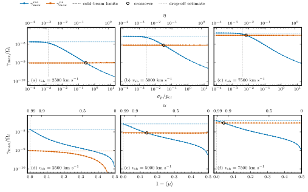
图注：蓝色为最快增长的共振模，橙色为非共振模；三列采用不同激波速度。上排a—c在前向束μ=1下扫描动量展宽，下排d—f在单能p=pcr下扫描俯仰角余弦展宽。水平线为冷束估计，对应式14和26；竖线为反应型共振最快增长率开始下降的估计，对应式43和49。
怎么看这张图：先固定一列比较上下排，动量展宽与角展宽不是同一扰动。角分布会改变粒子磁化和共振条件，即使保持电流也不保证Bell模不变。
来源与置信度：arXiv HTML；source verified；https://arxiv.org/html/2609.22480v1/growth-rate-vs-spread.svg
图8：解析增长率与混合PIC测量
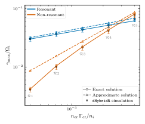
图注：横轴为宇宙线密度乘洛伦兹因子相对背景离子密度的比值，纵轴为最快共振与非共振模增长率。实心方块为R1—R5模拟测量；实线加空心圆为冷束色散关系的精确解析解（附录B），虚线加空心三角为解析近似。
怎么看这张图：比较方块与精确解，再检查近似式在哪个区域失效。此图验证冷束线性增长，不能据此直接读出真实超新星遗迹的最高粒子能量。
来源与置信度：arXiv HTML；source verified；https://arxiv.org/html/2609.22480v1/growth-rate-sim-vs-theory.svg
强相关工作
Bell的非共振电流驱动理论是本文对照基础，Amato与Blasi比较了激波附近近各向同性粒子驱动的共振和非共振增长。本文并非推翻这些解，而是指出它们的粒子分布与远上游逃逸群不同：原先共振峰对应低端动量，本文对应最高逃逸动量。查阅原论文参考文献中的Bell、Amato–Blasi条目时，应同时核对分布与参考系，不能仅比较最后一个增长率公式。
Haggerty等使用dHybridR研究不同宇宙线分布的模式竞争，本文补上相对论冷束解析解和持续注入模拟，并讨论宽分布后的竞争。与源附近自约束研究的联系在于扩散向弹道过渡时角向各向异性自然增强，但真实逃逸分布尚不确定，故这种联系目前是值得检验的物理延伸，并非已经解释了某个TeV晕。
同一事件 / 同类源线索：
相似工作：
（未提供）
基础理论 / 方法工作：
（未提供）
相反观点 / 张力线索：
（未提供）
2. Resolving the Galactic Center Region's Gamma-Ray Emission and Searching for its Neutrino Counterpart with HAWC and IceCube
- 来源：arXiv / astro-ph.HE
- 链接：https://arxiv.org/abs/2609.22577
- 作者：S. Yun-Carcamo, R. Babu, HAWC, IceCube collaborations
- 评分：novelty 8/10，importance 9/10，relevance 9/10，final 9.70/10
- 推荐理由：HAWC银心空间分量与12年IceCube联合检验，给出尚不足排除强子模型的定量上限。
中文题目：银心伽马辐射拆成点源与弥散分量后：HAWC与IceCube联合检验离强子预言还差多少
做了什么：银心超过100 TeV的伽马辐射使它成为银河系PeV宇宙线加速候选区，但伽马光子本身不能唯一确定是质子还是电子产生。作者用约2860天HAWC数据重新拟合银心，将过去较简单的单点源描述扩展为一个中心点源加银河弥散辐射模板，再把其中强子碰撞能产生中微子的部分转换成空间—能量模板，用12年IceCube缪子径迹寻找对应信号。
IceCube结果与背景相容，$p=0.49$；90%置信上限约为该强子模板预言中微子通量的12倍。因此这次并未排除透明源中的强子解释，也不是发现银心中微子。真正的新进展是把点源和弥散辐射的相对权重、能谱和仪器响应明确连接起来，给出可以与未来探测器直接比较的灵敏度缺口，而不是把区域内全部伽马光都归给一个紧致加速器。
为什么重要：银心同时有致密分子气体、多个可能的加速器和沿银河平面的弥散辐射。在有限角分辨率下，这些分量会相互分配通量，直接影响从伽马推算的中微子预期。本文证明引入弥散模板会降低中心点源的归属通量，并把这个分量划分带入后续中微子分析。其重要性在于提供更接近实际天空的多信使检验，同时诚实量化当前上限尚未触及模型的位置。
理论 / 观测 / 仪器方法价值：可迁移的方法是先用伽马数据拟合空间模型，再仅选取中性π衰变对应的强子弥散部分，结合假定强子起源的点源构建中微子模板，最后通过中微子有效面积、能量响应和逐事件角误差前向折叠。对LACT或其他阵列，值得学习的是这一整套接口及点源—弥散退化检查；不能直接移用HAWC的角分辨率、弥散归一化或IceCube的上限倍数。
为什么应该关注：对关注IACT、LACT与天体中微子的读者，这是从成像到粒子起源判定的完整实例：更好的伽马图像不仅增加探测显著性，还会改变中微子搜索的空间权重。下一步应关注点源和弥散分量的谱是否随能量变化、模型不确定度如何传递，以及南天背景抑制能否缩小12倍差距。由于银心在IceCube属于向下事件方向，北半球中微子望远镜的地球遮蔽背景优势也非常关键。
展开详细解读：文章讲解、背景、理论、重点章节、图表与相关工作
文章详细讲解
科学问题。 发现高能伽马只能说明有高能粒子，不能单凭光子证明银河宇宙线质子正在该处加速到PeV。质子与气体碰撞产生中性π和带电π，前者衰变为伽马，后者产生中微子；若这一路径占主导，两类信使应存在可计算关系。但银心空间复杂，必须先区分中心紧致成分和沿气体分布延展的成分，否则预测对象就不清楚。
作者怎么做。 HAWC分析使用Pass 5重建、神经网络能量估计和更新的伽马/宇宙线鉴别，包含阵列外落核事件以增加高天顶角与高能统计。在约8度见方区域内搜索源并用前向折叠似然比较模型，采用点源加HERMES弥散模板。随后假设点源完全为强子起源，只保留弥散模型的π衰变部分，固定相对形状，交给IceCube做单归一化参数的盲分析。
关键结果。 HAWC银心图的最高试验前显著性为9σ。点源在16 TeV的归一化为$4.90\times10^{-15}\,\mathrm{TeV^{-1}cm^{-2}s^{-1}}$，谱指数约2.99；统计和仪器系统误差分别给出。IceCube没有显著超额，90%上限为名义中微子预言约12倍，3σ证据和5σ发现潜力分别约26倍、42倍。三个倍数对应不同统计问题，不能互换。
局限和下一步。 点源仍可混入多个未分辨天体，弥散模板也可能吸收阈值以下源。伽马吸收未被校正，因此对高光深“隐藏”强子源的解释需要另外建模。IceCube固定了伽马给定的谱和点源/弥散比例，没有逐项扫描这些物理不确定度；后续可联合起始径迹与穿越径迹，改进南天背景抑制，并对谱形和空间模板做系统传播，而不是把未探测理解成加速器不存在。
关键结果是怎么做出来的
第一步是理解HAWC的选择改进为何重要。约99.9%的空气簇射事件属于宇宙线背景；更好的鉴别和阵列外事件重建增加有效信号，同时改变能量和方向响应。银心对HAWC处于不利观测几何，不能拿天顶附近标源的响应直接替代。本文用对应仪器响应把天空通量变成期望计数后再比较数据。
第二步是源分解。两种搜索流程都识别一个显著点源，但这不等于物理上只有一个天体。作者随后加入由气体分布、宇宙线模型与辐射过程生成的HERMES模板；图2的模型图和残差图显示它能描述主要结构。点源位置和能谱与早期结果保持相容，而归给点源的通量减少，表明部分原先集中成分实际上可能来自延展辐射。
第三步是正确选择中微子对应的伽马部分。HERMES包括逆康普顿、轫致辐射和π衰变，前两者并不自动对应相同中微子产额。作者只采用π衰变弥散分量，再加假定强子起源的点源。中微子振荡后采用近似味平衡，并把中微子与反中微子相加。图3右侧的中微子曲线是每味口径，不能与全味预言直接比较。
第四步是将物理天空交给仪器。空间模板需要经过IceCube随能量和方向变化的接受度及每个事件的角误差卷积，才能成为信号概率密度。搜索只拟合总信号事件数，其余谱形和相对强度继承HAWC模型。作者在解盲前通过信号注入和赤经打乱背景试验验证方法，使用五百万次伪实验构造统计分布，避免仅依赖简单渐近近似。
第五步是读出结果的实际含义。$p=0.49$意味着该统计量在背景下很常见；它不是“49%概率为背景”，更不是“51%概率发现”。上限/模型约为12，说明仪器还容许比当前强子预言大很多的信号，故名义透明强子模型仍完全可以成立。26和42则回答需要把注入信号增加多少，才有相应证据或发现潜力；它们并非此次观测测到的通量。
最后要分别理解两个“约35%”表述。正文在银心像素讨论弥散与点源的局部比例，结论又比较加入弥散前后点源归属通量的变化。这些口径不能推出全区域积分有35%一定来自弥散过程。可复用结果必须注明位置、积分区域及模型定义，尤其图3右侧已经对各自模板的所有像素求和。
展开背景、理论、公式、模型和章节导读
背景知识
宇宙线到达地球前受到磁场偏转，因此高能质子的方向通常不能直接指向加速源。伽马和中微子在传播中更接近保留方向，能够追踪宇宙线与气体的相互作用。银心是理想但困难的场所：高气体密度提高强子碰撞效率，复杂辐射场与多种源又增加解释退化。
空气簇射阵列观测的是初级粒子在大气产生的次级粒子。水切伦科夫探测器测量这些次级粒子引发的光，反推能量、方向及粒子类别。所谓HAWC点源是仪器分辨率下的统计成分，未必对应一个被单独解析的黑洞、脉冲星风云或分子云；成分名称应与物理对象保持区别。
中微子望远镜通过相互作用产生的带电粒子发出的切伦科夫光重建事件。缪子径迹方向信息较好，而且相互作用可发生在仪器外，扩大接受体积。但银心在南极上空属于向下方向，大气缪子会形成强背景；同样一个天空源，在北半球观测时可能位于地球另一侧，背景条件截然不同。
弥散辐射既可来自宇宙线普遍照亮星际气体，也可包含未分辨的源群。使用气体模板是在测试一种物理形态假设，不是把所有延展光都证明为同一粒子群。多信使关联应比较完整空间和能量分布，并将仪器角分辨率、能量阈值和相同区域口径纳入，而非只把两张图视觉叠加。
基础理论 / 方法脉络
强子碰撞把质子能量分配给中性和带电介子；它们的衰变链产生伽马、电子和中微子。对宽幂律质子谱，伽马与中微子的能量通量存在近似标度，但精确关系依赖谱形、反应截面及传播。本文采用已有转换处方，不能把“一个伽马配一个中微子”当成普适粒子计数关系。
逆康普顿过程由高能电子将低能光子散射到高能，也可产生很高能的伽马；因此超过100 TeV的光子是PeVatron候选证据，而非单独排除轻子过程的证明。中微子的互补价值正在于对强子过程更直接。非探测的约束能力则取决于预言信号是否已高于仪器灵敏度，不能只看是否存在一条上限曲线。
前向折叠把物理通量经过有效面积、能量弥散和点扩散函数转为数据空间预测。两个天空模型可以有相似总通量，但卷积后对不同方向和能量事件给出不同权重，因此空间分解会改变拟合和灵敏度。选模板时增加不必要自由度会损失约束力，完全固定模板又可能低估物理不确定性，两者需要通过模拟判断。
统计检验比较的是信号加背景与背景模型的最大似然。信号非负边界、预先确定还是扫描源位置，以及多次试验都会改变显著性解释。HAWC图中的试验前9σ、中微子的伪实验$p$值、90%区间和未来发现潜力属于不同层级，报告时应各自注明定义，不能把最大的一项当成联合发现显著性。
公式与推导
先把质子分布连接到光子发射。下面的第一式是解释物理模板的标准教学形式：
$n_H$为靶气体数密度，$n_p$为每单位能量质子数密度，微分截面决定产额。沿视线积分并除以$4\pi$得到各向同性发射近似下的强度，因而气体与宇宙线分布共同决定形态。
论文对中心点源采用原文式(2)：
$\phi_{16}$单位为$\mathrm{TeV^{-1}cm^{-2}s^{-1}}$，$\Gamma$为谱指数。16 TeV枢轴使归一化和斜率相关较小，而非一个物理谱折点。弥散强度另有每立体角单位，合并时必须先统一像素积分口径。
对透明$pp$源，常用教学近似写为
此处为全味中微子加反中微子，近似系数反映介子产额和能量分配，精确计算应采用本文引用处方。近似味平衡后每味约为全味的三分之一。它的用途是检查数量级和口径，不能替代逐能量模板。
对应的事件数为
$T$为活时间，$A_{\rm eff}$为有效面积；面积乘通量再积能量、立体角和时间得到无量纲事件数。若使用点源通量，应以角向δ函数或相应空间模板处理，不能再重复乘整片区域立体角。
HAWC的数据空间可用标准Poisson前向似然说明：
这里$j$包含方向和能量分箱，$b_j$为背景。各信号期望先通过仪器响应计算。这是方法教学表达，实际HAL实现还处理其数据分组和响应细节。
论文式(1)和(3)均使用似然比思想：
IceCube中$\theta=n_s$，零假设为$n_s=0$。为说明事件权重，可写最基本混合形式$P_i=(n_s/N)S_i+(1-n_s/N)B_i$；但本文对扩展源的赤经打乱背景进行了信号扣除，不能把这一简单式当成完整实现。实际显著性由背景伪实验校准。
最后把结果归一化到模型：
这些量以相同中微子模板积分定义，分母不是观测伽马通量。只有上限降至名义模型附近才开始直接测试其归一化；目前$k_{90}>1$，所以零信号结果没有排除该透明强子解释。
模型拟合 / 应用方法
HAWC自由参数包括点源赤经、赤纬、16 TeV归一化、谱指数以及HERMES模板缩放因子。作者比较幂律和曲率谱，并检查感兴趣区域边界改变是否显著影响结果。读表1时应同时看统计与系统误差：谱指数约$2.99\pm0.16$（统计）$\pm0.28$（系统），系统误差并不比统计误差小；不能只报最窄的不确定度。
仪器系统性通过不同响应配置评估，涉及探测器建模而不是简单给每个能谱点加同样误差。另一方面，气体图、宇宙线分布和未分辨源是天空模型系统性，与仪器响应不是同一类。残差图无显著结构支持当前模型够用，但不能证明每个分量的物理解释唯一。
中微子分析固定点源位置、谱形及点源/弥散比，只拟合总信号归一化。这提高了针对特定HAWC模型的检验力，也限制了上限适用范围。若真实中微子谱更硬、截止不同、主要来自另一空间成分，该上限不能直接移用；应重新计算仪器折叠后的信号概率密度。
扩展源的背景估计容易受到信号在赤经打乱后重新分散的影响，因此作者使用既有信号扣除形式，并在盲态下做注入和背景试验。最实用的复现检查是：零信号试验是否校准、注入信号是否恢复、上限覆盖率是否符合定义、不同角误差与能量段是否过度主导。这些是该类分析的验收路径，不代表本文公开了每一项检查的完整数值。
未来联合分析应传播HAWC谱和形态不确定度，而不是把所有上游最优值固定为绝对真值。对伽马吸收较强情形，还需把发射端通量与地球看到的通量分开；吸收会提高中微子相对观测伽马的比例，但程度依赖目标光子场和源位置，不能用“可能隐藏”任意增加预言。
重点章节 / 结果段落怎么读
- 数据与III.1。 先明确2860天HAWC和12年IceCube各自测什么，理解阵列外事件、南天背景与点源分解的作用。
- III.2模板构造。 按π衰变选择、味振荡、相对归一化和仪器卷积顺序读；尤其核对弥散模型中被剔除的轻子过程。
- 表1和图2。 看点源参数、弥散缩放与残差，判断增加成分具体改变了什么；不要把试验前峰值显著性当作所有分量都各自9σ。
- IV.2和图3。 将$p=0.49$、90%上限、3σ与5σ潜力分开，并核对每味/全味与模板积分口径，再读结论中的灵敏度缺口。
关键图表与解读
图2：银心拟合模型与残差
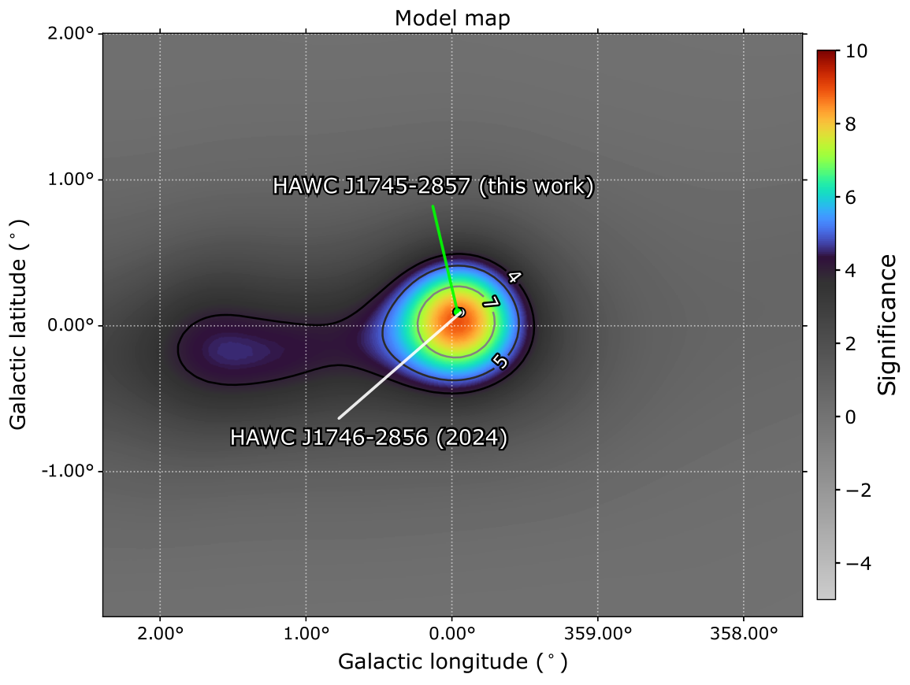
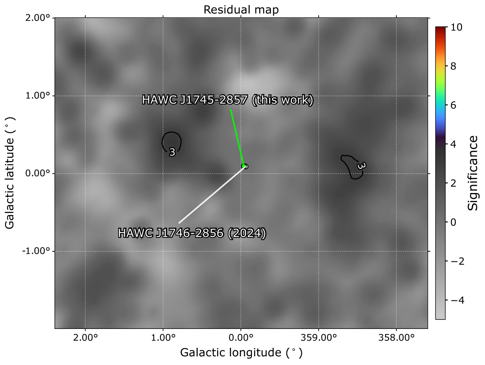
图注：拟合后的银心区域图。等高线数字标示统计显著性；低于4σ用灰阶，更高用彩色。带引线的绿、白标记分别为本文和此前HAWC工作给出的点源最佳位置，颜色只作辨识。左：含点源与弥散辐射的最佳模型。右：数据减去模型后的残差，没有显著未建模结构。
怎么看这张图：先确认扩展辐射已纳入，再看残差是否仍留有空间结构。图上定位与显著性不是中微子发现，右图只检验伽马模型对当前数据的描述。
来源与置信度：arXiv HTML；source verified；https://arxiv.org/html/2609.22577v1/Model_Map.png；https://arxiv.org/html/2609.22577v1/Residual_Map.png
图3：伽马谱与中微子上限
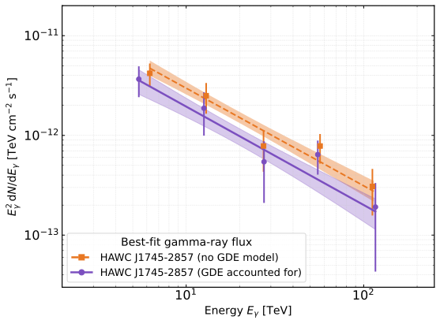
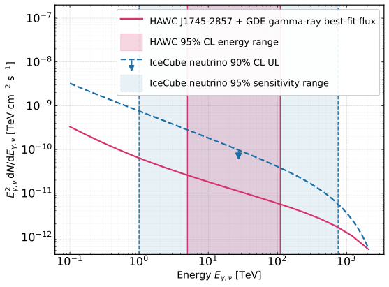
图注：左：包含银河弥散辐射时点源的最佳伽马流量（紫实线、圆点），对比仅点源模型（橙虚线、方点）。右：IceCube PSTracks给出的单味中微子加反中微子流量上限（蓝虚线），以及HAWC弥散模板加点源的总伽马最佳流量（红实线）；两者均对对应空间模板所有像素求和。伽马弥散模型含多种辐射过程，而中微子模板只由其中π⁰分量和假定强子起源的独立拟合点源导出。红色阴影示HAWC模型流量的95%置信能量区间，蓝色阴影示对IceCube上限贡献最强的95%能量范围。
怎么看这张图：中微子上限约为相应强子预测的12倍，尚不足排除该模型。不要直接将红色总伽马曲线与蓝线上限相除：红线还含不产生中微子的弥散成分。
来源与置信度：arXiv HTML；source verified；https://arxiv.org/html/2609.22577v1/ps-only-fluxpoints-updated.svg；https://arxiv.org/html/2609.22577v1/total_model_fluxes.svg
强相关工作
先前HAWC银心研究以单点源模型报告高能延伸，H.E.S.S.则在更高角分辨率下研究中心源与银河脊。本文新增的点源加HERMES弥散处理承接这些结果，并未声称新的位置就是与旧源不同的天体；局部谱和归属通量的变化主要来自数据与模型改进。
中微子部分承接IceCube银河平面扩展模板分析、Ahlers与Murase的伽马—中微子关系以及Kelner等的$pp$产额参数化。与只搜索一个点源相比，本研究把实际伽马形态作为先验信息；代价是上限依赖该模板。原文同时讨论起始径迹、IceCube-Gen2及北半球观测覆盖的改进方向，同日报的IceCube Upgrade文章可帮助理解重建和标定如何影响下一步灵敏度。
同一事件 / 同类源线索：
相似工作：
（未提供）
基础理论 / 方法工作：
（未提供）
相反观点 / 张力线索：
（未提供）
3. GRB 220706A: a gamma-ray burst with a month-long engine and a luminous supernova
- 来源：arXiv / astro-ph.HE
- 链接：https://arxiv.org/abs/2609.22426
- 作者：Benjamin P. Gompertz, Nusrin Habeeb, Dheeraj R. Pasham, Antonio de Ugarte Postigo, Daniele B. Malesani, Phil A. Evans, Kim L. Page, Ben Rayson
- 评分：novelty 8/10，importance 9/10，relevance 8/10，final 9.35/10
- 推荐理由：静止系27天中心引擎活动与明亮超新星使超长GRB模型受到具体挑战。
中文题目：GRB 220706A的发动机可能工作了近一个月：晚期X射线耀发与明亮超新星候选的联合约束
做了什么：GRB 220706A的伽马射线主爆发只持续约87秒，看上去是普通长暴；但Swift、NICER和Chandra的后续观测显示，X射线反复增亮一直延伸到观测者时间约51天。宿主红移0.8577使这对应源静止系约27天。作者用非耀发时段建立余辉基线，核查晚期低计数探测的成像与背景，并结合谱演化和变化时标，认为仅靠平滑外激波余辉难以解释，倾向于极晚期中心发动机活动。
深晚期模板扣除宿主后，光学数据出现一个可由超新星模板描述的隆起。若采用宽带谱推断的宿主消光下限，候选峰值已非常明亮，较高消光方案甚至进入超亮超新星范围。不过消光是间接约束，光学缺少超新星确认光谱，晚期X射线单点对余辉的超出也仅约2.8σ。文章提供一个极端、值得进一步核验的事件，不能将“近一月持续发动机”和“确认GRB伴随超亮超新星”写成同等牢固的既成事实。
为什么重要：事件提醒我们，探测器能段内的主爆发时长不等于能源供给时长。若晚期耀发确由内部发动机产生，紧致剥壳恒星的简单坍缩时间就不足以解释，需要延迟回落、磁星能量释放或其他结构。与此同时，潜在的高光度超新星要求模型解释能量如何在喷流与抛射物之间分配，因此比单独一个长X射线尾更具约束力。
理论 / 观测 / 仪器方法价值：方法价值在于把稀疏时域资料分成余辉基线、异常耀发和光学额外分量，分别核对仪器背景与物理可行性。宿主差分、准同时宽带谱、静止系时间、余辉闭合关系和相对耀发宽度提供互补判断；其中任何一步的假设改变，都应传递到最终发动机与超新星解释。本文还示范了为什么非成像仪器中的显著谱残差仍需保留未建模背景的可能。
为什么应该关注：对高能瞬变随访，最直接的启发是不要只按早期伽马时长分配后续资源。晚期低亮度监测可能发现平常被停止观测掩盖的发动机活动，而光学与X射线同步覆盖可以区分超新星热辐射和喷流耀发。LACT或其他高能设施若参与类似事件，应关注是否存在新的粒子加速时段，但本文没有报告甚高能探测，不能由长寿命直接推断TeV可见性。
展开详细解读：文章讲解、背景、理论、重点章节、图表与相关工作
文章详细讲解
科学问题。 普通长暴通常由快速旋转、失去外包层的大质量恒星坍缩解释。超长暴的发动机活动却可远超紧致恒星自由落体时间，可能意味着更延展的前身星、长期回落或新生磁星。GRB 220706A提供了把这类问题推进到源系近一个月的候选案例。
作者怎么做。 研究汇总Swift高能光变、NICER分时谱、Chandra深曝光、地面光学近红外以及毫米和射电资料。宿主及邻近星系由谱线区分红移，晚期模板用于宿主扣除。作者先排除耀发拟合余辉，再看迟到的光学隆起能否由SN 1998bw模板描述，最后比较坍缩吸积、磁星、周围介质相互作用与潮汐瓦解解释。
关键结果。 以陡降段定义的活动时长指标约为十的4.75次方秒，在比较样本中位列前端；另有远晚于这个指标时段的X射线活动达到源系27.25天。光学早期未检出与毫米/X射线谱之间存在缺口，支持消光；按最低消光修正的超新星候选峰值绝对星等不暗于约−20.25，但这是观测r带映射到静止系近紫外的模板标度，不能随意等同于精确静止系r带峰值。
局限与下一步。 最晚耀发稀疏且弱，超新星仅为测光候选，消光范围较宽；光学隆起也可能与发动机耀发有关。多数比较暴没有同样晚的覆盖，所谓最长纪录受随访选择影响。需要更密集的晚期多波段观测和瞬变光谱，才能区分爆炸类型与能量来源。
关键结果是怎么做出来的
首先确定关联宿主。影像上相邻的A、B两个星系并非物理伴星系，红移分别约0.8577和0.7207。差分光学位置以及毫米、射电位置支持A为宿主。红移一旦确定，所有时间、波长和光度解释才有共同尺度，不能用邻近亮目标代替。
其次建立余辉参照。排除耀发的光变可由折断幂律描述，晚些时段单幂律斜率约0.98，与前者一致。晚期Chandra点只高于外推约1.48σ，前后XRT点分别约2.80和2.84σ。作者逐观测重新分箱，检查热像素、混入源与背景，保留晚期探测；这些检验支持信号可信，却不把每个弱点升级为独立高显著性发现。
第三步区分晚期余辉结构与内部活动。晚期变化的宽度相对发生时刻约0.34，小于简单外激波遭遇密度突变通常产生的宽变化。谱指数又随耀发变化，支持额外辐射区或持续发动机。然而能否排除所有复杂介质几何并未被穷尽，所以“发动机持续”仍是基于这些证据的优选解释。
第四步约束光学为什么暗。在约1.51天构建毫米、J带上限和X射线的准同时谱，未消光的光学上限低于连接两端的同步谱。允许浅谱时得到视觉消光大于约0.9星等；要求常见同步谱最浅斜率0.5则需大于约1.7星等。由X射线气体柱推得约3.6星等只是一种经验估计，尘埃与气体比在不同暴之间散布很大。
第五步解释晚期光学隆起。作者固定时间伸缩为1，以SN 1998bw的静止系U带模板匹配观测r带，加上受早期上限约束的衰减余辉，得到亮度缩放约1.58。消光越大，本征超新星越亮；但缺少确认光谱，且光学上升恰逢X射线覆盖缺口，喷流产生的长时标光学耀发还不能排除。
最后回到发动机模型。大半径超巨星自由落体可拉长供给，但超新星爆炸会破坏连续自由落体假设；磁星可提供长时能量，却要同时满足被耀发遮住的平台和超新星能量分配。潮汐瓦解在位置上可行，整体X射线与光学演化更接近GRB族。文章将这些作为模型竞争，未完成唯一参数解。
展开背景、理论、公式、模型和章节导读
背景知识
伽马暴的余辉是喷出物与周围介质相互作用产生的辐射，能够在中心发动机停止后继续很久。因此观测到一个月后的X射线本身并不证明发动机还在工作，关键要看它是否偏离平滑余辉、变化是否足够快、谱是否改变。
常用$t_{90}$只覆盖某台仪器指定能段内中间90%的伽马计数。晚期活动可能变软进入X射线，也可能亮度低于触发阈值，所以长短分类受能段和灵敏度影响。本文另外采用陡降段的结束时刻作为活动指标，但该指标与最晚独立耀发也不是同一个量。
剥壳恒星坍缩既可形成相对论喷流，也可产生超新星。余辉通常先衰减，超新星由膨胀和能量沉积塑造的隆起稍后出现。若余辉特别暗，隆起更容易看见；如果宿主很亮或消光强，则必须进行深模板差分和尘埃修正。
暗暴的“暗”通常指光学相对X射线过弱，而非所有波段都很暗。尘埃、红移、电子谱和辐射分量差异都可能影响这一比例。本源已有红移约束，尘埃解释有支持，但仍需区分外激波X射线与混入的发动机辐射，否则会高估所需消光。
基础理论 / 方法脉络
同步辐射谱的斜率取决于电子能谱和观测频率相对冷却频率的位置。谱指数与时间衰减指数之间的闭合关系可检验简单外激波图像，但前提是同一分量、同一动力学阶段和近似不变的微物理参数；耀发时不能直接套用余辉关系。
宽带上限也是约束。光学未检出意味着本征谱经消光衰减后必须低于极限；若连接毫米与X射线的最低曲线已经超过极限，便需要消光或改变辐射模型。本文毫米探测约3.7σ，不是高信噪的完整谱峰测量，故对谱形的假设仍重要。
晚期耀发的相对宽度反映因果几何。外激波大范围发光的等到达时间面会平滑局部密度结构；内部发动机重新启动则可以在很晚的绝对时刻产生较窄变化。这个区分支持内部来源，但不能用单个比值取代完整辐射输运计算。
超新星模板拟合把已知事件的光变形状缩放到新对象，能检验形态相似性而不能证明谱类型。固定时间伸缩减少参数，也限制了模型自由度；消光、模板紫外差异、余辉基线和非同时观测共同影响本征峰值，是解释“超亮”时的主要误差来源。
公式与推导
先把观测时间和波长变到源系：
以$z=0.8577$换算，约51天对应约27天，观测r带落到近紫外。时间延长和尘埃修正因此都必须在同一红移下处理。
把基线写成标准余辉幂律：
$\Gamma$为光子数谱指数，$\beta$为能流密度谱指数；两者差1，不能混用。仅用非耀发区拟合$\alpha$才能建立有意义的晚期超额。
标准绝热外激波、观测在冷却频率以上时的教学闭合关系是
由$\alpha\simeq0.98$得到$p\simeq1.97$。原文方法节排成$(3p+2)/4$，与其给出的$p$不符；这里按标准关系保留负号，并把原文环境推断视为有限证据，避免重复排版错误。
消光按星等定义作用于流量：
第二式用于本征模型高于观测上限时，再用假定消光曲线将$A_\lambda$转为$A_V$。它是条件下限，不是直接测得的单值消光。
晚期光学模型写成
作者固定伸缩$s=1$并拟合亮度$k$，得到约1.58；对应的星等差为$-2.5\log_{10}k$。这一步描述与模板的相似程度，不提供超新星光谱确认。
比较耀发持续和发生时间，构造无量纲诊断
本文据此反对简单外激波密度跳变解释。采样稀疏意味着宽度仍是估计，不能把它当作精确脉冲结构。
若用坍缩供给估算，正文采用自由落体标度
十太阳质量、十的十三次方厘米的延展前身星可给出周至月量级时间，而紧致剥壳星困难。系数依初态和质量分布而定，且超新星抛射会破坏连续自由落体，因此只用于尺度比较。
磁星模型的标准教学表达式为
$I$为转动惯量、$\Omega_0$为初始角频率，$t_{\rm sd}$取决于磁场和初始周期。光变能容纳某些毫秒周期、强磁场方案，并不表示平滑偶极公式已经解释了每次突发耀发。
模型拟合 / 应用方法
余辉拟合排除灰色标记耀发区，分别使用早期折断幂律和较晚单幂律，检查晚期外推对基线选择的依赖。晚期XRT重新按观测而非自动凑计数分箱，避免把一次弱探测与长串上限混合；Chandra提供独立成像位置和低流量参照。
明亮XRT耀发切成六个50秒谱，比较幂律、截止幂律、Band函数及幂律加黑体，并将短时不应变化的吸收柱在各谱间绑定。AIC平衡拟合改善与参数数目，支持谱曲率存在，但截止幂律与热成分仍不能唯一辨别；更复杂模型的较低残差不自动确定辐射机制。
NICER采用夜间数据、更严格粒子背景筛选以及SCORPEON源与背景联合模型。第二时段约2.5千电子伏附近出现残差，增加Gaussian明显改善统计量，但仪器没有成像能力，不能独立测同视场背景。日报因此仅称候选谱结构，不把源系约5.3千电子伏的特征认作确定原子线。
光学拟合需要真正晚期且滤光片匹配的宿主模板。原文表格与方法部分对部分模板日期、天数有不一致，本文不把这些日期作为核心测量引用；事实主线是深晚期差分检出隆起。模型固定伸缩与余辉约束，消光主要来自宽带间接估计，决定超亮分类的系统误差远大于仅看$k$误差所得印象。
重点章节 / 结果段落怎么读
1.1与1.2： 分清87秒的伽马$t_{90}$、十的4.75次方秒的陡降指标、27天的最晚耀发，三者回答不同问题；接着检查图2的基线与弱晚期点。
1.3与1.4： 先读宽带谱如何产生消光下限，再读光学模板。超新星本征亮度的结论依赖前一步，不能单摘一个负星等。
讨论四类发动机： 逐个核对能否同时解释时标、光度、快速变化与潜在超新星，而非只看能量总量够不够。
方法3.1和3.5： 晚期XRT的人工核验与NICER背景限制决定异常信号的可信度；闭合关系中的排版不一致需以定义和代入结果交叉核对。
关键图表与解读
图2：GRB 220706A高能光变与谱变化
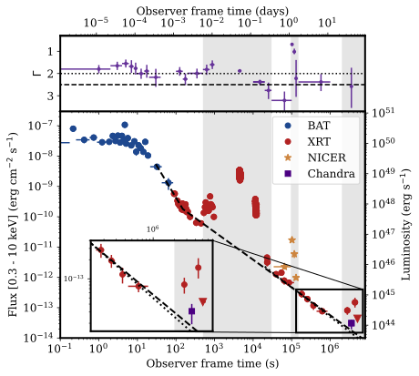
图注：X射线和伽马光变。采用UKSSDC Burst Analyser提供的S/N=5、无谱演化BAT光变，并外推到XRT能段。虚线为30秒至10⁶秒数据的折断幂律拟合，点线为3×10⁴至10⁶秒的单幂律拟合；二者接近，提示约500秒主耀发前有一小段余辉主导阶段。灰色标出的耀发时段均排除在拟合外。上方面板为简单幂律拟合的光子指数随时间变化，指数更低、谱更硬的值位于上方。
怎么看这张图：先用基线识别偏离，再读晚期点的信噪与采样，不能把所有数据都当连续引擎输出。最长活动的解释受最晚弱信号和余辉模型影响。
来源与置信度：arXiv HTML；source verified；https://arxiv.org/html/2609.22426v1/xray_spec+lc_with_inset.svg
图5：宿主扣除后的光学与近红外测光
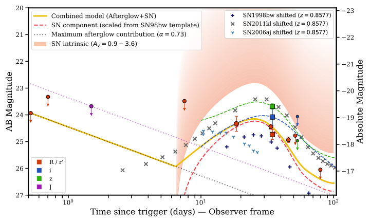
图注：观测者系测光。黄实线为拟合R/r′数据的余辉加超新星模型；点线为R/r′及J上限允许的最大余辉贡献。红虚线是用SN 1998bw U波段模板拟合的R/r′超新星分量，最佳幅度k=1.58±0.23，比模板峰亮约0.5星等。蓝、绿虚线分别为i、z波段的仅超新星拟合；原图注将其模板依次列为SN 1998bw的V、B波段，伸缩因子固定为1。阴影为依据宽带谱约束、按宿主AV=0.9—3.6校正后可能的R/r′超新星亮度。加号、Υ和叉号分别给出移至z=0.8577的SN 1998bw、SN 2006aj、SN 2011kl作比较。
怎么看这张图：AV范围来自不同间接假设，不是精确测得的消光区间；观测r在该红移对应静止系近紫外。图注的i/z模板顺序按原文保留，不将其当作已经核实的逐带K校正，主定量结论依靠R/r′模板。
来源与置信度：arXiv HTML；source verified；https://arxiv.org/html/2609.22426v1/220706A_SN_LC_fit_revisedplot.svg
强相关工作
GRB 111209A及光谱确认的SN 2011kl是本文最有针对性的比较对象，Greiner等的超新星研究与Metzger等的磁星解释提供了联合能量预算框架。GRB 220706A把可能的活动推到更晚，但其超新星确认程度较弱，不能因为光变相似便自动继承前者的谱分类。
Sari等的同步余辉理论提供谱时闭合关系，Zhang等的$t_{\rm burst}$方法将X射线陡降纳入活动时长。与喷流潮汐瓦解事件AT2022cmc等比较则用于检验另一种长期供能来源。本文的新增信息是极晚随访与潜在明亮光学隆起的组合，统计普遍性仍受绝大多数暴缺少同样晚观测的限制。
同一事件 / 同类源线索：
- https://arxiv.org/abs/2609.22426
- https://arxiv.org/html/2609.22426
- https://www.swift.ac.uk/xrt_curves/01114937/
相似工作：
（未提供）
基础理论 / 方法工作：
（未提供）
相反观点 / 张力线索：
（未提供）
4. Particle Acceleration in Stratified 2D MRI Turbulence: From Reconnection to First- and Second-Order Fermi and Shear Acceleration
- 来源：arXiv / astro-ph.HE
- 链接：https://arxiv.org/abs/2609.24735
- 作者：Astor Sandoval, Mario Riquelme, Jorge Cuadra
- 评分：novelty 8/10，importance 8/10，relevance 9/10，final 9.35/10
- 推荐理由：分阶段追踪重联与费米加速，解释MRI能量上限随尺度分离变化，贴近粒子加速。
中文题目：吸积盘湍流怎样分三步加速粒子：重联负责注入，一级与二级Fermi过程接力增能
做了什么：低光度黑洞吸积盘中的粒子碰撞稀少，流体模型可以描述整体角动量输运，却不能自动决定非热粒子从哪里产生。作者重新分析有垂直分层的二维磁旋转不稳定性粒子模拟，跟踪最终超过能谱截止能量、且仍留在盘内的粒子，将能量变化逐项分解为理想电场、非理想电场和整体剪切做功，发现加速主要沿大尺度磁场反向的电流片发生。
过程分为三段：等离子体团分裂时，重联的非理想电场先把粒子从热群中注入；随后汇聚流的运动电场产生快速一级Fermi式增能；最后与运动磁结构反复作用，形成较慢的二级Fermi增能并伴随约三成剪切贡献。四组回旋频率与轨道频率之比为3.5至28的模拟，用这个链条解释了截止能量随尺度分离近似线性增加的现象。结果来自二维、正负粒子等质量的局域模型，尚不能直接外推为真实质子或电子的天体最高能量。
为什么重要：看见电流片与高能粒子重合，容易把所有增能统称为重联；但非理想电场在总能量账本中占比小，也不意味着它不重要。本文显示它可能承担关键注入门槛，而后续大部分能量来自理想运动电场和剪切。这种分工影响模型如何确定注入效率、最高能量与逃逸时间，比仅拟合一个非热幂律更接近可预测的加速机制。
理论 / 观测 / 仪器方法价值：可复用的方法是对真实粒子轨迹积分做功，并按每个粒子自己的注入时间对齐，再比较不同尺度分离的模拟。直接按全局时间平均会把错开的短暂注入冲淡，看不出非理想场作用。作者同时利用轨迹、局域密度、磁场反向层以及独立估计的湍流速度检验物理解释，提供了区分“触发增能”与“承担能量”的诊断思路。
为什么应该关注：银心、M87和活动星系核附近的非热辐射与中微子模型都需要解释高能粒子供应，不能无限自由地指定质子注入谱。本文给出湍流自发形成注入和加速区的候选途径，但没有计算辐射冷却、质子相互作用或观测能谱。下一步值得关注三维与真实质量比后电流片寿命、粒子逃逸及最大能量标度是否保持，再讨论其对伽马射线和中微子预测的意义。
展开详细解读：文章讲解、背景、理论、重点章节、图表与相关工作
文章详细讲解
科学问题。 磁旋转不稳定性能够从差分转动中抽取能量，维持盘湍流并输运角动量。先前动力学模拟还产生了非热尾部，但高能粒子究竟由重联、随机散射还是剪切加速，及为何截止能量随数值尺度分离增长，并不清楚。本文针对这两个问题追踪微观能量来源。
作者怎么做。 模拟采用局部旋转剪切盒，径向周期边界、垂直开放边界，初始分层密度和垂直磁场，正负粒子质量相同。四组模型改变初始回旋与轨道频率之比；在最终盘温度约为静能的0.3倍时选择高能粒子，并回溯轨迹、场和局域流速。以能量方程逐项积分，还用注入时刻对齐平均，分开短暂注入与长期加速。
关键结果。 最充分分离的一组最终非热谱指数约2、截止洛伦兹因子约48。非理想场在最初注入时最重要，之后理想场主导；较晚阶段理想场贡献与增长率约0.3倍轨道频率的随机加速相符，整体剪切贡献约30%至40%。高能粒子主要位于大尺度场反向层、密团外围，而不是永久困在最密的等离子体团中心。
局限与下一步。 模拟仅覆盖四五个轨道、二维轴对称且等质量粒子，尺度分离远小于真实盘。二维限制了可重联的磁场分量，选取最终高能且存活粒子也不能直接给出全体粒子的注入概率。三维、真实离子电子质量比、冷却与全局流入需要进一步检验；本文的机制与标度证据不能替代这些验证。
关键结果是怎么做出来的
第一步看湍流环境。分层和开放垂直边界允许盘膨胀及物质流出，大尺度发电机形成随高度换向的磁场。反向区域形成电流片，既给重联提供位置，也把后续高能轨道限制在特定层内。因此加速不是在完全均匀、任意方向的湍流中发生，背景拓扑是解释的组成部分。
第二步建立完整能量账。电场做功与整体剪切项之和能够再现高能粒子的能量演化，垂直重力对留在盘内的所选粒子较小。若只比较最终能量，非理想电场似乎不显著；但每个粒子注入时间不同，全球时间平均会掩盖短时贡献，必须重新对齐。
第三步观察团块分裂与注入。代表轨迹起初在密团内，磁重联将其拆分为两个分离团块，粒子经X点附近受到非理想电场加速并逃到较低密度区。多粒子的局域密度在对齐注入时刻附近也出现低谷，说明这个图像并非仅由单个漂亮轨迹支持。
第四步看快速理想场阶段。分离团块之间仍有汇聚等离子体运动，粒子沿大尺度电流片做Speiser式往复轨迹，受到运动电场增能。作者将它解释为一级Fermi式过程，并检查理想做功速率随尺度分离线性增加。这里“一级”强调汇聚几何带来的系统增益，不要求整个阶段的能量一定按同一指数律增长。
第五步核对慢阶段。粒子反复与运动磁结构作用，电场贡献的平均能量近似指数增长。用盘内湍流均方速度约0.125倍光速平方、磁结构间距估计散射自由程，得到约0.32倍轨道频率的增长率，与拟合约0.3接近。它是支持二级Fermi解释的数量级一致性，并非精确测得完整动量扩散算符。
最后把四组连接起来。截止洛伦兹因子约为5、12、25、48，对应尺度分离3.5、7、14、28；初始注入能量变化不大，快速阶段的可达能量随分离增加，而末段只有有限驻留时间，额外乘以几倍。这解释近似线性标度，但有限模拟范围不证明可以无界外推到天体尺度。
展开背景、理论、公式、模型和章节导读
背景知识
吸积要发生，气体必须失去一部分角动量。不同半径转得不同的磁化流体可通过磁张力交换角动量，这就是磁旋转不稳定性的基本图像。它提供湍流能量来源，却不指定每个粒子如何分到这份能量。
低密度、低光度吸积流中库仑碰撞不够快，电子和离子可有不同温度，并产生压力各向异性与非热尾部。普通磁流体模型把这些微观分布平均掉；粒子模拟能追踪轨迹，但计算代价迫使磁回旋尺度与盘尺度靠得远比真实系统近。
磁重联改变磁场连通性，局部非理想电场可以使粒子脱离冻结流体的限制，跨过注入门槛。之后即便电场满足理想流体关系，高能粒子也不必随流体一起运动，仍能在运动磁结构之间获得能量。所以“理想电场”不等于“不能加速”。
一级Fermi过程在汇聚结构中提供有方向的平均增益，二级过程来自随机运动结构，单次可能增能也可能减能，但统计上有净增益。剪切则利用不同位置流速不同，粒子跨越流层时抽取宏观运动能。实际湍流可以先后或同时包含这些过程，分类必须结合几何与能量诊断。
基础理论 / 方法脉络
局部剪切盒把盘的一小块变换到共转参考系，保留Kepler剪切、Coriolis力和垂直引力。这样能研究局域湍流，同时省去整个黑洞周围几何；代价是没有完整径向流入、全局喷流及强引力辐射传输，所得高能谱是粒子分布而非直接观测谱。
尺度分离参数衡量一个轨道时间内粒子能完成多少次回旋。增大它使宏观电流片相对微观轨道更大，可能延长有效加速路程。重要的是判断哪些速率按轨道时间保持不变、哪些按回旋时间保持不变，而非把数值分辨率提高与物理参数改变混为一谈。
理想与非理想场分解使用局域流体平均速度，非理想部分是总场减去运动电场。空间平均、粒子位置平均、盘内质量权重平均并不等价；高能粒子倾向位于特定低密度层，因此它们经历的磁化程度不能简单用全盘均值替代。
注入定义借助粒子能量与磁化参数的比较，随后把每条轨迹时间零点移到达到门槛的时刻。作者为减少后期样本减少的偏差，限制对齐分析的时间范围。这个样本是条件选出的高能幸存者，适合解释其增能历史，但不能直接推导所有热粒子进入非热尾的效率。
公式与推导
正文的剪切盒从Kepler局部速度和垂直平衡开始：
$x,y,z$分别为径向、方位和垂直坐标，$\Omega_0$为轨道角频率。等温分层决定初始密度与离盘高度的关系。
比较宏观与微观尺度，定义
这里用高斯单位制，$S$无量纲。四组模拟改变$S$，其初始Alfvén速度约为0.01倍光速。
对粒子动量方程点乘速度，磁力不做功，得到正文能量方程
右侧依次为电场、整体剪切与垂直重力功率。数值积分与实际$\gamma$相符，是分解可信的第一项检查。
再将电场分为
$\mathbf U$是局域体流速度。做功仍需与粒子速度点乘；场幅值大不保证沿粒子运动方向做正功。保留$c$保证单位一致。
注入附近按磁化能量尺度组织：
这是作者用于理解注入的经验尺度，实际采用相应位置或盘平均定义；它不表示每个粒子都在同一能量瞬间注入。
快速理想场阶段的增能标度为
$\eta$是有效运动电场效率、$f$为磁场放大倍数。较充分分离组中二者大致不随$S$变，约为0.01和10量级，因此每轨道时间的增能随$S$增加。
用跨越加速区的时间限制这一阶段：
代入作者估计$L\sim(2\pi)^2v_{A,0}/\Omega_0$可得约$0.04S$的量级标度。这个粗估主要解释线性依赖，数值系数并不能独自重建表中最终截止，不能冒充精确拟合。
晚期随机增能采用
$\ell$为散射间隔的长度，式中右侧有每秒量纲。独立速度与长度估计给出$\lambda\sim0.3\Omega_0$，与能量演化相容。
有限流入时间使随机增益停止增长：
取作者的$\alpha\sim0.5$得到约几倍增益，且不随$S$显著变化。于是这一阶段保留快速阶段的线性标度；真实系统还需与辐射、相互作用和逃逸时间比较。
模型拟合 / 应用方法
作者首先以幂律乘指数截止描述盘内非热粒子谱，得到各组截止，用于选择回溯样本。这个谱拟合是模拟诊断，不是与观测伽马谱比较；最终高能样本的选择会排除逃出盘的粒子，解释应限于被选群体。
做功积分按轨迹采样场与速度，并比较总积分与实际能量。随后分解理想、非理想、方位和平面方向，按个体注入时间对齐。计算功率前进行时间平滑，窗口选择可能改变短时峰形，因此机制判断同时依赖空间轨迹和流场，不能只凭一条平滑导数曲线。
随机加速率并非完全自由拟合：作者测盘内湍流速度，用先前模拟得到的主要结构间距估计自由程，再与电场贡献的指数增长比较。这加强了物理解释，但没有完整测出每个能量的扩散与漂移系数，也未检验所有可能的间歇增能模型。
尺度外推是最大限制。四组中最小分离3.5偏离较大，主要趋势在7以上较清楚；有效电场效率和磁场放大的约25%变化，以及二维拓扑、等质量等，都使斜率比绝对最高能量更可信。下一步应在三维扩大尺度分离，纳入真实质量比和损失项，直接比较加速与逃逸，而不是仅延长当前直线到天体参数。
重点章节 / 结果段落怎么读
第二、三节： 先看局部盒子、等质量粒子和开放边界，再理解大尺度发电机与电流片。没有这些条件，后面的加速位置图很容易被误读为所有盘的普适结构。
第四节前半： 比较全局时间的图3与注入对齐的图5，理解为什么总能量占比小的非理想场仍能主导注入；再用图6的轨迹验证空间过程。
第四节后半： 将随机增能率与独立湍流速度估计对照，注意剪切仍贡献约三成，不能把整个后期能量都归给二级Fermi。
第五节与结论： 把注入、快速增长、有限时间随机乘法分开追踪其$S$依赖。线性截止标度是这三步组合的解释，三维与真实质量比是作者明确留下的问题。
关键图表与解读
图5：按注入时刻对齐的粒子加速
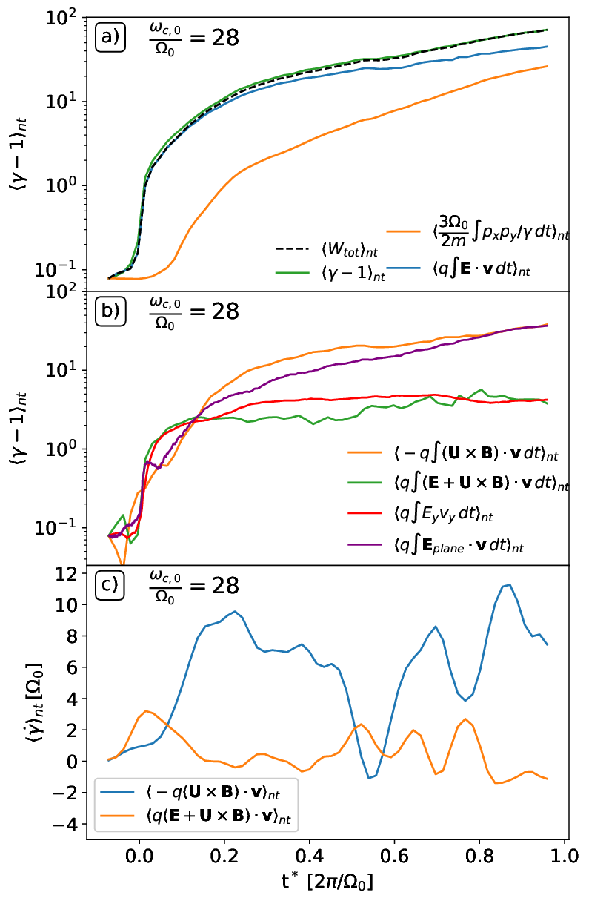
图注：a、b与图3同类，但横轴改为注入对齐时间t*=t−tinj，平均采用最先注入的354个粒子。a展示平均动能、电场与剪切做功及两者之和；b分解理想和非理想电场做功，并增加方位向（红）与极向（紫）电场贡献。c为理想（蓝）和非理想（橙）电场对粒子做功的功率。
怎么看这张图：先看注入附近非理想功率，再看理想电场接管。按各自注入时刻对齐有助识别阶段，但样本是选中的被追踪粒子，不代表全体热粒子的注入效率。
来源与置信度：arXiv HTML；source verified；https://arxiv.org/html/2609.24735v1/Energy3t-to28.png
图13：注入向理想场主导过渡时的功率
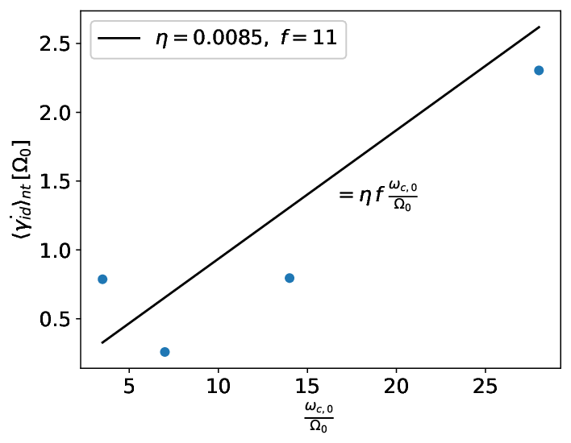
图注：粒子从非理想电场主导的注入阶段过渡到理想电场主导阶段时，理想场对粒子能量的功率贡献。线性增长采用磁场放大因子f=11和投影理想电场效率η=0.0085推导；η定义为非热粒子平均的−q(U×B)·v/B除以其平均速度。
怎么看这张图：这张图检验快速阶段的功率标度，不是最终能谱截止的直接拟合。结合图5区分初始注入、快速一阶费米和后续较慢增长，f和η来自本模拟诊断。
来源与置信度：arXiv HTML；source verified；https://arxiv.org/html/2609.24735v1/Wrate_scale.png
强相关工作
Sandoval等先前的分层MRI粒子模拟建立了非热尾和截止随尺度分离增长的现象，本文使用同类模拟进一步解释过程，因此应视为机制诊断的推进，而非新的独立天体观测。Bacchini等强调MRI饱和湍流也能持续加速，本文通过时间分段和轨迹将这一结论细化到注入与后续阶段。
磁重联中的Speiser轨迹、Fermi增能及湍流剪切加速为本文提供基础图像。与一些二维孤立重联模拟中高能粒子困在磁岛内不同，本研究的高能粒子多在密团外围与大尺度电流片活动；这提示分层MRI的发电机拓扑影响机制，不能把孤立重联盒子的能量分配直接移植到整片吸积盘。
同一事件 / 同类源线索：
相似工作：
（未提供）
基础理论 / 方法工作：
（未提供）
相反观点 / 张力线索：
（未提供）
5. New bounds on light scalars from the tip of the red giant branch
- 来源：arXiv / astro-ph.HE
- 链接：https://arxiv.org/abs/2609.22638
- 作者：Natnael Debru, Audrey Fung, Saniya Heeba, Hugo Schérer, Katelin Schutz, Aaron C. Vincent
- 评分：novelty 8/10，importance 9/10，relevance 8/10，final 9.35/10
- 推荐理由：自洽MESA引入标量冷却并用27球状星团约束，改进恒星新物理界限。
中文题目：红巨星顶端为何能限制新粒子：把轻标量共振发射放进恒星演化后，电子耦合上限显著收紧
做了什么：若轻而弱耦合的标量粒子能从红巨星氦核中逃走，就会额外带走热量，推迟氦点火；氢壳层继续燃烧使核心变重，红巨星分支顶端反而更亮。作者重新计算轻标量与电子耦合时，在简并等离子体中经纵向等离激元共振产生的发射率，将其逐时、逐空间网格加入MESA恒星演化，而不是在一个固定温度密度点与中微子冷却简单比较。
研究把模拟顶端光度与27个银河系球状星团的总辐射星等比较。在亚千电子伏质量区域，得到95%单边置信上限：电子耦合强度参数小于约1.63乘十的负三十四次方；若解释为Higgs门户混合，对应混合角正弦小于约2.18乘十的负十一次方。不同旧约束的改善倍数不同：相对旧TRGB估计，耦合平方参数约改善250倍；相对当时最强白矮星限制约70倍，不能统一写成所有模型都提高两数量级。
为什么重要：新粒子冷却会改变产生新粒子的环境本身。温度、密度和核心质量变化后，标量共振发射与中微子发射不按相同比例变化，因此用一条固定冷却阈值代替完整演化可能误判限制。本文的进步是把微观等离子体计算、恒星反馈与观测统计闭合起来；约束仍依赖自由逃逸、恒星模型和误差处理，而不是无条件的实验室排除。
理论 / 观测 / 仪器方法价值：可迁移的方法是先计算局域发射率表，再以真实演化轨迹中的温度和电子密度插值，把单位体积损失转换成恒星结构所需的能量项，最终使用同一观测量比较。作者还检验初始氦丰度、金属丰度、质量、混合长度和质量损失的成对变化。这套流程适用于其他额外冷却机制，但微观发射率及其对介质的依赖必须重新计算，不能只换一个耦合常数。
为什么应该关注：这是恒星天体物理直接参与暗部门搜索的实例，与伽马射线或中微子望远镜形成互补：弱耦合到难以直接探测的粒子，仍可在漫长演化中留下群体光度印记。值得关注的是未来星团距离、金属丰度和共同理论系统误差如何改变联合限制，以及连续发射通道能否把质量覆盖延伸到共振终止区以上。它不需要假设标量组成全部暗物质。
展开详细解读：文章讲解、背景、理论、重点章节、图表与相关工作
文章详细讲解
科学问题。 红巨星顶端光度已被用于限制轴子、中微子磁矩和暗光子等新物理，但轻标量的介质混合具有特殊共振结构。过去以代表性核心温度密度估计发射并套用能损阈值，未充分追踪恒星因冷却而重新调整。本文检验这种简化对实际耦合限制的影响。
作者怎么做。 作者使用有限温度场论求纵向光子与标量的混合自能，在弱阻尼近似下积分共振峰，得到随温度、电子密度及标量质量变化的发射率。将该表接入MESA额外热源接口作为损失项，演化低质量恒星到氦点火，模拟不同金属丰度、标量质量和耦合，再与27个星团联合比较。
关键结果。 额外损失使核心点火推迟、核心质量增大，顶端光度提高，但温度和密度调整在不同半径方向并不相同，中微子损失甚至随之下降。低质量标量限制近似平坦，约十千电子伏以上逐渐变弱，因为可共振区域缩小；当质量高于核心最大等离子体频率的约二十千电子伏量级时，本文计算的共振通道不再提供限制。
局限与下一步。 研究忽略共振可行时较小的连续发射通道，强耦合时粒子被困也需重新处理。似然把每个星团的理论0.12星等误差与观测误差平方相加，再相乘，并未展示全体共同系统误差的完整协方差模型。成对敏感性检查很有用，但不等于对全部恒星参数进行高维联合边缘化。
关键结果是怎么做出来的
首先确定能量从哪个通道流失。标量与电子耦合后，在介质中可以与纵向等离激元混合；两种色散曲线相交时产生共振。图2给出同一恒星不同半径的例子：高密度处等离子体频率足够高，外部较低密度处则未必能产生该质量的标量。这说明损失不是全核均匀常数。
其次把微观率放进演化。作者预先建立温度、密度二维表，在每个网格和时间步查值，因此发射率随恒星被冷却后的新状态更新。若只把原来的中微子率乘常数，便会错过两类发射对密度和温度不同的依赖，也错过共振区域随演化移动。
第三步核对代表恒星是否能代表星团。作者先用0.7至3太阳质量的116条轨道构造等时线，再验证老星团顶端主要由约0.8至0.9太阳质量恒星构成，0.8太阳质量单轨道在标准和额外冷却情形均能复现代表顶端。这个检验使大参数网格计算可行，但适用对象是老银河系球状星团，不能直接推广到年轻族群。
第四步看反馈的物理方向。示例用强于最终限制的耦合，得到顶端光度对数增加约0.5，即约1.25星等变亮，以便清楚展示结构变化。该示例点处于已排除区，不能被误读为允许的新粒子能让观测恒星普遍亮这么多。内部更冷、外核与壳层更热的变化也说明“额外冷却使整颗星处处降温”并不正确。
第五步建立观测比较。在每个质量上扫描耦合，对不同金属丰度插值出各星团的顶端总辐射星等，将差异按观测与理论误差加权。越强耦合使模型过亮，联合似然下降；以单边似然差阈值取95%上限。没有发现新标量的证据，图中红区是条件排除。
最后解释边界形状与改善口径。低质量时发射率几乎不随质量变化，所以界线平坦；高质量时共振体积和热激发减少，限制松弛。电子耦合平方、耦合本身和Higgs混合角的改善倍数不能混用，尤其新TRGB比旧TRGB强约250倍并不意味着比其他所有观测强250倍。
展开背景、理论、公式、模型和章节导读
背景知识
低质量恒星耗尽核心氢后，形成由简并电子支撑的氦核，外围氢壳继续燃烧。核心质量随壳燃烧增长，直至温度达到氦点火条件。红巨星分支顶端就是这段演化结束前的最高光度，在老恒星群的颜色星等图中形成明显边界。
简并压主要由电子填满量子态产生，对温度的响应不同于普通理想气体。额外冷却不只是让表面变暗，而是延迟氦点火，让核心长得更重、壳燃烧更亮。这种看似反直觉的“冷却导致顶端变亮”是整个约束的物理基础。
等离激元是带电介质中集体电荷振荡的量子描述，纵向模的色散由电子密度和速度分布决定。它不是自由真空光子；标量与其混合的可行性依赖介质，因此必须计算原位等离子体条件，不能用真空衰变公式替代。
弱耦合粒子产生率低，但平均自由程长，能够把核心能量真正带出恒星。若耦合过强，粒子反而可能被吸收或困住，只改变内部输运。本文的限制区域远在自由逃逸适用范围内，但图上的上方排除阴影不应被理解为无限大耦合都沿用同一计算。
基础理论 / 方法脉络
有限温度自能的实部描述传播色散，虚部描述产生和吸收等耗散过程。计算发射率时将虚部按相空间与热分布积分，介质混合贡献在两种传播模匹配时出现窄峰。弱阻尼允许用狄拉克函数近似共振，积分后不再显式依赖峰宽。
简并电子的Fermi动量由数密度确定，有效等离子体频率包含相对论能量修正。靠近核心边缘密度下降，共振对较重标量首先关闭；因此质量扫描改变的不只是一个热指数，还改变整颗星参与发射的空间体积。
恒星结构方程同时包含能量产生、损失与熵变化。额外损失促使核心及壳层重新调整，结构反馈再修改发射率，形成需要自洽迭代的耦合问题。这是本文优于固定基准点估算的主要原因，但理论误差仍来自核反应、组成、对流和距离等输入。
联合星团样本利用金属丰度范围检验模型趋势。若误差相互独立，多样本可以收紧界线；若理论零点、距离标定或总辐射修正存在共同偏移，增益会受限制。本文以固定理论误差进入每个星团似然，阅读“最强限制”时应将这种统计假设保留在结论中。
公式与推导
以下粒子物理公式取$\hbar=c=k_B=1$。电子耦合模型及其Higgs门户映射为
其中$v_{\rm EW}\simeq246\,\mathrm{GeV}$，一般电子耦合模型不必满足最后一项，只有采用Higgs门户时才换算混合角。
简并极限下，介质尺度由
决定。$\alpha$在这里是电磁精细结构常数，与标量耦合参数不同；将实际厘米密度代入自然单位公式前必须换单位。
标量与纵向模在同一能量动量处匹配：
求此交点决定局部共振动量$k_L$。若该位置的介质不支持交点，共振率为零，不能用全核平均温度补出一个虚构共振。
弱阻尼共振项有标准窄峰极限
峰宽变小而峰高增大，积分保持有限；这解释为何最终共振率可不显式含阻尼率，但仍依赖色散曲线的斜率。
正文式12可写为
$Q$是单位体积、单位时间能量损失，$v_*$为代表电子速度，末项是共振积分的Jacobian。它包含密度、温度和运动学三重依赖，不能普遍按中微子率缩放。
接入恒星演化时，单位质量损失为$\epsilon_\phi=Q/\rho$。标准能量守恒的教学形式是
$m$是质量坐标，$s$为单位质量熵；额外项的负号导致结构调整和氦点火推迟，而不是预先规定表面光度的变化。
演化所得顶端光度映射为观测量：
越亮星等越小。示例对数光度增加0.5，对应星等减小1.25，符号不能反过来。
在固定粒子质量下，作者使用
各星团误差按独立项相加，$C$为与参数无关常数；0.12的单位是星等。该表达式没有包含跨星团共同协方差，不能称已对其完全边缘化。
单边95%界线取
得到亚千电子伏区$\alpha_{95}\simeq1.63\times10^{-34}$，再用第一式换算$\sin\theta$。这是给定发射、恒星和误差模型的上限，不是粒子存在的置信度。
模型拟合 / 应用方法
参数网格覆盖约1电子伏至20千电子伏质量、宽范围标量耦合和星团金属丰度。每个网格点重新演化恒星，取氦点火前最高光度；插值必须保留耦合增强后快速变亮的非线性，不能用一个固定线性修正代替整个网格。
基准采用0.8太阳质量、初始氦丰度0.24、混合长度2和无质量损失。作者用M92为例成对改变这些参数及金属丰度，发现在合理老星团范围内偏移多小于观测误差；更高初始质量影响较大，但不代表样本顶端的实际质量。这是局部敏感性证据，而非全面后验采样。
似然在每个粒子质量上寻找最佳耦合，再向过亮方向取单边上限。理论0.12星等与各观测误差平方相加，简化为独立高斯项。若未来重新分析，应显式测试共同总辐射零点、距离尺度和组成模型相关误差；这项建议没有被写成作者已经完成的检查。
自由逃逸要求平均自由程大于恒星半径，作者估计约束附近远满足此条件。连续发射在共振关闭后可能重新重要，但本文未算，故不把二十千电子伏以上画成无限延续的排除区。对Higgs门户还涉及核子耦合，本文按其给定近似忽略核对混合的贡献，结果应按该模型口径引用。
重点章节 / 结果段落怎么读
第二节： 先看图2色散交点，再看式12，理解质量如何改变共振区域；避免把“低质量粒子都容易产生”当作完整机制。
第三节： 核对发射率如何接入MESA、0.8太阳质量代表星团的验证，以及成对参数变化与全面统计边缘化的区别。
第四节前半： 用图5理解核心反馈，再用图6看它如何变为顶端变亮；示例耦合在排除区，是机制展示而非允许值。
第四节后半与结论： 图7连接模型和27个星团，图1展示最终限制。分别检查低质量平台、高质量转弱、比较对象与耦合变量，才不会误读改善倍数。
关键图表与解读
图5：标量冷却对红巨星内部的反馈
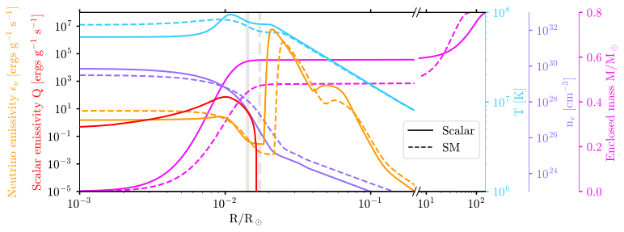
图注：一颗0.8太阳质量、金属丰度[M/H]=−2.05（对应M92）的红巨星在氦点火前，标量发射率Q、中微子发射率εν、温度T、电子密度ne与包围质量M的径向分布。实线计入标量能量损失，虚线不计入；示例参数为αφee=10⁻³¹、标量质量1049 eV。灰色竖线标示核心边界。
怎么看这张图：该耦合是展示结构反馈的例子，已经远大于最终允许上限。重点看温度、核心质量如何随额外冷却改变，理解为何不能固定核心条件只缩放旧发射率。
来源与置信度：arXiv HTML；source verified；https://arxiv.org/html/2609.22638v1/profiles_combined_final.svg
图1：轻标量与Higgs混合的限制
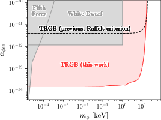
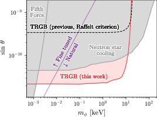
图注：左：电子耦合强度αφee=ge²/(4π)随标量质量的限制。红色为本文球状星团TRGB排除区域，黑虚线为以基准核心参数重标度中微子损失所得旧TRGB限制，灰色为白矮星轫致辐射及第五力搜索已有界限。本文界限完全位于所讨论标量自然参数空间内。右：Higgs与轻标量混合角θ随质量的限制，比较中子星冷却及第五力搜索；本文大部分界限位于Higgs门户模型的自然参数空间。
怎么看这张图：左图的耦合平方与右图混合角不是同一参数，改进倍数也不同。低质量平台来自共振产生，较高质量转折需结合核心等离子体频率和完整恒星演化解释。
来源与置信度：arXiv HTML；source verified；https://arxiv.org/html/2609.22638v1/final_limits.svg；https://arxiv.org/html/2609.22638v1/final_limits_higgs.svg
强相关工作
Raffelt的恒星能损准则提供快速估算框架，后续介质混合研究发现轻标量的纵向共振产生可主导低质量区域。本文并非首次提出这个通道，而是将其有限温度率放入自洽演化并与更新星团数据比较，因此对旧TRGB界线的改善同时来自物理反馈与统计资料。
白矮星光度函数中的轫致辐射限制、中子星冷却和实验室第五力搜索覆盖不同耦合与质量范围。本文在约1电子伏至10千电子伏的Higgs门户区间占优，极低质量仍受长程力实验更强限制，较高质量则需其他通道。MESA及MIST等时线框架构成恒星建模基础，未来共同系统误差处理会影响这些天体限制如何公平比较。
同一事件 / 同类源线索：
相似工作：
（未提供）
基础理论 / 方法工作：
（未提供）
相反观点 / 张力线索：
（未提供）
6. A New Probe of Strongly-Interacting Dark Sector using Neutrino Telescopes
- 来源：arXiv / astro-ph.HE
- 链接：https://arxiv.org/abs/2609.24887
- 作者：Jose A. Macias Cruz, Christopher V. Cappiello, P. S. Bhupal Dev, Suchita Kulkarni
- 评分：novelty 8/10，importance 9/10，relevance 8/10，final 9.35/10
- 推荐理由：高能中微子在遗迹中微子背景共振吸收可探测强暗部门，预测与下一代望远镜相关。
中文题目：把宇宙中微子背景当靶：未来望远镜能否从高能谱缺口读出强相互作用暗部门的质量谱
做了什么：如果暗部门像量子色动力学一样存在禁闭和束缚态，它可能包含稳定暗π介子及更重的暗ρ介子。本文提出，高能天体中微子在传播中与低能宇宙中微子背景相遇，可在质心能量等于暗ρ质量时共振湮灭；暗ρ主要衰变到暗粒子，原来的高能中微子便从可见通量中消失，在能谱留下吸收缺口。缺口位置取决于暗ρ质量平方与靶中微子质量之比，多个中微子质量本征态还可能产生多个相关缺口。
作者计算宇宙学传播与红移展宽，并以IceCube-Gen2射电阵列十年曝光的设计响应估计可检验参数。标准背景密度下，选定通量与质量模型可触及约4.7乘十的负七次方量级的暗ρ中微子分支比。这里是未来灵敏度预测，不是发现了谱缺口；暗部门与普通物质的完整微观模型、超高能中微子通量以及标准热历史下暗物质丰度仍有重要条件。
为什么重要：常规暗物质直接探测主要寻找暗粒子撞击普通物质，而这里借助传播中的共振，试图测量暗部门内部的束缚态谱。若相关缺口真的被分辨，就不只是额外衰减，而可能携带共振质量信息。文章的价值是展示一种新观测通道，其说服力取决于能否同时排除源谱变化、探测响应与其他中微子相互作用造成的相似特征。
理论 / 观测 / 仪器方法价值：分析把三个层次分开：强相互作用模型决定暗π与暗ρ的质量关系和衰变宽度，门户相互作用决定中微子分支比，宇宙学输运与仪器决定缺口能否被看见。这样的分层便于替换不同暗部门或源演化模型，也清楚显示退化：共振能量同时依赖靶质量，缺口深度同时依赖分支比、靶密度和路径，单个凹槽不能独立测出全部参数。
为什么应该关注：这为超高能中微子望远镜补充了一类粒子物理目标，尤其适合讨论Gen2射电阵列的宽能段曝光和能量分辨能力。对实际分析，优先事项应是验证无吸收基线、通量不确定度与能量迁移矩阵，而不是只把理论曲线放在灵敏度线之上。若未来源谱统计足够好，还可与中微子质量及背景密度限制互相交叉，但本文没有给出独立测量宇宙中微子背景的无模型方法。
展开详细解读：文章讲解、背景、理论、重点章节、图表与相关工作
文章详细讲解
科学问题。 强自相互作用暗物质可以在暗部门内部通过改变粒子数的反应获得丰度，而与普通物质耦合极弱，传统搜索因此困难。作者追问：暗部门中更重的共振态，能否通过天体中微子传播而被间接探测，而不要求暗物质本身在探测器中明显散射。
作者怎么做。 模型固定暗颜色数与味数各为3，用非微扰计算拟合给出暗π质量、衰变常数和暗ρ质量关系，选择暗ρ可衰变为两暗π的区域。将暗ρ到中微子的分支比作为自由参数，计算共振截面、红移相关的光学深度与抵达地球的谱，再与Gen2十年事件预期比较。
关键结果。 暗共振可比标准模型ρ介子拥有大得多的中微子分支比，因此即便没有巨大宇宙中微子背景过密，也可能产生可观测吸收。不同暗质量移动缺口位置，不同靶中微子质量分裂缺口，暗ρ宽度与宇宙学红移共同展宽。基准模型在一部分暗π质量与耦合尺度区域有预测检验能力。
局限与下一步。 门户模型没有完整建立，分支比不是从所有既有限制联合推导的唯一值；事件预测依赖特定宇宙成因中微子谱。简单标准热史、两部门动理学平衡的丰度与Bullet Cluster自相互作用限制存在张力，部分可探区域需不同热史或更弱平衡假设。下一步需要完整响应、源谱扰动与统一统计检验，才能把概念灵敏度变成可信发现前景。
关键结果是怎么做出来的
先看质量层级。暗π是稳定暗物质候选，暗ρ是传播过程中临时产生的共振态。作者要求后者质量大于前者两倍，才能主要衰变为两个暗π并真正损失高能中微子。若这个通道关闭，宽度与信号计算都需重做，不能把参数图红色禁区当作探测灵敏度差而已。
第二步确定共振位置。低温背景中微子被近似为静止非相对论靶，质心能量平方随入射能量和靶质量线性增加。暗ρ质量平方决定需要哪段高能中微子；同一个暗态面对三个不同质量本征态会有三个共振能量，但能否在数据里分开还取决于宽度、红移与能量分辨率。
第三步沿宇宙路径积分。今天观测的能量在高红移处更高，背景数密度也按体积膨胀变化，因此同一条中微子轨迹可能在某个时代经过共振。来自不同红移的源被不同程度削弱，最后的缺口不能用一个局域截面乘固定距离代替。
第四步把谱变成事件。作者采用AGN式源演化与两项宇宙成因谱模型，折入Gen2设计灵敏度，并用从半个中心能量到两倍中心能量的宽窗口近似能量分辨影响。基准为十年、正常质量排序、最轻中微子质量0.01电子伏、标准背景密度；每个前提都参与可达分支比的数值。
第五步理解“2σ可探”。分析假定将来看到无吸收模型预期的事件数，再问某吸收方案会被排除到何种程度，采用Feldman–Cousins区间。作者扫描重叠能窗选信号最强的位置，正文未给完整发现搜索的全局试探修正或源谱 nuisance 联合拟合。因此图中2σ是指定预测框架的排除灵敏度，不能称已获得或保证获得2σ发现。
最后检查暗物质宇宙学。参数图同时放上丰度、自散射和质量拟合适用域；有信号的区域不一定在最简单宇宙学中自洽。作者讨论熵注入稀释过量丰度等可能，部分示例需很大稀释因子。这个条件对暗部门可行性重要，不能只留下“大片参数空间可测”的结论。
展开背景、理论、公式、模型和章节导读
背景知识
宇宙中微子背景是早期宇宙留下的低温中微子群。标准宇宙学预测其密度，但单个粒子能量很低，直接探测困难。高能中微子经过极长距离时，它们可以充当遍布空间的靶，而不是进入探测器后才发生作用。
禁闭暗部门借鉴普通强相互作用：基本暗夸克束缚成暗介子等复合态。暗π可由对称性保持稳定，暗ρ则可快速衰变。这里的“强相互作用”主要指暗部门内部，不意味着它与普通核子强烈相撞，所以仍可能躲过常规直接探测。
共振是一种质心能量匹配效应。入射能量很高但靶质量很小，质心能量仍可落在轻暗态范围；因此超高能天体束能够探测远低于其自身能量的质量尺度。只引用望远镜能段不能直接当作被探测粒子的质量。
吸收缺口与发射峰都可用于谱学，但天体源的本征谱并不已知。宇宙线组成、最大加速能量和源演化改变宇宙成因中微子谱，探测器宽能量分辨又会模糊结构。新物理解释需要相关缺口形状和多种数据支持，不能把任何少计数能窗都归因于暗共振。
基础理论 / 方法脉络
作者用暗π质量相对衰变常数的比值描述暗部门强度，再用非微扰拟合映射暗ρ质量。这个经验关系有有限适用域，不能外推到任意谱结构。暗ρ衰变到暗π的相空间因子在阈值附近迅速改变宽度，所以缺口宽度包含真实质量谱信息。
中微子门户由混合到新规范玻色子等机制实现，但本文把相关分支比参数化。这样保持较一般性，也意味着现有实验、宇宙学与其他衰变道的限制须在具体模型中补做。允许一个参数取值不等于已经构造出满足全部条件的理论。
光学深度是沿路径累计的碰撞概率；存活率为其负指数。弱吸收时缺口深度近似与分支比和靶密度乘积成正比，强吸收时趋于饱和。高背景过密可以增强信号，但标准引力聚集预期有限，极端过密情形不能当作默认现实环境。
三种质量本征态在宇宙距离上失去相干，可按相应靶质量计算共振。最轻质量增加时三个质量相对差异变小，缺口更容易合并。由此产生暗ρ质量与中微子绝对质量的退化，外部中微子质量信息对解释尤其重要。
公式与推导
以自然单位制写暗谱参数，正文采用
给定$m_{\pi_D}$和$\xi$即可在拟合适用域内求暗ρ质量。本文另要求$m_{\rho_D}>2m_{\pi_D}$，保证主衰变道打开。
两体衰变宽度为
作者取有效强耦合约6；宽度与质量同能量单位，阈值附近相空间因子让共振变窄。
非相对论靶近似给出
$i$标记质量本征态。靶若不再足够非相对论，需要卷积热运动分布，尤其很轻的本征态不能无限使用静止靶近似。
正文的Breit–Wigner截面为
$b_\nu$表示采用一致味约定的中微子分支比。峰位置由质量决定，整体强度与分支比相关，宽度还依赖暗衰变通道。
恢复$c$以便连接厘米单位的数密度，路径光学深度写成
这里采用标准均匀背景；过密云需另限积分路径。分母把红移间隔转成传播时间，使$\tau$无量纲。
源红移分布与存活率相乘后得到
采用作者对源发射函数$L$的约定，额外单位因子随该定义一致处理。不能先对所有源取平均光学深度再指数化，因为不同路径的权重不同。
真正实验比较需要事件与响应卷积，教学表达式为
$R_j$是重建到第$j$能窗的概率。本文以宽滑动能窗近似分辨效应，未来严谨分析应使用完整迁移矩阵与背景模型。
在小光学深度极限，解释深度退化可用
这是教学近似，不适用于饱和缺口。它直接说明仅凭深度无法分别测得耦合、密度和路径，必须引入外部信息或更多谱结构。
模型拟合 / 应用方法
这篇没有拟合已有吸收信号。无吸收源谱由已有宇宙成因计算的结果用两个函数近似，分别反映μ衰变和中子衰变贡献，并采用AGN式红移演化。作者换用其他演化和强子相互作用模型时称定性结构保留，但可达分支比的精确数字仍依赖基准通量。
传播计算扫描暗π质量、$\xi$和中微子分支比，并可改变最轻中微子质量与背景过密。正常排序、0.01电子伏和均匀背景是主要示例。分支比作为自由参数允许讨论广泛现象，但不能替代具体门户模型的实验约束及味结构分析。
灵敏度使用十年Gen2射电设计预期，扫描约十的七次方至十一次方GeV，以半能量至两倍能量的重叠窗口寻找最大差异，采用无吸收事件数的Asimov式预期比较。它是概念排除预测；要转成发现分析，需包含扫描效应、未知源谱参数、低计数统计与能量尺度系统误差。
宇宙学一致性在结果图中另外叠加。最简单动理学平衡热丰度与Bullet Cluster要求不完全兼容，一些区域需非标准熵稀释，且不能破坏核合成。论文提到自散射约束可能在更复杂情景下改变，但未给逐一完整模型，日报将其保留为条件，而不删除这些限制换取乐观结论。
重点章节 / 结果段落怎么读
第二、三节： 先确定暗π和暗ρ各扮演什么角色，核对质量关系有效域和衰变阈值，再看共振截面；否则易把靶误认为暗物质。
第四、五节： 把源谱、宇宙红移与背景靶密度分开，追踪一个今天能量固定的中微子怎样沿路径经过共振，理解图1的缺口位置和宽度。
第六节： 明确十年设计曝光和无吸收预期是假设；“2σ”用于何种排除问题、窗口如何选择，比单看灵敏度曲线更重要。
第七节与End Matter： 将可探区与丰度、自散射、核合成条件同时阅读；额外熵稀释等假设影响模型可行性，并非可省略的旁注。
关键图表与解读
图1：遗迹中微子背景上的暗共振吸收
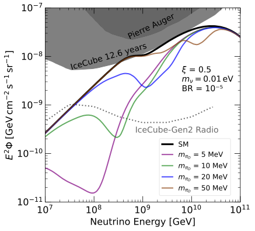
图注：宇宙成因中微子流量：黑实线无衰减，彩色实线为不同暗π质量下、与宇宙中微子背景湮灭造成衰减后的流量。灰色阴影为Pierre Auger和IceCube当前限制，并给出未来IceCube-Gen2 Radio灵敏度供比较。
怎么看这张图：吸收靶是遗迹中微子，不是银河暗物质柱；谱谷位置由共振质量和遗迹中微子质量共同决定。基准源谱、宇宙演化及分支比改变谷深，曲线不是观测到的缺口。
来源与置信度：arXiv HTML；source verified；https://arxiv.org/html/2609.24887v1/Fig1_Spectrum.svg
图2：Gen2 Radio对吸收特征的预测灵敏度
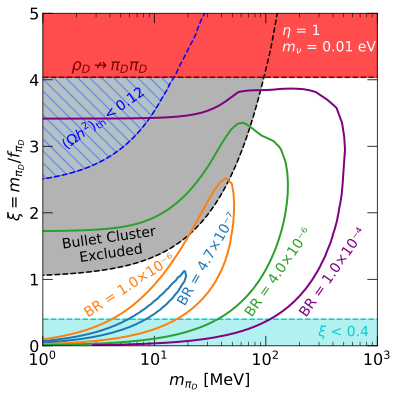
图注：暗π质量—ξ平面上，不同暗ρ衰变到中微子—反中微子分支比对应的2σ吸收信号灵敏度。蓝斜线区被标准热遗迹要求排除，灰区为Bullet Cluster自相互作用限制；红区不满足暗ρ到两暗π的运动学条件，青区超出式2拟合的有效范围。
怎么看这张图：2σ是基于假定曝光与源谱的预期检验，不是发现。能达到的轮廓与标准热史允许区域需同时读，不能只看仪器覆盖就宣布整个暗部门模型可行。
来源与置信度：arXiv HTML；source verified；https://arxiv.org/html/2609.24887v1/Fig2_BR_Eta_1.svg
强相关工作
利用宇宙中微子背景产生Z共振吸收已有长期研究，但标准Z质量要求极高入射能量；标准ρ共振质量更低，却因中微子分支比极小而信号弱。本文把这一传播谱学思路转到暗ρ，允许不同质量谱及增强的中微子分支比，是机制层面的延伸。
SIMP暗物质框架通过暗部门内部改变粒子数的反应决定丰度，与普通弱相互作用冻出机制不同。本文的探测思路可接入多种中微子门户及未来射电阵列，但与既有轻媒介中微子自相互作用吸收模型可能产生类似谱形；要证明看到的是禁闭暗部门，需要比单个缺口更多的质量与宽度关系证据。
同一事件 / 同类源线索：
相似工作：
（未提供）
基础理论 / 方法工作：
（未提供）
相反观点 / 张力线索：
（未提供）
7. Multi-wavelength Behaviour and Lepto-hadronic Modeling of PKS 0215+015 Around the Epoch of IceCube-220225A
- 来源：arXiv / astro-ph.HE
- 链接：https://arxiv.org/abs/2609.24633
- 作者：Athira M Bharathan, Markus Böttcher
- 评分：novelty 7/10，importance 8/10，relevance 9/10，final 9.05/10
- 推荐理由：直接检验IceCube候选耀变体的能量收支，预测中微子不足是关键反证。
中文题目：PKS 0215+015虽在IceCube告警时活跃，单区模型仍难供给足够中微子：一次有价值的能量预算检验
做了什么：红移约1.715的平谱射电类星体PKS 0215+015位于IceCube-220225A的90%定位区域内，且在告警前后处于伽马射线、射电及其他波段活跃期。作者汇总Fermi与Swift资料，为该时段构建宽带能谱，用一个运动辐射区中的电子同步辐射、自康普顿和外康普顿过程描述主要光子输出，再加入质子，检查在不超过已有光子数据的条件下最多能产生多少中微子。
模型中质子功率已达到电子约69倍、磁场约107倍，强子辐射仍次要，预测中微子数也远低于1：文中给出的10天窗口约为0.00013。这个结果凸显了“位置和时间相符”与“物理模型能解释一次告警”的区别。电子模型本身还需要异常高的注入最低能量和很陡的注入谱，且未完全再现LAT谱形，因此本文应读作候选关联的困难与条件检验，不能据此宣布发现了新的中微子耀变体。
为什么重要：中微子指向误差区内出现耀变体耀发，是值得随访的线索，却不是来源确认。电磁能谱允许多少强子级联、中微子效率有多高、喷流需承担多少质子功率，提供另一层可检验约束。本文的主要收获是把一个看似有利的时空巧合转成具体能量张力，说明单区稳态图像可能不足，也说明单事件关联必须与背景和族群统计共同评估。
理论 / 观测 / 仪器方法价值：方法上先用光子确定电子与辐射环境，再增大质子分量直到次级光子开始受约束，得到条件中微子上界，比单独调质子功率拟合一次事件更有约束力。短时变化也给出辐射区尺度限制，但其中多普勒因子来自同一个能谱模型，所以只是共享参数下的一致性检查，不能称完全独立、无模型验证。
为什么应该关注：这直接关系到高能伽马与中微子联合分析：没有明显强子光子成分不等于没有质子，但要获得可探中微子，常常会同时产生受X射线或伽马数据限制的级联。值得跟进的是爆发时宽线区光场、辐射位置和多区结构，而非简单把质子功率再放大几千倍。本文不提供高显著性源关联，也没有证明改变光场后一定能解决问题。
展开详细解读：文章讲解、背景、理论、重点章节、图表与相关工作
文章详细讲解
科学问题。 IceCube-220225A为Bronze级轨迹告警，估计能量约154TeV；PKS 0215+015距最佳定位约1.75度，位于90%区域且当时活跃。研究要回答的是，这个源的多波段状态是否容许足够强的光强子相互作用，从而让候选时空关联具有合理物理基础。
作者怎么做。 文章分析100MeV至300GeV的LAT数据、Swift XRT与UVOT，建立长期光变与告警附近的能谱。使用半径约五乘十的十五次方厘米、磁场1G、多普勒因子20的单区模型，先求冷却和逃逸下的电子分布，再加入质子同步辐射、光介子产生和电磁级联，并折入IceCube有效面积估事件数。
关键结果。 电子模型可描述双峰整体形态，电子与磁场功率接近均分；加入的最大示例质子功率为四乘十的四十五次方尔格每秒，虽然显著高于电子功率，仍给出很低的中微子事件预期。最短显著伽马变化约6.61小时，与所选几何的光行时约6.3小时相容，但这种相容共享多普勒因子假设。
局限与下一步。 电子最低洛伦兹因子约十万、注入指数5.5不典型，LAT详细谱形没有完全匹配；文中没有提供全部参数的置信区域或严格的全模型上界。告警背景、搜索试探和候选源总体也未形成完整关联似然。时变外光场和多区模型值得检验，但当前结果不构成物理关联确认。
关键结果是怎么做出来的
先看告警语境。Bronze流平均天体纯度约30%，不是“这个源有30%概率发出该事件”，更不是发现显著性。作者引用该告警的大气误报率约每年2.329次，说明必须考虑背景。误差区内唯一已知LAT目录源也不能排除未列入目录或本来伽马暗的中微子源。
第二步检查源确实活跃。长期光变与已有报告显示告警前一天伽马流量超过长期平均约七倍，前一个月超过约三倍，射电亦处于强活动期。它提高随访价值，但宽时间窗内活跃本就常见，文中没有给出考虑所有告警、源与窗口后的全局偶合概率，不能将描述性的“难以偶然”当作统计测量。
第三步用光子限制模型。电子同步辐射负责低能部分，SSC与外康普顿负责高能部分，能量密度决定相对强度。作者的磁场与电子功率接近均分，但注入谱很窄且陡，意味着好看的整体双峰并不保证加速机制自然。文中承认详细LAT曲率存在偏差，因此参数应视为工作方案。
第四步加质子并计入副产品。质子与光子相互作用产生中微子，也产生中性π光子及带电次级粒子，它们进一步级联。作者选取不压过电磁数据的质子功率，仍需约69倍电子能量预算；这说明辐射效率低，而不是观测已经测到如此多质子。
第五步把中微子谱折成事件。文中给出一天约十的负五次方、10天约十的负四次方、假设同状态持续十五年约0.07次。最后一项不是实际十五年时变光变积分；前两项也受方法节20天SED窗口与讨论10天事件窗口不一致影响。无论按10还是20天缩放，都远低于一次，支持“此模型难解释告警”的判断。
最后分清替代方案与结论。更强宽线区光子场可以提高光介子效率，但也改变康普顿谱、伽马吸收和级联，不能只增加中微子而保持所有光子不变。需要重新同时拟合与检查喷流位置、多区体积和时变能量预算，当前文章只是提出可能方向。
展开背景、理论、公式、模型和章节导读
背景知识
耀变体是喷流接近视线方向的活动星系核，相对论多普勒增强让辐射变亮、时间变短。平谱射电类星体通常还有明亮吸积盘与宽线区光场，这些外部光子既可被电子逆康普顿散射，也可作为高能质子产生π介子的靶。
电子同步与逆康普顿可以解释许多耀变体光子谱，却不能产生高能天体中微子。中微子通常要求强子相互作用，故候选关联能检验喷流的重子成分。不过强子储能很多而辐射效率低时，光子谱仍可主要来自电子，不能仅凭双峰形状判断没有质子。
光介子反应的带电π衰变产生中微子，伴随电子正电子及高能光子。高密度光场会吸收其中一部分伽马射线，使能量以级联形式转移到其他波段。中微子与光子预算因此不能任意独立调节，X射线数据常常比表面上的伽马峰更能限制强子成分。
一次告警只提供方向、能量代理量和信号/背景信息，不会自动指出源。时间选择、源目录、全天扫描与常见耀发都会产生试探次数。真正关联需要事件级或族群级统计；单源能谱模型提供物理一致性检验，承担的是另一种证据角色。
基础理论 / 方法脉络
单区模型把辐射放进一个共动球体，使用同一磁场、粒子分布和外光场。它把许多真实空间结构压缩为少数参数，便于计算，却可能把不同区域的光子与中微子错误绑定。模型失败既可能来自来源关联错误，也可能来自几何过于简单，不能自动选定其中之一。
光子谱约束磁场、电子能量和多普勒因子的组合，短时变化约束半径与多普勒因子的组合。两种约束相交可以提升自洽性，但如果后者直接使用前者的多普勒因子，就不是完全独立验证，仍有参数退化。
喷流功率由共动能量密度乘截面积、光速和体运动增强估计，不等于观察者看到的各向同性等效光度。电子、质子和磁场的功率比必须使用同一几何和参考系。质子超均分描述模型储能条件，不是强子辐射占光子谱的比例。
外光场越强，质子相互作用越有效，但电子冷却与γγ吸收也同步增强。宽线区的时变与喷流所在半径因此是关键物理输入。源过去在BL Lac与FSRQ间分类不一致，只能提示连续谱稀释与线场变化可能重要，不能直接测出2022年的宽线区光子密度。
公式与推导
先定义运动区的多普勒因子：
$\Gamma_j$为整体Lorentz因子，$\beta_jc$为喷流速度，$\theta$为视角。本文取$\Gamma_j\simeq\delta\simeq20$，这是模型输入/工作参数而非中微子直接测量。
相邻流量的倍增或减半时间可取正值形式
作者要求流量差超过3σ，最短约6.61小时，给出半径上限约五乘十的十五次方厘米。上限依赖$\delta$，不能称完全无模型。
粒子在注入、冷却与逃逸下满足标准稳态方程
$Q$是单位时间注入分布、$\dot\gamma<0$表示损失。高能注入不意味着低能一定空缺，冷却后的稳态分布与注入分布必须区分。
同步特征频率的教学标度为
它显示异常高的注入最低能量为何需要仔细检查稳态冷却后低能电子。不能仅靠一个注入端点直接读出观测同步峰。
同一几何下喷流组分功率近似为
撇号表示共动量。使用文章所报功率比可得$L_p/L_e\simeq69$、$L_p/L_B\simeq107$；绝对归一化还应核对双侧喷流及模型实现约定，不由简式反推伪精度。
光介子效率可用标准时间尺度比较说明：
$\kappa$为非弹性损失比例，角度和能量平均很重要。低效率让大量质子功率仍只产生少量中微子，提高光场还会改变电磁谱。
中微子预期事件必须折入实际选择的有效面积：
轨迹告警对应味分量与选择，不能直接把全味谱当作μ味谱使用；$\delta_{\rm sky}$是赤纬，与多普勒因子不同。原文有效面积与味约定的复现细节需进一步核对。
若均值很小，至少一次事件的Poisson概率为
对10天约$1.3\times10^{-4}$的模型预期，事件并非不可能，但非常罕见。因此“远低于1”不能作为物理关联成立的正面证据；它更直接表明当前单区方案的困难。
模型拟合 / 应用方法
方法节SED区间为MJD59625至59645，即告警前后各10天，共20天；讨论事件数却称10天窗口。日报保留各自原口径并指出不一致，不把后者当精确统一曝光。长期活跃性与这个短窗口也应分开，不能把十五年一直维持耀发态当实测。
电子方案用半径、磁场、多普勒因子和外光场等参数描述谱，但缺少全面后验、残差量化及唯一性证明。最低Lorentz因子高、指数陡且LAT细节有偏差，意味着近均分只验证一个能量关系，不能证明整个模型物理自洽。
强子成分在同一几何下加入，最高示例质子能量为十的十次方GeV。把这个端点用于真实加速解释前，还必须统一参考系并检查回旋约束、加速时间和损失时间；本文未完整展示这些验证，不能把它当已经证明可达到的能量。所谓最大质子功率是该工作模型允许的方案，不是所有多区模型的普适上限。
告警来源统计与辐射拟合是两件工作。本文没有联合定位、告警背景、全部候选源及时间试探的关联显著性；“唯一目录源”和“同时活动”只作为候选理由。后续既需时变辐射环境建模，也需堆叠或事件级统计，才能评估真实来源概率。
重点章节 / 结果段落怎么读
第二节告警与数据： 先明确Bronze背景语境、定位和SED时间窗，避免把90%包含区当作90%来源概率。
第三节时变： 检查6.61小时如何选出以及尺度上限依赖什么；多普勒因子来自SED，所以不是完全独立约束。
第四节与表1： 对照电子异常注入、外光场和质子功率，区分能谱可拟合与机制自然；同时查看强子级联是否压过光子数据。
讨论事件数与结论： 把极小预期数当作模型张力来理解，再读宽线区变化等未验证替代方向，不把提出解决方案等同于完成解决。
关键图表与解读
图1：PKS 0215+015长期多波段活动
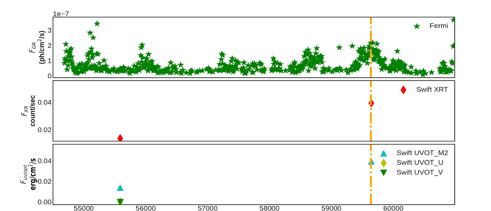
图注：覆盖18年（MJD 54749—61170）的光变。自上而下为按周分箱的Fermi-LAT 100 MeV—300 GeV伽马光变、Swift-XRT光子计数模式的计数率、Swift-UVOT UVM2/U/V波段光变。竖虚线标示IceCube-220225A事件时刻MJD 59635。
怎么看这张图：先看活动在长历史中的位置，再看中微子时刻。时间重合本身没有包含全天源数与多时间窗试验，不能据此宣布关联。
来源与置信度：arXiv HTML；source verified；https://arxiv.org/html/2609.24633v1/LC_PKS0215+015_fixed_1.png
图2：与IceCube事件同时期耀发的宽带SED
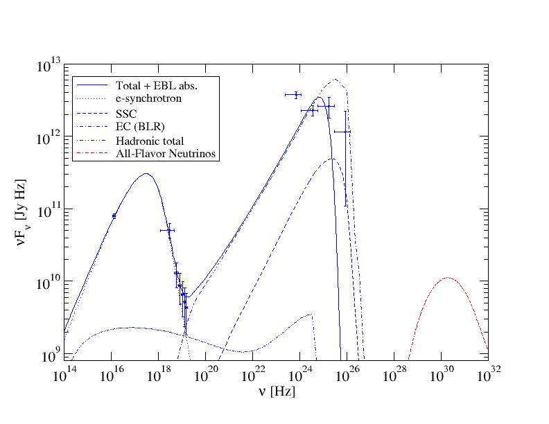
图注：光学/紫外、X射线和伽马数据与最佳轻子分量（同步及同步自康普顿）、强子分量（质子同步及光强子级联）一同展示，使用Böttcher等2013年的框架。粉色点线为最佳强子模型对应的全味光强子中微子谱能量分布。
怎么看这张图：谱能拟合相容不等于能合理产生一次探测事件。需将粉线折叠有效面积与时窗；文中耀发10天预期约1.3×10⁻⁴个事件，仍远小于1。
来源与置信度：arXiv HTML；source verified；https://arxiv.org/html/2609.24633v1/PKS0215neutrinos.jpg
强相关工作
TXS 0506+056的中微子与耀发研究推动了耀变体多信使搜索，但其关联证据不能自动转移到其他误差区内的活跃耀变体。本文结合已有PKS 0215+015射电爆发和VLBI新结报告，将它作为进一步随访候选，真正的新问题是其单区强子预算是否足够。
Böttcher等的轻强子框架及Kelner–Aharonian相互作用模板提供同步、光介子和级联计算基础；Murase等讨论外光场如何提升FSRQ中微子效率。本文展示同一类机制也受到光子与功率约束，时变宽线区或多区模型只能作为待算方案，不能据此免除这些约束。
同一事件 / 同类源线索：
相似工作：
（未提供）
基础理论 / 方法工作：
（未提供）
相反观点 / 张力线索：
（未提供）
8. IceCube Upgrade status and perspectives
- 来源：arXiv / astro-ph.HE
- 链接：https://arxiv.org/abs/2609.24387
- 作者：Anna Eimer
- 评分：novelty 7/10，importance 8/10，relevance 9/10，final 9.05/10
- 推荐理由：IceCube升级新光传感器与冰标定可改善历史高能事件重建，仪器直接相关。
中文题目：IceCube Upgrade已部署五根新串：更低能阈值之外，冰层标定如何改善十五年历史数据
做了什么：这是一篇探测器建设与调试进展报告。作者介绍2025/26南极夏季完成部署的IceCube Upgrade：在DeepCore内部新增5根串、505个模块，平均串间距约20米、垂直模块间距约3米。主要光学模块包括24个小光电倍增管组成的mDOM，以及上下各一个8英寸光电倍增管的D-Egg，同时部署定向/各向同性光源、相机和声学装置，测量冰的散射、吸收、各向异性及钻孔再冻结形成的局部冰结构。
更密的光阴极分布有望把有效研究范围推进到数GeV，并改善振荡与低能瞬变研究；更准确的光传播模型则可重新用于原有十五年以上数据，提高高能事件的方向重建。论文写作时仍在调试和标定，预期2026年秋季接入科学运行。文中“五年达到正常排序下3σ质量排序灵敏度”的引用来自原7串设计研究，不能直接当作此次5串实际配置已经验证的性能。
为什么重要：升级价值不只取决于增加多少传感器。IceCube的方向推断依赖光子在复杂冰层中的传播；若冰模型存在偏差，增加事件数不能把这种系统偏差平均掉。新标定装置能够以已知光源测量介质和模块响应，有机会改善整个旧阵列的分析。它把一次局部硬件扩建与长期档案数据价值连接起来，但实际改善幅度仍需以完成标定后的重建基准为准。
理论 / 观测 / 仪器方法价值：对探测器方法研究，可借鉴的是用互补装置分离退化：已知近各向同性光源约束绝对响应，定向多波长光束测量角向传播差异，相机直接观察孔冰与气泡柱，声学装置独立验证几何测量能力。单靠一个标定灯的亮度变化难区分光源、探测效率和介质效应，多种几何与波长的交叉约束才有望建立可移用于科学事件的响应模型。
为什么应该关注：天体中微子关联研究对方向误差非常敏感，重新标定旧数据可能改变源搜索权重和定位精度，而不只是增加未来曝光。对LACT等切伦科夫仪器，启发在于同样要区分介质传播、光学接收与电子学响应，建立独立标定链；冰中的具体传播参数当然不能移到大气中。近期应关注5串实际几何下的效率、角分辨率与系统误差验证，以及历史事件重建版本变化是否可追踪。
展开详细解读：文章讲解、背景、理论、重点章节、图表与相关工作
文章详细讲解
科学问题。 原有IceCube通过稀疏的大体积布阵获得高能接受度，但低能事件发光少，重建受到采样密度限制；同时冰层光学性质和钻孔周围局部结构影响光子的时间、方向和数量。升级要解决的是这两类不同瓶颈：一类靠增加近距离采样，一类靠更精确的响应标定。
作者怎么做。 五根新串全部位于DeepCore内，采用更紧密的布局和多种传感器。mDOM利用多小PMT获取多个方向的光，D-Egg提供上下视向；其他模块用于测试未来Gen2设计和替代集光方案。POCAM、可转向Pencil Beam、固定和可转向相机、LOMlogger及声学模块分别测量光源响应、各向异性、孔冰形成、深度依赖和声传播。
关键结果。 已完成部署并进入调试的模块总数为505，五根串运行状态良好；相机已记录再冻结过程中冰晶和气泡柱形成，LOMlogger给出的深度散射信息与前代仪器相当。这里是建设和标定活动进展，不是最终科学性能发布。更低阈值、振荡灵敏度与历史数据重建改善属于正在验证或引用先前研究的预期。
局限和下一步。 实际五串少于原灵敏度研究采用的七串。作者只称初步估计影响可能有限，没有在本短文给出五串完整的新灵敏度曲线。下一步是完成几何、时间、冰层及模块响应标定，正式接入数据采集，再以真实配置的模拟和控制样本验证性能。本篇没有参数拟合表和发现结果，以下理论公式用于解释仪器原理，明确不当成作者报告的新测量。
关键结果是怎么做出来的
第一步看空间尺度。原阵列多数串间隔125米，模块垂直相隔17米；DeepCore已经缩小到约72米和7米，Upgrade再缩到约20米和3米。低能次级粒子的可见路径短、总发光少，更密采样使同一事件更可能同时照亮多个模块，提高触发与几何重建可识别性，而不是把每个中微子转化成更多本征光子。
第二步看模块角覆盖。原Gen1 DOM为单个朝下的10英寸PMT；mDOM为24个3英寸PMT，多向覆盖；D-Egg为一上、一下两个8英寸PMT。多PMT还提供分段方向和符合信息，但实际灵敏度要结合玻璃透过率、量子效率和噪声，不能只把直径平方相加就声称提高了某倍科学灵敏度。
第三步区分深冰和孔冰。深冰的光学参数随深度、层结构和方向变化；钻孔再冻结又可生成高散射气泡柱，改变紧邻模块的角响应。相机观察的是局部形成过程，多波长定向光束则测量传播差异，两者不能相互替代。标定模型如果把孔冰影响错误吸收进全冰散射参数，会对不同事件几何产生不一致偏差。
第四步理解标定为何能回溯。历史数据保存的是模块电荷与时间信息，并不固化某一版冰模型。若新装置更准确地估计旧模块响应与共同冰介质，就可以用更新的似然或重建器重新解释原始记录。改善并非保证所有事件都会同样大幅变好，必须检查深度覆盖、波长外推与新旧硬件差异。
第五步读预期科学性能。更低能阈值有利于研究穿过地球后的大气中微子振荡、GeV瞬变和低质量暗物质；高能天体物理主要受益于标定而非几根密集串显著扩大总体积。五年3σ排序预测必须附带正常质量排序和原七串设计条件。本文没有给出已经达到的新角分辨率数值，因此日报也不补造提高百分比。
展开背景、理论、公式、模型和章节导读
背景知识
中微子本身不带电，不直接发出切伦科夫光。它与冰或基岩中的核子相互作用后产生带电次级粒子，后者在介质内运动快于该介质光速时辐射。仪器重建的不是中微子轨迹的照片，而是利用大量稀疏光子命中的时间、位置和电荷反推相互作用几何。
不同事件拓扑提供不同信息。长缪子径迹通常方向较好，级联事件发光更局部，能量与顶点可以较集中约束。低至数GeV时事件尺寸缩小，各类信号在稀疏阵列中更难区分；增加采样密度有助于识别振荡造成的能量—天顶角结构，但这也要求背景抑制和响应建模同步改进。
冰不是均匀透明固体。吸收减少光子数，散射改变路径和到达时间，层状尘埃与晶体结构带来深度和方向依赖。散射较少的早到光通常对方向信息尤其重要，晚到光则对总亮度和介质模型有补充价值。错误模型可能把散射拖尾解释成事件几何变化。
标定是一种逆问题：从已知或可控制的光源出发，反求传播和接收参数。若光源强度、模块效率和吸收长度同时未知，单一几何的测量往往无法区分它们。升级部署不同光源、相机与声学器件的意义，是增加独立约束方向，使最终科学参数误差更可信，而不只是收集更多标定数据。
基础理论 / 方法脉络
切伦科夫角由粒子速度和折射率决定，给已知直线径迹提供几何约束。实际光子从发射点到模块还经历折射率随波长变化、散射和吸收，所以重建需把发光过程与传播过程分开。相机看到的气泡结构并不直接等于重建所需的角响应函数，需要通过光源试验建立映射。
吸收长度刻画光子生存概率，而有效散射长度还取决于单次散射是否强烈前向。两种介质即使总散射次数相同，若散射角不同，到达时间分布也可不同。因此仅测总接收光量不足以恢复所有冰参数；定向束和时间结构能增加约束。
探测效率把到达模块的光子转换成光电子。它随波长、入射角和模块设计变化，多个小PMT的方向覆盖会改变信号与噪声的分布。绝对光源、已知距离和多个接收角的组合可以区分效率与几何影响，但每种硬件都要有自己的响应模型。
振荡测量最终关心的不是探测器间距本身，而是能量与方向分辨率、有效体积、味识别和背景在二维分布上的综合效果。排序信息来自不同传播路径上的物质效应，必须用三味振荡与地球密度模型计算。下面的两味公式只作理解$L/E$尺度的教学入口，不能复现本文引用的排序灵敏度。
公式与推导
先写产生信号的门槛与角度：
$\beta=v/c$，$n$为冰的折射率，$\lambda$为波长。粒子无需超过真空光速，只需超过介质中的相速度。方向重建正是利用这一发射锥几何。
标准Frank–Tamm关系给单位径迹和波长的光子数：
$\alpha$为精细结构常数，$z$为电荷数。较短波长本征发光更多，但实际探测光谱还受玻璃、量子效率和冰吸收限制，不能只积分$1/\lambda^2$比较模块优劣。
无散射直达光的吸收近似为
其中$d$为路径长度，$L_a$为吸收长度。真实散射会增加总路径，因此同一几何距离的光子具有不同生存率，这也是只看距离不能预测时间分布的原因。
前向散射介质常用有效散射长度描述方向随机化：
$L_s$为单次散射平均自由程，$\vartheta$为散射角。若散射高度前向，分母小，方向信息在多次散射后仍可保留。式子是标准解释框架；本文没有报告最终的五串标定拟合值。
某模块期望光电子数可概念性写成
$G_i$含几何和冰传播，$\epsilon_i$含接收角和转换效率。标定要分别约束这些项，否则较低效率和较强吸收容易互相补偿。已知亮度的POCAM与不同角度的Pencil Beam正提供互补输入。
对于事件或标定拟合，最简单计数项为
实际还需乘以光子到时概率、电子学响应和噪声模型。几何或时钟偏差可能被误判成光传播延迟，因此几何、时间和光学标定必须协同，而不是只调一个总光量因子。
最后，用真空两味近似说明低能与长基线的关系：
相位随$L/E$变化，因此降低能阈值并改善能量和天顶角重建有科学意义。但质量排序涉及三味混合和地球物质效应，不能从这一式直接推出3σ预测。以上公式全部是帮助理解报告的教学补充，不是本篇建设短文新增的公式或测量。
模型拟合 / 应用方法
本篇没有开展最终振荡拟合，也没有给出全部标定参数的后验。因此应用方法应围绕真实调试流程理解：首先确定模块位置、方向和时间同步，再比较已知发光装置在不同深度、距离和方位的到时与电荷分布。若直接同时自由拟合所有冰和效率参数，容易出现不可识别退化。
其次用相机信息约束孔冰几何和气泡柱形成，而不是只靠科学事件反推局部结构。局部响应与大尺度冰传播的分离需要不同发光/接收组合；同一套参数应预测未用于拟合的标定几何，才具有外推到未知天体事件的说服力。这里描述的是合理验收路径，本文尚未报告其全部完成结果。
再次，对多PMT、D-Egg和原DOM分别建立波长与角响应模型，再将共同冰参数联系起来。较多光阴极会同时改变信号、暗噪声和符合概率，低能效率必须用完整事件模拟评估。声学装置所测试的声速和衰减则服务于未来更大串间距的几何标定可行性，不能直接替代光学性能测量。
最后，在五串真实几何下重算科学灵敏度，并用控制样本检查能量尺度、方向偏差和系统误差覆盖。历史数据重处理要保留重建版本，区分事件数增加与同一事件重建变化。七串设计的质量排序预测只能作为预期背景；本报告没有提供把它精确折算为五串的公式，因此不能按根数比例缩放显著性。
重点章节 / 结果段落怎么读
- 第1节与2.1、图1。 对比原阵列、DeepCore和Upgrade的间距，明确低能能力来自密度变化，而不是整个立方公里都换上新模块。
- 2.2与图2。 区分主要部署的mDOM、D-Egg和少量原型模块；看PMT方向与分段信息，不只数模块总量。
- 2.3与图3。 给每个标定器件配一个待约束参数：亮度效率、角向传播、孔冰结构或声学几何，理解互补性。
- 2.4和结论。 将已经部署、正在标定、预期性能分开；尤其保留五串实装与七串预测的条件差异。
关键图表与解读
图1：IceCube Upgrade布局
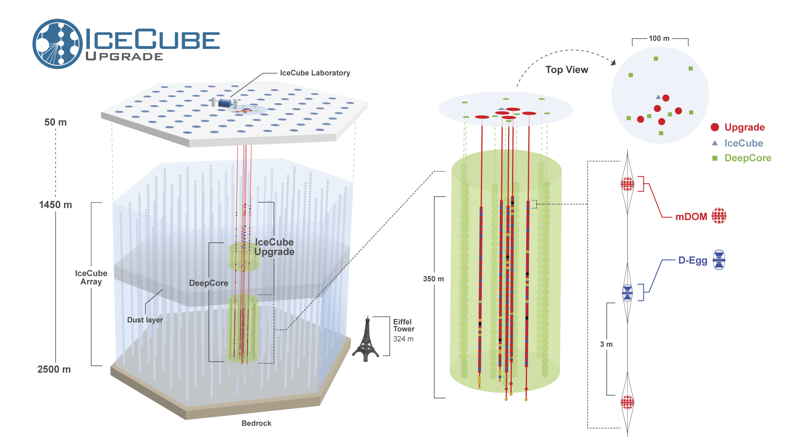
图注：左为IceCube整体布局，绿色区域为DeepCore，红色串为Upgrade新串位置。右为DeepCore放大图，显示Upgrade布阵以及该区域俯视图。
怎么看这张图：新增五串集中在低能核心，并非将整个立方公里都加密；大尺度高能研究主要还会受益于更精确的冰层标定。
来源与置信度：arXiv HTML；source verified；https://arxiv.org/html/2609.24387v1/plots_and_images/IceCube_Upgrade_Diagram_031826_five_UG_strings_transparent.png
图2：升级部署的光传感模块
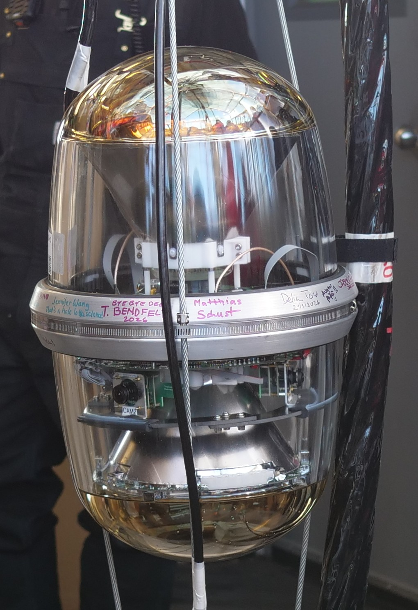
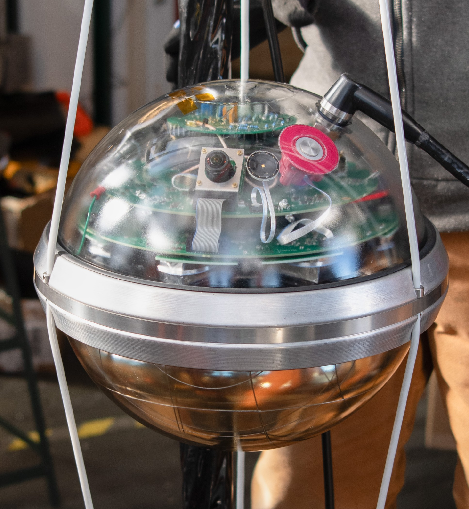
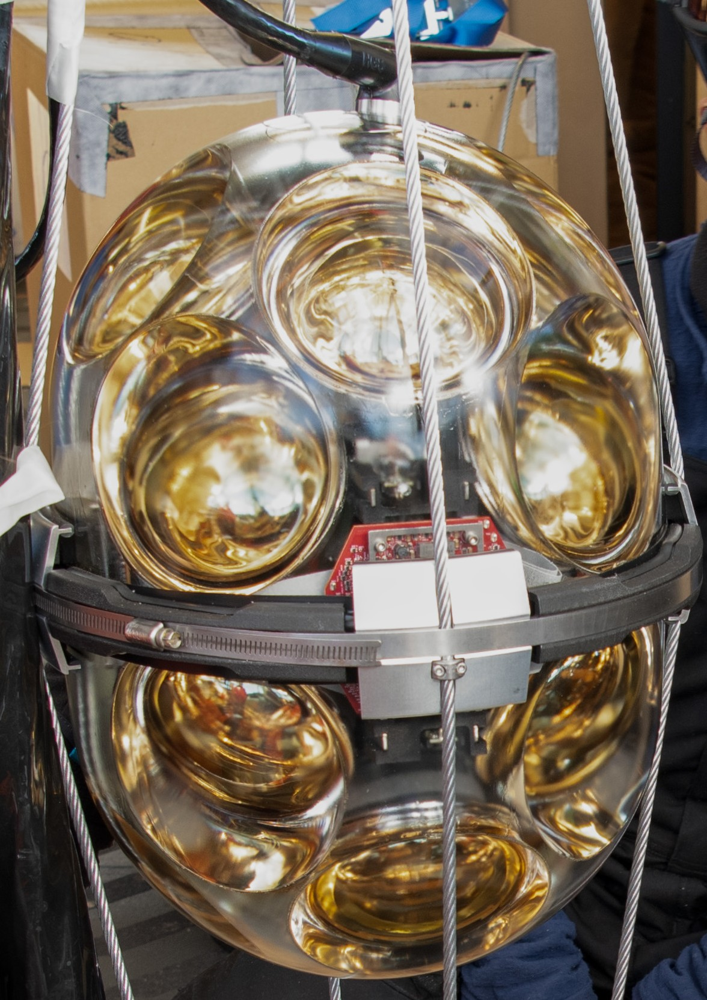
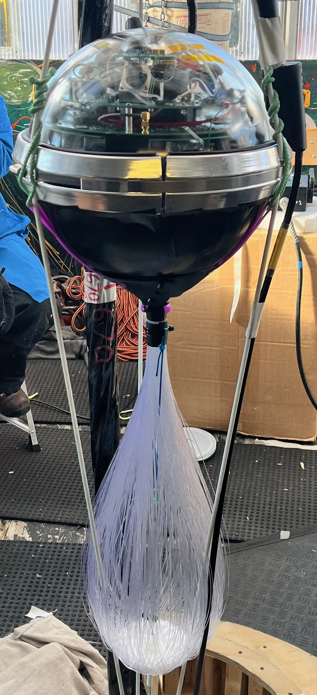
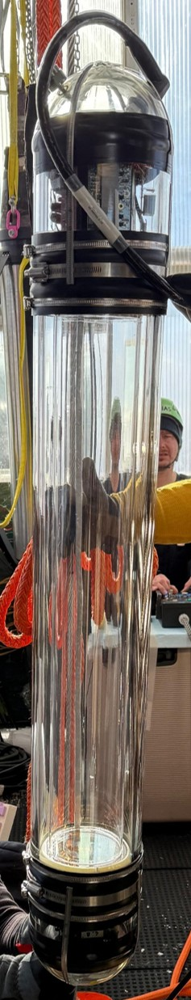
图注：IceCube Upgrade中集成的光传感模块。a为mDOM，b为D-Egg，是主要传感器；c—f为数量较少的原型器件。
怎么看这张图：观察多方向PMT与上下视向的区别，设备照片用于辨认设计，不是量子效率或最终角分辨率对比。六个面板保留原顺序，共用本图说明。
来源与置信度：arXiv HTML；source verified；https://arxiv.org/html/2609.24387v1/plots_and_images/2025week51_string87_07_ymakino.jpg；https://arxiv.org/html/2609.24387v1/plots_and_images/signed_DEgg_Colton_Hill.JPG；https://arxiv.org/html/2609.24387v1/plots_and_images/2025week51_pDOM_08_ymakino.jpg；https://arxiv.org/html/2609.24387v1/plots_and_images/2026week02_lom16_10_coltonhill.jpg；https://arxiv.org/html/2609.24387v1/plots_and_images/FOM_Colton_Hill.jpeg；https://arxiv.org/html/2609.24387v1/plots_and_images/WOM_Andreas_Noell_cut_to_size.jpg
强相关工作
原文回顾IceCube原阵列与DeepCore的设计，并引用mDOM、D-Egg、WOM等独立器件研究。当前文章把这些设计放到实际部署与调试背景下，新增价值在工程状态和标定组合，不是重新给出每种模块的完整实验性能。需要详细量子效率、噪声和耐压测试时，应继续查阅文中对应器件论文。
高能方面，作者指出此前银河平面中微子分析已经受益于冰模型和方向重建改进，说明标定可以改变历史数据的科学回报。同日报HAWC与IceCube银心联合分析仍使用原86串时期的12年径迹数据，不能说它已经采用Upgrade新增观测；两篇联系在于未来模型和重建改进有望作用于旧数据，而不是此次已经兑现了某个灵敏度倍数。
同一事件 / 同类源线索：
相似工作：
（未提供）
基础理论 / 方法工作：
（未提供）
相反观点 / 张力线索：
（未提供）
9. A dynamic magneto-ionic environment around a long-period radio transient
- 来源：arXiv / astro-ph.HE
- 链接：https://arxiv.org/abs/2609.23259
- 作者：Botao Li, Yongjie Jin, Shike Qu, Chaohua Gao, Wei Wang, Pei Wang, Shumei Jia, Jifeng Liu
- 评分：novelty 8/10，importance 8/10，relevance 8/10，final 9.00/10
- 推荐理由：421秒长周期射电源极快速RM变化给局部磁化环境提供新约束。
中文题目：421秒长周期射电暂现源的法拉第旋转剧变：FAST揭示近源磁化等离子体，但尚未证实双星
做了什么：作者在四次FAST全Stokes观测中追踪CHIME J0630+25。这个约421秒重复的弱射电源色散量只有约22 pc cm⁻³，旋转量却从先前CHIME的约−348变到FAST测得的约−487至−1629 rad m⁻²；相邻周期改变约50，在约2500秒内又改变约536 rad m⁻²。作者用RM合成寻找法拉第深度峰，并对高信噪脉冲直接拟合Q/U频谱，说明主要现象不是单纯偏振角绕转造成的假象。
这些变化远超过普通星际前景的预期，支持源附近存在致密、强磁化且快速变化的传播环境。双星伴星物质是一种解释，但还没有轨道周期或伴星探测。毫秒尺度的一次Q/U斜纹伴随圆偏振反号，作者反而倾向本征偏振角和模式转换，不能把它也一概解释为外部RM剧变。同步HXMT未检出X射线，亮度上限依赖不确定的距离。
为什么重要：长周期射电暂现源究竟是异常中子星、白矮星还是双星驱动系统仍不清楚。周期本身不能唯一判定本质，而RM测量给出独立的环境诊断：低DM下出现大且快速变化的RM，要求磁场、电子柱或视线几何具有特殊结构。这篇的价值是把“它重复得很慢”推进到“它周围存在怎样的等离子体”，并把可靠的周期间RM变化与脉内模式效应区分。
理论 / 观测 / 仪器方法价值：方法上可复用全Stokes标定、RM合成和直接Q/U拟合的交叉检查，以及把射电偏振与X射线上限联系起来的证据链。物理上RM约束的是电子密度加权视向磁场，DM约束电子柱；两者联合比单一大RM更有辨识力。但本文固定DM而未精密追踪其变化，不能直接用ΔRM/ΔDM给出局部磁场，也不能把弱线偏振时期的RM缺测解释成环境恢复平静。
为什么应该关注：对高能暂现源研究，这提供了一个近邻、可高时间分辨观测的极端磁化环境实验室。值得跟进的不是立刻把它列为已确认双星或高能粒子源，而是检验RM是否重复随轨道相位变化、去偏振是否与爆发结构相关，以及更深X射线观测能否区分孤立磁星和吸积模型。未来联合观测应保留未检出时段和偏振选择效应，避免只挑最亮脉冲建立环境故事。
展开详细解读：文章讲解、背景、理论、重点章节、图表与相关工作
文章详细讲解
问题与观测。 CHIME J0630+25的约421秒重复尺度远长于普通射电脉冲星。先前DM给出的170 pc距离估计误差很大，已有RM异常。作者在2025年8月至2026年3月进行四次FAST跟踪，采用19波束接收机中央波束，以98.304微秒和4096频率通道记录全偏振，四个历元都检出脉冲。
分析路径。 先用噪声二极管校准双线偏振通道的强度、泄漏和相位，再剔除射频干扰，以固定DM=22消色散并搜索单脉冲。对可靠线偏振脉冲，将Q+iU按候选RM反旋后相干叠加；高信噪事件再拟合Q、U随波长平方的正弦变化。两套方法相符比只拟合偏振角更能避免整数π歧义。
核心证据。 2025年8月相邻两个周期的RM分别约−1386.9和−1337.4，2026年2月同一观测中则从−1092.4到−1628.9，3月恢复到−487.1。变化幅度显著大于各次约数至十rad m⁻²测量误差，而且发生在分钟到小时尺度。普通星际前景很难同时解释其幅度和速度。
解释边界。 可靠结论是局部磁化环境，双星只是候选机制。一次毫秒结构若强行解释为RM漂移会要求约3300 rad m⁻² s⁻¹，但圆偏振同时反号更支持本征模式转换。HXMT上限不支持明亮持续吸积X射线双星，却不能排除暗弱双星、中子星磁层或其他紧致等离子体屏。
关键结果是怎么做出来的
先把幅度与DM放在同一尺度：若整条视线平均磁场只有1微高斯，DM=22只对应约18 rad m⁻²；实测绝对值超过1600，相差近两数量级。前景地图也只预期几十，因而不能用一个普通银河前景偏差轻易消除异常。
第二，直接比较相邻测量而非把数月变化平均。相邻约421秒周期差49.5，对应约0.12 rad m⁻² s⁻¹；另一次536/2500约0.21。年化速率可以用于量级比较，但不能理解为这种斜率会持续一年。两个快变化事件才是局部环境推断的关键。
第三，偏振并非总是可测。脉冲峰值多为十几至几十mJy，线偏振通常较弱，圆偏振却可达约20%—70%。论文只对足够线偏振信噪的脉冲测RM，因此图中的空档不是RM恒定，也不是没有射电活动；图1用不同符号专门区分这两类事件。
第四，将慢变化与毫秒变化分开。跨脉冲Q/U频谱振荡支持真实法拉第变化；但单个脉冲内部Q/U斜纹可以由偏振角本征旋转产生，配合V反号更像正交偏振模式转换。作者明确偏向后一种解释，没有把所有时间结构归给同一外部屏。
第五，HXMT在2—10、10—30、30—100 keV的3σ流量上限分别约3.3、6.0、6.7×10⁻¹² erg cm⁻² s⁻¹。在170 pc下对应总亮度约5×10³¹ erg s⁻¹，但距离上误差达310 pc，亮度随距离平方改变。另有两组脉冲出现0.274秒准周期，只是次要线索，不能当成已确定的自转周期。
展开背景、理论、公式、模型和章节导读
背景知识
色散来自不同频率射电波在等离子体中的群速度不同，DM主要积累视线上的自由电子数。它可帮助估距，但近源额外电子会破坏简单银河电子密度模型的距离映射，所以本源的170 pc不是精确几何距离。
法拉第旋转则需要磁化等离子体，偏振角随波长平方变化，符号反映加权视向磁场方向。大RM可以来自大电子柱、强磁场或较长路径；低DM同时大RM更倾向强磁化区域，但仍不能独立确定其密度和尺度。
全Stokes观测同时测总强度I、线偏振Q/U和圆偏振V。Q/U依赖选定坐标基，V的符号依赖约定；仪器泄漏和通道相位若未校准，会把强总强度混入偏振，因而噪声源标定在此直接关系物理结论。
双星中的伴星风或盘可使视线周期性穿越磁化物质，蜘蛛脉冲星和Be星系统已有类似现象。孤立紧致星附近的动态磁层也能产生传播变化。要区分二者，需要长期相位相干的周期性或伴星证据，而不是仅凭RM变化很快。
基础理论 / 方法脉络
冷等离子体近似下，DM和RM是两种不同积分。相反磁场方向可在RM中抵消，DM却总是正贡献；RM/DM因此是电子加权有符号平均，不是局部最大磁场。只把全部DM分配给近源屏，得到的也只是带假设的平均估计。
线偏振向量在Q/U平面旋转的角度是天空偏振角的两倍。RM合成利用这一复数相位关系对各频率通道反旋，不必先把角度展开；但有限带宽决定分辨率，缺失频道会引起旁瓣，作者在必要时用RM-clean处理。
同一视线的时间变化可以来自屏自身演化，也可以来自源、屏或观测者相对运动。用变化时间乘速度估计横向尺度时，速度必须另有依据；本文没有直接测屏速度，因此不能由2500秒唯一推出天文单位或磁层尺度。
脉内偏振模式叠加可以模拟表观RM变化。尤其在频率结构复杂、线偏振较弱时，偏振角突跳与外部法拉第旋转不易区分。V同时反号增加了模式解释的可信度，但并不否定跨周期、通过完整频谱测得的RM变化。
公式与推导
先定义两个观测积分，以下常用单位形式用于解释测量：
$n_e$用cm⁻³、$l$用pc、$B_\parallel$用微高斯，RM用rad m⁻²。第二式的磁场符号允许抵消，解释为何DM相近的源可有不同RM。
若两种积分来自同一区域，则
把−1629与22代入，得到约−91微高斯的整条视线加权值。它不是已测局部磁场；若局部DM仅占一小部分，屏中的场可以更强，磁场反转又会改变解释。
偏振角和复线偏振满足
因偏振方向相差π等价，指数有因子2。RM合成用复向量相加回避直接角度拟合的整数π歧义。
其离散形式可写成
$w_j$是频道权重，$\phi$是试探法拉第深度。峰值给RM估计；频率采样窗造成的响应和旁瓣必须检查，不能把所有次峰视作第二个屏。
作者的独立核查直接拟合
$A,B$吸收本征偏振幅度与相位。由于脉冲频谱复杂，作者没有先用总线偏振归一化，仅检验法拉第诱导的振荡一致性。
若斜纹完全由时间变RM产生，对恒定相位求导得
这给该毫秒事件约3300的有效漂移率，但前提可能不成立；模式转换同样可产生斜纹，因此它不是又一个已确认外部RM测量。
最后将X射线流量转成亮度：
这是各向同性假设下的上限换算，明确展示距离不确定性如何传递，不能用标称亮度排除所有弱吸积情形。
模型拟合 / 应用方法
数据先由噪声二极管确定两个线偏振通道温度标尺，扣除邻近无脉冲基线，再用FAST天顶角相关增益转成流量。偏振另需泄漏、相位和频率归一化校正；这几类标定误差作用不同，不能仅靠总强度标定代替。
干扰处理结合自动频谱基线拟合和人工检查；PRESTO单脉冲搜索配合DBSCAN聚类。作者固定DM而不进行精细优化，因此未发现明显DM变化不等于给出严格ΔDM上限。脉冲结构和弱信号正是限制进一步磁场反演的原因。
RM误差由法拉第谱峰宽和峰信噪估计，高信噪脉冲再做Q/U一致性检验。不同脉冲使用有效频率与时间窗口，复杂事件的偏振角只在选定窗中计算。比较历元前必须确保窗口、去偏振和信噪选择未被误作物理演化。
双星解释目前不是一个已经拟合成功的轨道模型，没有周期、偏心率和伴星质量后验。下一步应联合RM、DM、流量与偏振做高覆盖时间序列，同时保留未检出。HXMT采用标准筛选和背景模型给3σ上限，未发现X射线活动不应写成确认无吸积。
重点章节 / 结果段落怎么读
- 正文RM时间序列与图2。 核对每个数值的日期和相邻周期关系，区分测量误差与跨历元跨度。
- 图3和局部环境讨论。 看低DM与大RM的组合；不同种类源的变化速率并非同一测量定义。
- Methods 2、5。 理解偏振标定、RM合成与Q/U复核，不把全部线偏振缺测当成物理消失。
- Methods 5.3、6、7。 分别读模式转换、仅两次准周期和HXMT上限，避免把次要线索升级成定论。
关键图表与解读
图2：旋转量时间演化与测量示例
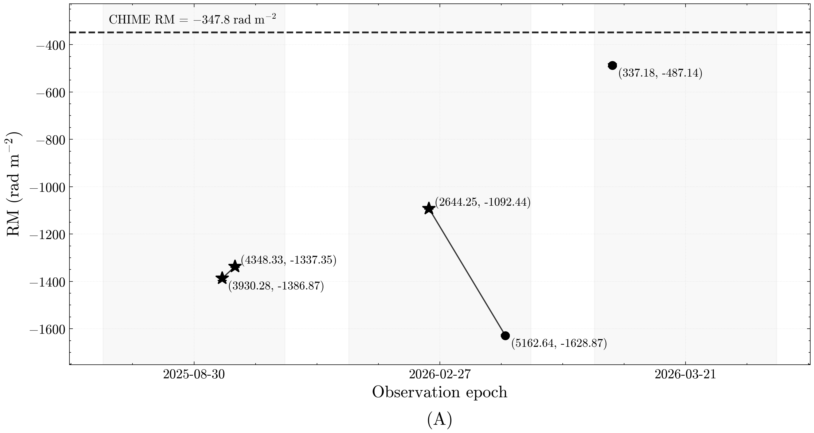
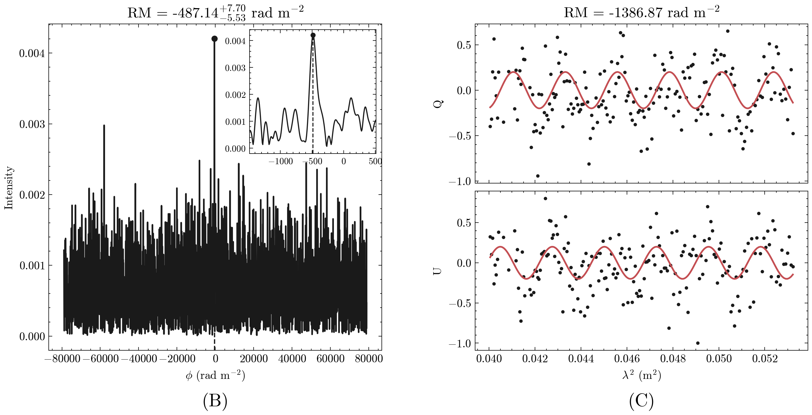
图注：A：FAST测得的RM及每次脉冲到时，并列此前CHIME结果；星号可直接拟合频率相关Q/U谱，圆点仅有RM合成。B：2026年3月21日脉冲的RM合成，得到−487.14 rad m⁻²。C：2025年8月30日约3930秒亮脉冲的代表Q/U谱，使用RM合成结果拟合。
怎么看这张图：先比较同一观测中相隔约2500秒的两点，再看数月跨度。星号与圆点的验证强度不同，空档不表示RM平稳。
来源与置信度：arXiv HTML；source verified；https://arxiv.org/html/2609.23259v1/fig/rm_evolution.png；https://arxiv.org/html/2609.23259v1/fig/RM_synthesis_QUfitting_BC.png
图3：与其他射电源的RM比较
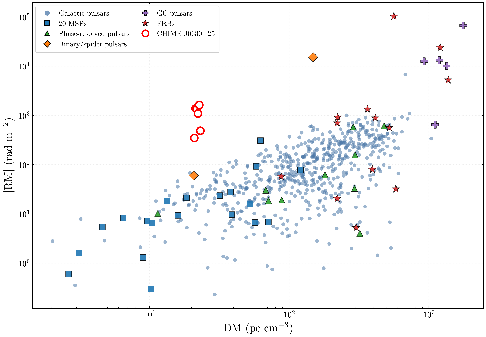
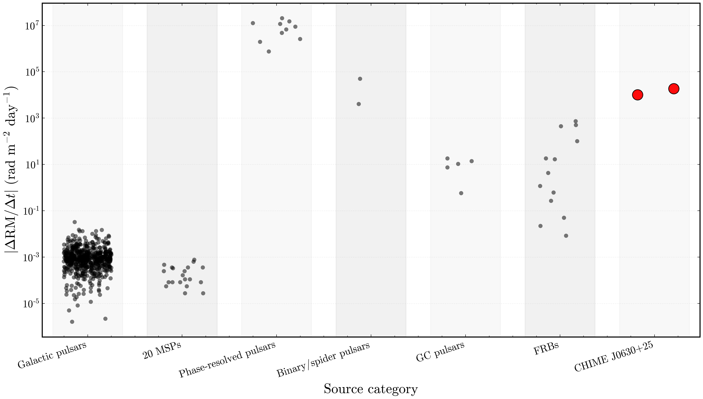
图注：A：绝对RM对DM。蓝点为银河射电脉冲星，其他彩色符号包括20颗毫秒脉冲星、相位分辨RM变化脉冲星、双星/蜘蛛系统、银河中心脉冲星和重复FRB；红空心圆为CHIME J0630+25全部测量。对有多个RM值的对照源，取最大绝对值作代表。该源DM约22 pc cm⁻³而绝对RM达1600 rad m⁻²，组合异常，要求近源磁化屏。B：同批文献样本各类源报道的最大RM变化率；相位分辨脉冲星用脉内峰峰差除自转周期，只供对照。两红点为约2500秒内改变536，以及相邻周期改变约50 rad m⁻²。
怎么看这张图：右图包含不同定义和采样尺度，不能把每个点都当同一种外部屏演化速率。双星相似性支持候选解释，但没有测出本源轨道。
来源与置信度：arXiv HTML；source verified；https://arxiv.org/html/2609.23259v1/fig/dmrm.png；https://arxiv.org/html/2609.23259v1/fig/rmrate.png
强相关工作
作者比较普通脉冲星、银河中心磁星、重复FRB与蜘蛛/Be双星。普通脉冲星通常RM稳定，极端磁星和FRB也可变化，但采样尺度不同。本篇新增的是在长周期暂现源中直接记录相邻周期与小时尺度的大变化，而非首次发现任何天体存在大RM。
发现论文曾用类似glitch的计时解释支持强磁中子星；本研究增加环境信息，并不独立复现那个表面磁场估计。后续只有发现轨道或伴星、或建立重复可检验的磁层模型，才可能把“局部磁化屏”进一步变成明确天体分类。
同一事件 / 同类源线索：
相似工作：
（未提供）
基础理论 / 方法工作：
（未提供）
相反观点 / 张力线索：
（未提供）
10. Observational Evidence of an Internal Shock Collision in the Relativistic Jet of the Nearby Radio Galaxy 3C 111
- 来源：arXiv / astro-ph.HE
- 链接：https://arxiv.org/abs/2609.23410
- 作者：Kenzo Kawamura, Motoki Kino, Mareki Honma, Kazuhiro Hada, Paul Tiede, Evgeniya Kravchenko, Marcello Giroletti, Rocco Lico
- 评分：novelty 8/10，importance 8/10，relevance 8/10，final 9.00/10
- 推荐理由：多频64历元VLBI支持喷流内部碰撞，且谨慎区分GeV耀发位置。
中文题目：直接跟踪3C 111喷流内激波：后发快结追上慢结，但射电增亮不必伴随伽马耀发
做了什么：作者结合2020—2023年10历元22 GHz EATING VLBI、29历元15 GHz MOJAVE和25历元43 GHz VLBA数据，共64历元成像，追踪3C 111喷流的结构、运动与流量。后发K2结以约4.09c的视超光速追上约0.83c的K4结，在2022年出现逐渐接触、合并和增亮，位置约为投影2—3 pc、去投影约10 pc。运动结构加上先升后降的射电光变，比仅凭一次耀发更直接支持内激波。
档案偏振图显示K2附近相互作用区线偏振比例从约0.9%升至6.6%，但当时相邻结未充分分辨，不能把该数值当成K2独立偏振。更早的2021年GeV耀发与核区活动同时，晚一年的下游内激波没有显著GeV增亮。这支持近核驻立激波与下游移动内激波共存，并提示高能辐射还取决于碰撞位置的种子光子场。
为什么重要：内激波广泛用于解释相对论喷流变光，但很多证据来自空间未分辨的光变，难区分移动扰动撞驻立结构和两个移动结互相追赶。这篇把两者的轨迹、增亮及偏振放到同一时间轴，提供可检验的几何证据。它也提醒：确有耗散与粒子加速，并不保证在GeV波段出现耀发；辐射环境与能量供应同样重要。
理论 / 观测 / 仪器方法价值：方法价值是将多频核位移校正、贝叶斯可见度成像、Gaussian分量追踪和固定孔径偏振测量连起来。作者把可见度经验误差底与最终每历元流量标尺误差区分，避免把同一“10%”误认为一种物理误差。对喷流模型，数据直接约束快慢结的速度差及碰撞位置，而碰撞后缺少明显减速又对最简单的非弹性两团块模型提出额外要求。
为什么应该关注：对于高能源和多信使关联，最值得借鉴的是按空间位置解释光变时序：2021年近核事件和2022年约10 pc处的射电内激波不能混成一次高能爆发。后续可用更密VLBI和多频偏振检验磁场压缩、分量融合与持续供能，并与同步高能上限联合建模。仅从射电亮度上升推出强逆康普顿或中微子活动都缺少必要的环境约束。
展开详细解读：文章讲解、背景、理论、重点章节、图表与相关工作
文章详细讲解
观测问题。 内激波预言后发高速物质追上先发慢物质，耗散相对运动能。要区别于驻立激波，必须看到两个结构本来都在移动，随后接近、增亮并继续向下游传播。3C 111近、喷流较直，适合多历元VLBI进行这种追踪。
作者做法。 先在可见度域联合估计Stokes I图像与台站增益，再对校正后数据拟合多个Gaussian分量。Hough变换寻找时间—距离图上的直线并优化不同频率核位移，使15、22、43 GHz轨迹能够相接。偏振独立使用已经标定的MOJAVE CLEAN图，没有对低信噪交叉手数据宣称完成新的偏振成像。
结果链条。 K2在2022年4月左右开始与K4相互作用，约7月逐步融合，之后在下游明显增亮再衰减。K2速度远大于K4，且亮结构并非固定在某一点。偏振增强与压缩或磁场有序化相容，但峰值孔径混合了邻近结构；最可靠证据仍是轨迹、形态和光变的共同演化。
模型边界。 碰撞后K2仍保持约4.3的洛伦兹因子，简单非弹性碰撞常预期减速，可能需要磁能、热能或持续供能。没有法拉第旋转校正的EVPA不能直接给激波几何。2021年GeV活动更接近核区事件，下游无高能增亮与低外部光子密度相容，但不是所有辐射模型的唯一证明。
关键结果是怎么做出来的
先读运动学。K1至K4的视速度分别约3.50、4.09、4.44、0.83c，假设视角16.3±2.3度后得到洛伦兹因子约3.64、4.28、4.74、1.57。视超光速来自光行时效应，不是物质真的超过光速；绝对内禀速度也依赖采用的视角。
第二读距离。三个频率核的位置受不透明度影响，拟合离黑洞约118、215、303微角秒，分别对应43、22、15 GHz。核位移幂律指数约1.12±1.31，误差很大；不能把它当成精确测出标准锥形喷流。投影2—3 pc经小视角换算才得到约10 pc。
第三看亮度不是只看相交。K2最显著地先增亮再衰减，K4在分量尚能区分时已开始变亮，符合逐步压缩而非只在最终图像融合瞬间突然发生物理碰撞。K1、K3即使几何上经过相似区域也没有同等增亮，提示密度或磁化程度差异仍重要。
第四看偏振。固定0.25 mas孔径的线偏振比例约0.9%升至6.6%，采用完整孔径而非只选高偏振像素，有助减少选择偏差。但恢复波束混合使K2与K3等不独立，不能把每个孔径的峰值排列为单个结的精确物理属性；EVPA还受未校正RM与相对论像差影响。
第五按时间分开高能事件。K2反向外推发射时刻约2021.30±0.02年，与4月26日GeV耀发一致；核流量同时增亮，驻立结构稍后响应。2022年内激波则没有明显LAT增亮，距BLR很远可使外部逆康普顿变弱。正文对2022年亮度峰有年中/晚些时候的措辞差异，日报采用图8光变与约半年过程，不赋予一个过精确峰日。
最后检验能量守恒故事。作者举K2/K4质量比10的简化例子，预计洛伦兹因子由4.3降至约3.8，观测却未见相应明显减速。质量比是例示假设，不是测量；这说明“识别内激波”和“完成动力学能量闭合”是两层不同结论。
展开背景、理论、公式、模型和章节导读
背景知识
活动星系核喷流中的亮结可以是等离子体团块，也可以是图样或激波，观测运动不必等于所有粒子的流速。空间分辨与时间跟踪能够约束图样速度，但仍需模型才能把它转成质量、磁化和能量流。
驻立激波可在喷流与外界压力平衡的位置形成，物质流过而亮结构大致不动。内激波由速度不均引起，在流中传播。真实喷流完全可能同时拥有二者，不能为解释一个新事件就否定已有近核驻立结构。
VLBI测到的是天空亮度的傅里叶采样，增益误差和稀疏覆盖会与小尺度结构退化。贝叶斯先验有助稳定成像，却不能凭空增加独立信息；因此作者同时检查可见度残差、图像伪影和多频连续轨迹。
同步辐射取决于电子和磁场，逆康普顿还需要种子光子。距吸积盘与BLR更远时外部光子能量密度下降，即使磁场压缩使射电明显增强，高能响应也可能弱。无伽马耀发因而可以是环境信息，但也受LAT灵敏度与时间分箱限制。
基础理论 / 方法脉络
追赶的必要条件是后发结构速度更高。实际看到的轨迹还含光行时和投影，不能直接将两条视速度之差代入牛顿碰撞能。把观察角固定后才能反演内禀速度，角度不确定性需要传播到洛伦兹因子。
射电核通常是光学深度接近一的区域，频率越低核心可能越下游。跨频轨迹若不对齐，会制造速度差或假相交。作者通过轨迹整体连续性估计核移，仍有模型依赖，尤其幂律外推到黑洞的位置不是直接照片。
激波可压缩磁场、增加高能电子，从而产生非单调亮度和较高偏振。但观测偏振也是波束内多个磁场方向叠加的结果。未分辨区域中的偏振上升支持有序化，并不能唯一推导激波法线。
更高能电子通常冷却更快，因而43 GHz较早衰减与同步冷却相容。不过频率也改变光学深度和采样，不能仅凭三条光变就唯一拟合磁场。以下给标准关系帮助理解，作者没有完成全套时变辐射传输拟合。
公式与推导
视速度与真实速度的标准关系为
分母中的光行时修正可使$\beta_{\rm app}>1$。代入K2的4.09和16.3度可得$\beta\simeq0.972$，仍低于光速。
再计算
这是文中一阶独立误差传播。视角来自外部研究，而非此次轨迹自行测出；接近极端几何时线性传播可能不足。
去投影关系为
$D_A$为角径距离，$\Delta\vartheta$为角分离。约2—3 pc投影尺度因此对应约7—11 pc，不应把“10 pc”误读成直接天球平面长度。
核位置采用
三个频率的共同轨迹约束相对偏移，再按此关系外推。$\kappa$的大误差提示绝对黑洞位置不如多频轨迹一致性稳健。
作者为每条可见度引入经验误差底：
22、15、43 GHz分别用0.10、0.02、0.10，调整的是似然权重，没有往原始数据加随机噪声。最终光变另合成每历元10%流量标尺误差。
偏振测量采用去Rice偏差表达式：
先对全孔径Stokes量平均再求$m$，与只平均高偏振像素不同。$\chi$未经法拉第修正，不能直接当本征磁场方向。
教学上，同步辐射频率与冷却时间满足
在相近$B'$和多普勒因子$\delta$下，高频对应更高能电子和更短冷却时间，解释高频较早衰减的方向性，但没有唯一给出本文磁场数值。
在同一电子群、汤姆孙近似下，可用
理解种子光子不足时射电亮而伽马弱。实际还需光子各向异性、KN效应和多普勒变换；该式是解释而非作者已拟合的定量SED结论。
模型拟合 / 应用方法
成像阶段以未分辨核加灵活GMRF先验表示喷流，联合求台站增益，缺失系统温度的台站给更宽先验。绝对流量尺度用可靠增益台站锚定。经验误差底由残差和伪影人工选择，不能当作完全独立、已知的仪器概率分布。
随后Gaussian分量拟合使用先前增益解；作者没有同时用过于僵硬的少分量模型求增益，以避免复杂结构被错误吸收到仪器参数。分量跨历元身份仍依赖结构连续性，复杂近核区尤其不确定，不能把每个拟合点都当成独立可见实体。
Hough变换在归一化时间—距离空间投票寻找轨迹，并选令可识别直线数最多的核位移。20微角秒核移误差来自径向分箱半宽，不是完整系统后验。图7误差棒画的是Gaussian结构宽度，也不是质心位置1σ，读图时必须分开。
偏振用Gaussian模型与CLEAN图互相关配准，完整固定孔径测量，Monte Carlo传播图噪声、分量位置和配准误差。对融合历元插值位置并显式承认波束混合；没有RM校正或详细激波几何拟合，因此只将线偏振增强作为辅助证据。
重点章节 / 结果段落怎么读
- III.2—III.4。 分清Stokes I重建、可见度误差底和独立档案偏振处理。
- III.6、表2及图7。 看核移如何使多频轨迹连接，记住宽度棒不是定位误差。
- IV.3、图8。 判断是否有持续压缩与非单调增亮，而非只凭几何相交。
- IV.4、图10。 核查6.6%属于混合区域，不能由未校正EVPA反演几何。
- V.1—V.4。 将减速难题、驻立/移动结构和两次不同时期高能行为连起来读。
关键图表与解读
图7：喷流结的位置轨迹
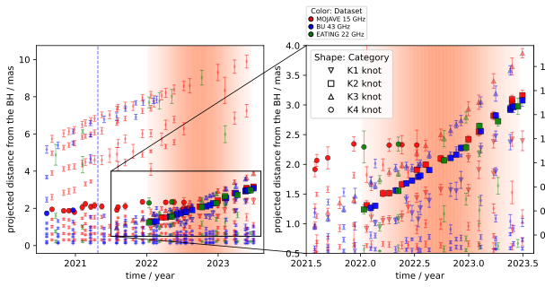
图注：横轴时间，纵轴分量到黑洞的距离。形状标K1—K4，颜色区分MOJAVE、EATING与BU，误差棒为分量尺寸（Gaussian宽度）。淡红带是图8中MOJAVE峰的Gaussian半高宽，蓝竖点线为伽马耀发。左为完整时间范围，右放大左图黑框；左右纵轴分别为投影角距离mas和以10⁶Rg为单位的去投影距离，Rg为黑洞引力半径。
怎么看这张图：宽度棒不是位置1σ误差。先看快K2与慢K4的轨迹接近，再结合图8非单调增亮判断相互作用，不能只从线相交得出碰撞显著性。
来源与置信度：arXiv HTML；source verified；https://arxiv.org/html/2609.23410v1/model_vs_time.svg
图8：不同结的多频光变
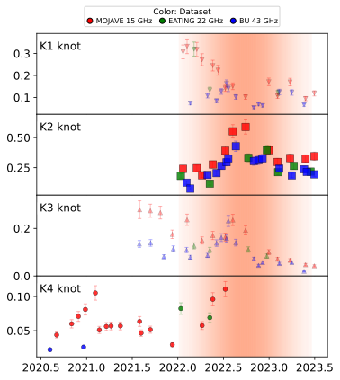
图注：横轴时间、纵轴峰值流量密度，四面板及符号形状分别代表K1—K4。颜色为MOJAVE 15 GHz、EATING 22 GHz与BU 43 GHz。淡红带是K2的15 GHz峰经Gaussian拟合后的半高宽。误差棒合并MCMC随机不确定度与独立每历元10%流量标尺误差；后者不同于可见度似然中的数据集经验误差底。
怎么看这张图：K2增亮最突出，K4在尚能分辨时已响应，支持逐步压缩。2021年高能耀发早于这一过程，不能合并成同步多波段证据。
来源与置信度：arXiv HTML；source verified；https://arxiv.org/html/2609.23410v1/light_curve.svg
强相关工作
原文把近核驻立激波研究与此前千秒差距尺度内激波案例相联系。新贡献是秒差距尺度多频时序直接呈现快结追上慢结，而不是首创内激波理论，也不是否认所有耀发都可能与驻立激波有关。
同日报关于临界吸积率的TDE论文讨论喷流何时启动，本篇讨论已发射喷流在哪里耗散；两者属于不同阶段。把启动率、内部速度不均、外部光场与观测波段逐项连接，才能构建可检验的完整高能喷流模型。
同一事件 / 同类源线索：
相似工作：
（未提供）
基础理论 / 方法工作：
（未提供）
相反观点 / 张力线索：
（未提供）
11. Gamma-Ray Echo as a Probe of Supernova Neutrino Emission Anisotropy and Long-Baseline Effects
- 来源：arXiv / astro-ph.HE
- 链接：https://arxiv.org/abs/2609.22806
- 作者：Garv Chauhan, Cecilia Lunardini, Yago Porto
- 评分：novelty 8/10，importance 8/10，relevance 8/10，final 9.00/10
- 推荐理由：511keV回声与地球反中微子形成近远探针，提供未来MeV仪器具体需求。
中文题目：把超新星包层当“近端探测器”：511 keV伽马回声如何检验中微子各向异性和传播损失
做了什么：这是一项未来探测方案研究。核心坍缩超新星的电子反中微子穿过富氢包层时可触发逆β衰变，产生的正电子热化后湮灭，形成延迟数分钟至更久的511 keV伽马回声。回声接收朝向地球的半球贡献，而地面Hyper-K只测一个视线方向的中微子，因此两者计数和时间形状的比较可以探测大尺度发射各向异性。
以264 pc外、类似参宿七的近邻爆发为基准，511 keV有效面积10⁴ cm²预期约158个回声光子，配合5%包层归一化误差，可在约68%置信水平测试15%量级偶极各向异性。另在各向同性、三质量态相同寿命质量比且仅不可见衰变的简化条件下，可检验约13%的中微子计数损失。它不是现有约束，也不是普遍适用于任意银河超新星的能力。
为什么重要：单一地面探测器只看到超新星的一个方向，弱信号既可能因为源本来暗，也可能因为传播中有损失。伽马回声在中微子离开恒星前留下同一种IBD反应的记录，能够提供独立的近源归一化，并对不同角度发射进行平均。这把电磁信号与中微子直接连接起来，区别于通常只从晚期光学爆炸间接推断核心过程。
理论 / 观测 / 仪器方法价值：理论价值是显式计算偶极、四极角分布与不同到时的几何映射，展示总计数与时间形状各自保留哪些信息。仪器价值是把目标各向异性、有效面积和恒星包层组成误差放到同一灵敏度曲线。关键限制同样具体：10⁴ cm²必须是511 keV处的有效面积，且需要极近邻爆发；随面积增大，包层模型系统误差会成为上限。
为什么应该关注：对多信使仪器设计，本文提出的不只是“更大面积更好”，而是两端共享反应权重可以消去哪些源模型不确定性、又剩下哪些不能消除。值得考虑511 keV覆盖、快速触发、足够长的回声观测以及爆发前后恒星成分约束。它属于MeV领域，不能直接把LACT的TeV接受面积代入；也不能把异常计数比立即判为新物理，因为源各向异性存在退化。
展开详细解读：文章讲解、背景、理论、重点章节、图表与相关工作
文章详细讲解
信号形成。 电子反中微子与包层自由质子反应生成中子和正电子，后者热化湮灭。只有近表面能逃出的511 keV光子形成可观测回声；不同表面角度的路径长度不同，把短暂中微子爆发展开成由恒星半径控制的光变。
比较方法。 作者保留模拟中微子时间谱，在角度上乘固定偶极或四极分布，积分朝向观测者的半球，计算伽马时间序列。Hyper-K的IBD事件率取同一发射场的地球方向。先以地面信号在各向同性假设下预测回声，再与真实各向异性回声比较，而不是用一个固定理论超新星总能量当唯一标尺。
预测结果。 偶极在半球平均后只保留视向投影的一半，总回声计数和地面计数响应不同；四极半球积分抵消，总回声不变，但地面方向仍偏离平均且回声时间形状变化。近邻基准下，几百个回声光子有机会检验几十个百分点的效应，主要瓶颈是光子统计和包层组成。
边界。 本文没有真实爆发数据。各向异性参数固定，不含同时偶极加四极、明显进动或完整时间演化；地球物质效应也留待扩展。衰变部分只作示范，不是三味完整谱拟合，最终若见偏差还需联合回声形状、引力波或其他观测区分源几何与传播效应。
关键结果是怎么做出来的
第一看距离与半径。表1在10⁴ cm²和3度角分辨率下，参宿七、飞马座ε和参宿四的各向同性回声总数约158、104、224。不是最近源一定最多：所采用不同前身质量的中微子模型也影响总产额。半径越小，几何时间展宽越短、瞬时峰值越高，但不能据峰高单独推总能量。
第二看投影。真正测到的是偶极幅度乘轴向余弦，或四极幅度乘二阶Legendre多项式。偶极轴在天球平面时失去一阶灵敏度；四极在约54.7度的“魔角”也抵消。没有外部方向约束，不能声称把三维各向异性幅度唯一测出来。
第三看显著性。15%偶极、面积约10⁴ cm²的指标只是约68%水平，90%需要负偶极约3×10⁴、正偶极超过4×10⁴ cm²，且取特定方向与归一化误差。将它写成“可发现15%各向异性”会掩盖置信度条件；四极20%的对应需求也依赖观测方向。
第四看包层误差。参宿七较热，光谱可约束氦丰度，作者采用5%转换归一化误差并对比10%。参宿四较冷，没有同样直接的氦线测量条件，不能把参宿七系统误差移用到所有源。论文主要估计银河511 keV弥散背景，完整仪器本底、活时间和极高事件率响应仍需任务级验证。
第五看衰变基准。158个光子的统计误差约8%，与5%系统误差合并约9.4%，90%准则下对应约13%地面计数损失。用15 MeV代表能量得到寿命质量比约1.3×10⁴ s/eV的潜在下界；即使无限光子，5%误差仍使同一基准趋近约2.3×10⁴。它数值上弱于文中引用的特定SN1987A分析，但源归一化路径不同。
展开背景、理论、公式、模型和章节导读
背景知识
核心坍缩的大部分能量由中微子带走，光学冲击突破则通常晚到。包层IBD回声可以比主光学信号更早，把核心中微子活动转成电磁记录，但产额很小，要求近邻爆发和较大MeV有效面积。
地面水切伦科夫探测器的IBD靶也是自由质子，因此回声与地面计数都对电子反中微子谱乘相同反应截面。正是这个共同权重，使足够长时间积分后的比值有机会消掉总光度与距离，而非所有电磁—中微子组合都具备此性质。
超新星中对流、LESA、SASI、旋转及不对称吸积可能产生角向变化。一个方向更亮并不能由单台中微子探测器判定是整体更亮还是各向异性；半球回声为此提供不同角权重。固定偶极与四极是可计算基准，不是完整爆炸模拟。
所谓近—远探测器是物理类比：近端实际是恒星包层中的天然反应，远端是地面仪器。包层的组成、光子逃逸和几何都不是人工可控，所以它虽减少源光度依赖，却仍需恒星模型和光谱约束。
基础理论 / 方法脉络
回声时延来自不同表面点到地球的路径差，近视线点先到、边缘较晚。因此时间分箱等价于在一定程度上扫描可见半球的角度，发射各向异性会改变平台斜率，而不仅改变总数。
偶极正负区域在完整球面抵消，但在朝向地球的半球一般不完全抵消。四极在这里的理想权重下半球积分也为零，故总数不变。这个结论依赖采用的几何与逃逸近似，不能任意移到强非球形包层。
共同IBD权重的消去要求处理地面能量效率。原文简化比值时省略了效率项，应用时应校正能量响应或在两端保持一致积分；有限阈值和能谱重建误差不能凭一句“比值模型无关”忽略。
不可见衰变会随传播距离和逆能量增加损失，近源回声基本未受长基线衰变影响。它可使回声相对地面计数偏高，但合适的源方向分布也会造成类似偏差，必须利用时间形状和其他信息打破退化。
公式与推导
信号链为
热化后光子接近511 keV；作者有效每正电子产额取$\eta_\gamma\simeq1.74$，并非所有生成的两个光子都作为窄线贡献被接收。
令$\mu=\cos\theta$，延迟为
可见半球使几何展宽到约$R_\star/c$，再与真实中微子发射持续时间卷积。
将IBD加权数光度定义为$q(\Omega,t)=\int dE\,\sigma_{\rm IBD}(E)\,dL_\nu/dE$，回声可简写为
$Y_p,Y_e$分别是每重子的自由质子、电子数，$\sigma_c$为511 keV康普顿截面。这揭示包层组成进入绝对归一化的位置。
偶极半球平均给出
因此两个计数响应不同，只有沿视向的组合$a$可被识别。
四极记$b=\epsilon_QP_2(\cos\theta_0)$，利用$\int_0^1P_2(\mu)d\mu=0$可得
总数对四极不敏感并不等于时间光变对四极不敏感，二者不能混同。
在完整积分、效率已校正的简化条件下，
距离和共同谱积分消去，留下仪器面积、靶数与包层转换；这也是“源光度依赖减弱”的准确含义。
作者用分箱Poisson偏差并剖面化归一化：
$n_i$为假定真实模型的期望计数，是预测数据集，不是已观测的整数事件。
共同不可见衰变寿命假设下，
右侧用代表能量近似完整能谱，仅用于量级展示。
将两类误差合并，
第二式是未见偏差时的预期90%量级界限，随面积增大最终受$\sigma_{\rm sys}$限制。
模型拟合 / 应用方法
作者采用Garching一维SFHo中微子时变谱，为飞马座ε选9太阳质量模型，为参宿七与参宿四选20太阳质量模型。质量匹配是代表性设置，不是这些恒星未来爆炸的精确模拟；假定正常排序的标准MSW转换，地球穿越效应未计入。
在该时变谱上乘固定角模式，计算带延迟的半球积分，使用511 keV面积换成计数。星际银河背景采用二维盘分布和3度角分辨率。工程实施仍需加入仪器本底、能量窗口、指向覆盖与死时间，尤其地面约10⁸级事件预测不能自动视为无损实际采样。
灵敏度比较的是“真各向异性模型”与“由对应地面测量误按各向同性推回的回声”，两边都受各向异性影响。只改回声而固定地面模板会得到错误偏差。包层归一化通过5%或10%Gaussian先验作干扰参数，时间分箱提供额外形状信息。
衰变计算另外假定各向同性、三质量态同寿命质量比和完全不可见末态，并用代表能量简化总数比较。没有同时拟合任意各向异性、能量依赖衰变和包层自由度。若用于真实发现，需先做联合模型比较，而不是把一次非零比值偏差直接宣布为中微子衰变。
重点章节 / 结果段落怎么读
- II.1和图1。 先理解视向与发射轴不同，以及回声只积分朝地球半球。
- 式7、9和图3。 区分偶极总数变化、四极总数抵消与时间形状变化。
- IV、图5—7。 核对地面归一化也会被各向异性改变，面积指标必须带置信度和系统误差。
- V。 读清寿命共同、不可见末态和代表能量假设，不把预测界限写成已有实测。
- 结论扩展。 时间依赖、混合多极和地球效应均未解决，是后续而非本文完成结果。
关键图表与解读
图5：回声真实计数与地面反推预测
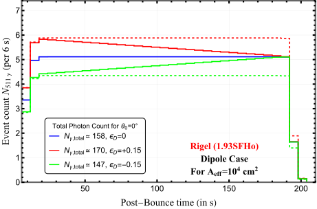
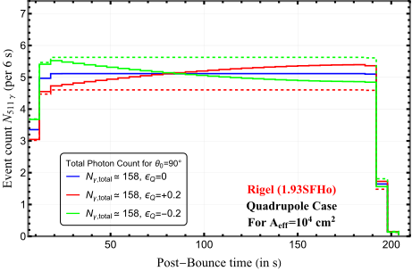
图注：以参宿七为前身星、511 keV有效面积10⁴ cm²、固定发射轴视角θ0，给出反弹后各时间箱的预期伽马光子数。左、右分别改变偶极εD和四极εQ。实线为真实各向异性回声计数，点线为由对应Hyper-K测量推断的各向同性预期。
怎么看这张图：不是只比较彩线与蓝线：地面测量本身也受各向异性影响，因此真正检验量是实线与其相应点线之差。这些均为预测数据，并非检出事件。
来源与置信度：arXiv HTML；source verified；https://arxiv.org/html/2609.22806v1/EventGREHistogram_DiffAniso_Dipole_1p93SFHo_Rigel_0p15_v2.svg；https://arxiv.org/html/2609.22806v1/EventGREHistogram_DiffAniso_Quadrupole_1p93SFHo_Rigel_0p2_v2.svg
图7：有效面积与投影各向异性灵敏度
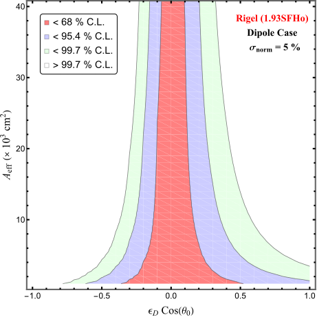
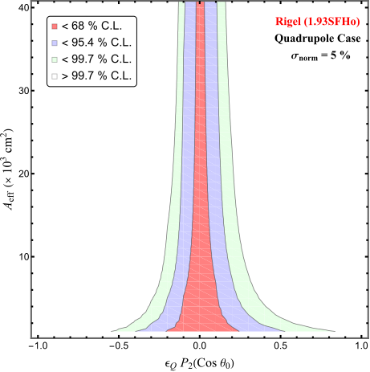
图注：参宿七基准、归一化误差5%下，Δχ²等值线随511 keV探测器有效面积及有效各向异性变化。左为εD cosθ0，右为εQ P2(cosθ0)，三组等值线对应1、2、3σ水平。
怎么看这张图：可测的是幅度乘方向因子，不能由纵坐标直接给三维不对称。大面积仍受恒星包层误差限制；10⁴ cm²的15%例子约在68%水平，不是高显著发现能力。
来源与置信度：arXiv HTML；source verified；https://arxiv.org/html/2609.22806v1/FullChiSquared_Dipole_1p93SFHo_Rigel_Systematics_5pct_v1.svg；https://arxiv.org/html/2609.22806v1/FullChiSquared_Quadrupole_1p93SFHo_Rigel_Systematics_5pct_v1.svg
强相关工作
511 keV超新星回声机制在早期文献已有提出，近年来重新研究探测前景。本篇新增固定偶极/四极的时间—角度计算，以及与地面IBD计数构成近—远比较。它没有首次发现这种电磁产生机制，也没有报告观测检出。
与仅用SN1987A中微子谱约束衰变的研究相比，此法用天然包层给近源归一化，减少对绝对源光度的依赖。代价是极近邻爆发机会、MeV面积和恒星组成要求；数值界限较弱但系统依赖不同，可以成为独立交叉验证。
同一事件 / 同类源线索：
相似工作：
（未提供）
基础理论 / 方法工作：
（未提供）
相反观点 / 张力线索：
（未提供）
12. Ruling out nucleonic direct Urca cooling in low-mass neutron stars using nuclear data
- 来源：arXiv / astro-ph.HE
- 链接：https://arxiv.org/abs/2609.24940
- 作者：Gabriele Montefusco, Pietro Klausner, Marco Antonelli, Caterina Ciampi, Diego Gruyer, Francesca Gulminelli
- 评分：novelty 8/10，importance 8/10，relevance 8/10，final 9.00/10
- 推荐理由：核实验联合天文限制显著压低低质量中子星直接Urca概率，连接微观与热演化。
中文题目：核实验压低轻中子星的直接Urca开启概率：0.26%是模型后验，不是排除所有快速冷却
做了什么：作者将INDRA-FAZIA重离子同位旋输运、有限原子核结构、手征有效场论和中子星质量半径/潮汐约束结合，在有高密度自由度且渐近因果的核子物质元模型中推断状态方程与组成。对每条状态方程求稳定恒星序列，并检查核心任意位置是否满足电子直接Urca的费米动量条件。加入实验信息后，1.4太阳质量及以下开启该反应的后验概率从17.5%降到0.26%。
主要原因不是直接Urca所需质子比例突然升高，而是低质量星核心高质子比例的后验尾部被压低。最终1.4太阳质量星中心质子比例中值约0.072，开启阈值仍集中在约0.137。结果依赖纯核子组成、同位旋能量近似和核输运模型；它不排除超子、相变等其他快冷却机制，也没有直接拟合观测冷却曲线。
为什么重要：中子星冷却常被用来推断核心成分，但快速降温是否一定要求新物质，取决于普通核子直接Urca是否已经开放。本文用实验与天体观测联合约束质子比例，给低质量星中的这一“常规快通道”建立更严格基线。若未来可靠确定某颗轻星确有快冷却，将更有力地挑战该核子模型，但仍需同时处理配对、包层和年龄等热演化因素。
理论 / 观测 / 仪器方法价值：方法价值是保留低阶核物质参数的完整相关结构，并将重离子实验的密度依赖信息直接沿每条对称能曲线计算权重，避免只取单个饱和密度参数或把各密度点当独立实验。高密度额外自由度降低函数形式强加的外推关联；重新预测150个球形原子核的结合能，则检查联合约束是否仍与原核实验相容。
为什么应该关注：对中子星高能辐射和冷却研究，值得保留的量是质量相关的组成分布与开启概率，而不是一句“Urca被排除”。尤其0.26%是特定先验、模型和数据下的概率，不能转成独立频率学派显著性。后续若使用本文公开Gaussian近似，应区分IF单独过滤器和已经包含多源核信息的FN后验，避免重复计入手征或核结构约束。
展开详细解读：文章讲解、背景、理论、重点章节、图表与相关工作
文章详细讲解
物理问题。 直接Urca允许中子直接β衰变及逆反应高效放出中微子，但简并物质中的费米面动量必须闭合。质子和电子比例太低时通道受运动学禁止，只能走需要旁观核子的较慢修正Urca。决定是否开放的关键因此是状态方程给出的β平衡组成。
统计构建。 作者用同一元模型连接核实验和恒星计算。重离子数据主要约束饱和密度附近的对称能，有限核观测提供相关的低阶参数，手征理论提供低密度物质信息；高密度通过额外参数保持灵活。再用高质量脉冲星、GW170817和多个NICER质量半径后验共同加权。
结果。 从仅手征加天体数据，到加入IF，再到完整核数据，低质量开启概率依次为17.5%、1.2%、0.26%。低质量半径区间和质子比例也收窄，高质量星改善较小。这与实验主要敏感于较低密度一致，而非实验直接测到了两太阳质量星核心。
限制。 原文标题较强，正文结论应限定在采用的核子元模型与同位旋依赖内。IF依赖既定输运分析，未同时遍历全部输运系统误差；有限核后验带有Skyrme相关结构，虽测试去掉其Ksym约束影响小，仍非完全无模型结果。超子及强相变可以改变冷却通道和高密度外推。
关键结果是怎么做出来的
第一看信息如何相容。IF和核结构对称能幅度—斜率的68%区域重叠，但探测密度不同；联合后在实验低敏感密度处略偏离IF中心不等于明显张力。作者重新计算核观测，150个球形核结合能及其他响应总体保持相容，是联合推断的重要一致性检验。
第二看半径。完整核信息把1.0、1.4、2.0太阳质量星半径68%区间宽度分别压缩约40%、29%、13%。1.4太阳质量星最终半径约12.10公里，68%区间−0.39/+0.28公里。改善随质量降低而增强，反映核实验对饱和附近组成和压力更有约束。
第三看组成。1.4太阳质量星中心质子比例中值由0.088降至0.072，同时高比例尾巴显著收缩；两太阳质量星的比例分布依然宽。仅比较中值不足以理解17.5%到0.26%的变化，真正控制稀少开启模型的是分布尾部是否跨阈值。
第四看阈值。允许开启模型的阈值密度仍约0.50 fm⁻³，质子比例约0.137。没有缪子的最简教材值1/9不能直接替代这个npeμ物质结果。核数据主要减少轻星达到阈值的机会，阈值本身只轻微变化。
第五看完整归一化。最终3.3%的后验状态方程在整个稳定分支都不开直接Urca，作者赋予最小开启质量无穷大并保留权重。因此累计分布高质量平台小于1是有物理含义的，不是忘了归一化。阈值密度和质子比例分布则只对能够开启的模型作条件化，不能与完整集合直接混读。
最后看冷却解释。运动学允许不等于已经预测某星表面温度：超流配对可抑制发射，包层组成影响内部与表面温度对应，年龄和质量也有误差。本文不含这些完整热演化拟合；若未来轻星确有快冷却，它提供的是检验纯核子基线的条件，而非当下证明存在奇异物质。
展开背景、理论、公式、模型和章节导读
背景知识
中子星不是纯中子球。电荷中性和β平衡要求一定质子、电子以及高密度下的缪子，比例由强相互作用能量与轻子费米能竞争决定。对称能刻画中子与质子不均衡的能量代价，因此与质子比例密切相关。
重离子碰撞短暂产生不同密度物质，同位旋输运观察中子富集系统如何交换同位旋。实验不能直接给整条冷中子星状态方程，必须借输运模型估计敏感密度和参数，这一步的系统误差会传到天体结论。
核结合能、半径、极化率与集体模分别约束能量泛函的不同方向。它们通常给相关参数组合，而非每个参数独立Gaussian误差。丢掉协方差可能在外推时制造过窄或偏移的组成分布。
高质量中子星和引力波约束整体压力支撑，实验多约束较低密度。灵活元模型允许两种区域之间存在更多自由度，降低特定函数形式的人为关联，却无法彻底消除从实验密度到核心密度的模型外推。
基础理论 / 方法脉络
简并物质中参与反应的粒子集中在费米面附近，低温时中微子动量相对核子费米动量较小。直接Urca需要中子费米动量不大于质子和电子费米动量之和，形成一个动量三角形。
只有电子时电荷中性给质子与电子数相同，阈值是熟悉的1/9。加入缪子后，同一质子电荷由两类轻子分担，电子费米动量较低，电子通道阈值升高。本文数值约0.137来自具体β平衡组成。
对称能越大，一般越不鼓励强中子不对称，可能提高质子比例；但真实预测还取决于密度依赖、动力学项和化学势平衡。因此不能从单独一个斜率参数的升降直接推出所有质量处的冷却概率。
恒星结构由状态方程通过TOV方程决定，给每个质量的内部密度剖面。作者检查整个核心而非只检查中心，这在组成或对称能非单调时尤其必要。开启质量是一个条件触发量，与最大支撑质量是不同观测。
公式与推导
用教学性的常见展开说明对称能：
本文非动力学部分采用抛物近似；额外高阶同位旋自由度可改变高度不对称物质的组成，因此这一桥梁本身是结论条件。
在简化抛物形式中，β平衡及电荷中性可写为
缪子未出现时去掉对应项。这个教学式展示核对称能如何控制轻子费米能，实际元模型需用完整能量泛函计算化学势。
各粒子的费米动量为
共同密度因子消去，得到原文直接采用的组分条件$x_n^{1/3}\leq x_p^{1/3}+x_e^{1/3}$。
若无缪子，$x_e=x_p$，则
有缪子时定义$y_e=x_e/x_p$，阈值变为
$y_e<1$使阈值高于1/9，解释为何本文约0.137并非教材公式算错。
恒星结构用
$\rho$为质量能量密度除以$c^2$，对每个中心密度积分到表面并选稳定分支，才能把局部组成门槛转成恒星质量门槛。
联合核推断在共同参数$\theta$上为
再乘同一个天体似然比较不同核输入集合。NSD保留六维低阶参数相关，不能拆成独立一维先验。
IF的关键实现是密度加权几何平均：
$W_j$含实验密度敏感度和数值积分间隔。这是作者转移实验信息的规定，不是把每个密度视为一个独立观测点后无限增加证据。
最终累计概率计算为
保留这些权重后，最终平台约0.967。0.0026是$F(1.4M_\odot)$，不是“所有轻星快速冷却的发生率”。
模型拟合 / 应用方法
核模型低阶参数直接连接有限核后验，高于二阶的额外自由度由渐近因果元模型提供。NSD中的Ksym继承Skyrme相关结构，作者测试去掉该项后主要结果基本不变；这一稳定性检查有帮助，但不等于已探索全部能量泛函。
IF约束沿每条S(n)曲线直接评价，并按输运给出的密度权重积分。它依赖已有BUU输运设置，未对状态方程与全部输运参数联合边缘化。附录的IF Gaussian近似只是方便外部复用，不是本文主结果实际使用的曲线似然。
将每条状态方程解TOV后，以同一套高质量脉冲星、GW170817和NICER数据加权，保证不同集合的变化可归因于核信息。再预测有限核观测检验兼容性，避免只因参数后验重叠就宣布不同模型数据组合必然可靠。
开启判据遍历稳定星核心，把无开启模型留在完整质量累计分布；阈值密度和比例则对开启子集归一化。应用者需保留这种条件化区别，也不能把已包含手征及NSD的FN后验再乘同样数据；真实冷却检验还应加入配对、包层和年龄的不确定性。
重点章节 / 结果段落怎么读
- 图1及联合核后验定义。 看各输入敏感密度及参数相关，不把实验带视为直接高密度测量。
- 图2和补充C。 读联合后是否仍能预测有限核观测，理解一致性检查。
- 图3、表1、补充图5/6。 将半径改善与质子比例尾部压缩联系起来。
- 图4及其定义段。 确认无穷大开启质量留在分母，区分累计概率和条件阈值。
- 局限段与补充B/D。 核对同位旋近似、输运依赖及Gaussian近似的正确复用方式。
关键图表与解读
图4：直接Urca最小开启质量累计概率
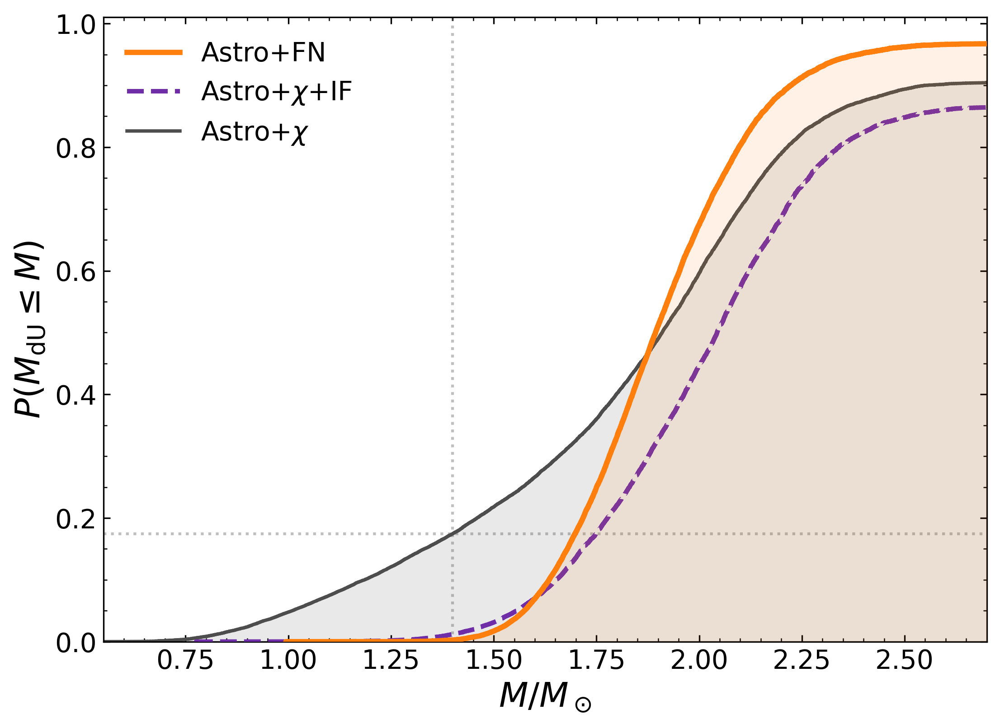
图注：核子直接Urca在运动学上允许的最小恒星质量的加权累计分布。灰、紫、橙分别为手征加天体、IF加手征加天体、完整核信息FN加天体后验。竖虚线为1.4太阳质量，横虚线为基线在该质量的17.5%。整个稳定分支都不开启的模型赋最小开启质量正无穷，因此有限质量处平台低于1，其缺额就是此类模型的后验权重。
怎么看这张图：读1.4太阳质量处17.5%到0.26%的变化，并保留平台缺额；不要把只对开启模型归一化的概率误当全文结果。这是模型后验，不是全部冷却机制的排除显著性。
来源与置信度：arXiv HTML；source verified；https://arxiv.org/html/2609.24940v1/figures/Mdurca_CDF_three_posteriors_band.png
补充图5：固定质量的中心质子比例
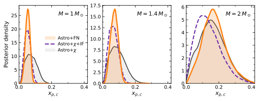
图注：非旋转中子星中心质子比例的后验密度，左、中、右分别为1.0、1.4、2.0太阳质量。灰、紫虚线、橙分布分别为天体加手征、天体加手征加IF、天体加FN。各分布独立归一化，每栏只含能支撑对应质量的状态方程。
怎么看这张图：低质量两栏高质子比例尾部明显收缩，解释开启概率下降；高质量栏仍宽。阈值本身约0.137的改变较小，不能把主效果归于阈值剧增。
来源与置信度：arXiv HTML；source verified；https://arxiv.org/html/2609.24940v1/xpc_fixed_mass_three_posteriors.svg
强相关工作
本文连接既有INDRA-FAZIA同位旋输运推断、有限核贝叶斯参数后验与渐近因果元模型。新增价值在统一关联传播、联合一致性核查及对直接Urca开启概率的量化，而非提出新的弱相互作用过程。
与用热演化数据直接拟合冷却曲线的工作相比，此研究从核实验和结构观测给运动学基线。二者未来可联合，但如果发现偏离，还需区分核子配对、包层系统误差、超子通道或相变，不能由一个冷却快的对象单独证明某种奇异核心。
同一事件 / 同类源线索：
相似工作：
（未提供）
基础理论 / 方法工作：
（未提供）
相反观点 / 张力线索：
（未提供）
13. Jet variability in small mass ratio supermassive black hole binaries
- 来源：arXiv / astro-ph.HE
- 链接：https://arxiv.org/abs/2609.24837
- 作者：Jay V. Kalinani, Manuela Campanelli, Michail Chabanov, Maria Chiara de Simone, Carlos O. Lousto, Helvi Witek, Yosef Zlochower
- 评分：novelty 8/10，importance 7/10，relevance 8/10，final 8.65/10
- 推荐理由：三维GRMHD给小质量比双黑洞喷流相关时序预言，值得跟踪但尚缺观测验证。
中文题目：小质量比双黑洞怎样扰动喷流：交替加载、磁场绕向反转与两次减弱的三维模拟
做了什么：作者模拟质量比1:7、主黑洞高自旋且明显倾斜的超大质量双黑洞及环双星盘，先演化外盘，再在间距25和15个总质量引力半径时交接到解析两黑洞附近的三维广义相对论磁流体网格。主黑洞主要供给喷流能量，次黑洞反复穿越内流，把磁化气体交替推入上下漏斗，形成传播至数千引力半径的准周期密度与速度扰动。
主要25M模拟中，穿盘与次黑洞吸积每轨道两次，而单侧内喷流每轨道一次；远处总坡印廷功率又以半轨道周期最强。主自旋垂直分量变号后喷流暂弱并恢复，投影磁场绕向随之反转；后期轨道接近盘面时，次黑洞截获更多供给，引发第二次减弱。模拟采用预设后牛顿轨迹、无完整辐射转移，结果是机制与时序预测，还不能直接等同于射电光变或确认某个候选双黑洞。
为什么重要：周期变光、喷流进动或短暂安静都可能由单黑洞产生，因此单一特征很难确证双黑洞。本文的推进是把近区穿盘、两侧交替响应、向外传播、磁场结构与功率变化联系成可检验的先后顺序。若未来多种观测同时符合这一时序，证据会比只找到一个周期峰更强；但具体辐射、投影与替代模型仍需计算。
理论 / 观测 / 仪器方法价值：理论价值在于把空腔内供给动力学与数千引力半径喷流连接，而不只研究发射口附近。方法上两阶段交接让外盘先形成较成熟流态，再解析两黑洞与大尺度外流；诊断区分视界吸积、不同半径电磁功率、单侧速度百分位和磁场极性，因此发现“同一系统的不同量不必具有同一主周期”。这些是解释准周期信号时可直接借鉴的检查。
为什么应该关注：对耀变体、多信使双黑洞候选和喷流时变研究，值得关注的是周期比例、传播时延与多种特征的共同变化。观测若只有一侧喷流或一个辐射波段，未必看到模拟总功率的半轨道周期。后续应做辐射后处理与视角扫描，再测试候选源；不能把按总质量换算后接近19年安静期的结果视为已拟合PKS 2131−021。
展开详细解读：文章讲解、背景、理论、重点章节、图表与相关工作
文章详细讲解
问题。 倾斜次黑洞周期性穿盘，能否将扰动送入主黑洞喷流并保留到大尺度？轨道面和主自旋慢慢重新定向时，这些快变化又怎样改变？此前固定主自旋的模拟难同时回答快慢两个过程。
数值设置。 初始双黑洞间距30M，主自旋大小0.9、次黑洞不旋转。作者在预设四阶后牛顿轨迹和叠加Kerr–Schild近似时空上演化磁流体，外盘初始厚高比0.1、绝热指数5/3，使用熵目标冷却。25M、15M两个交接分别追踪约48.5和25.5轨道，气体不反作用于时空。
物理链。 次黑洞穿越流时把磁化气体带入低密度喷流漏斗，增加惯性并形成更密、更热、较慢的压缩扰动；上下侧交替加载。主黑洞仍主要供电，而次黑洞决定显著快时变。轨道逐渐贴近盘面后，相互作用由离散撞击变得连续，改变两黑洞之间气体和磁通分配。
限制。 自旋“翻转”仅指相对原盘法线的分量变号，不是整个自旋矢量旋转180度。洛伦兹因子10被数值截断，绝对功率可随任意密度归一化改变；第二次减弱尚未完整恢复。15M算例同时改变流态和几何，不能独立归因为间距变小。
关键结果是怎么做出来的
第一条证据是图1的逐时密度图：次黑洞把盘边气体拖向上侧漏斗，随后结构被抬升到更大高度。单张高密度斑块不足以建立因果，连续快照与时间—高度图中向外斜带结合，才显示扰动源于底部而非大尺度随机产生。
第二看频率比例。特征轨道周期约785M，单侧内喷流峰约819M，次黑洞穿盘、吸积以及1500M处坡印廷功率在约半轨道周期较强。因为上下半球轮流接受一次冲击，单侧每轨道一次与总量每轨道两次并不矛盾。谱各自归一化，峰高不可跨物理量比较。
第三看第一次减弱。主自旋法向分量在局部时间约14100M变号，约15000—20000M快速核心变弱，之后恢复。2500M截面的磁场投影绕向从顺时针变逆时针；作者同时检查净垂直磁通仍正、相关环向量反号，支持螺旋缠绕改变而非单纯极向磁通翻转。
第四看第二次减弱。约30970M轨道面与盘面夹角缩至7.8度，次黑洞连续截获更多物质和磁通，主黑洞供给下降。远处功率随后下降，因而与此前主自旋重定向导致的减弱机制不同。模拟结束前仍在弱态，只能说持续至少约5300M，恢复是预期而非已经模拟完成。
第五看观测缩放。取PKS 2131−021的示例总质量8.47×10⁹太阳质量和红移1.283，一单位时间为源系11.59小时，785M在观测系约2.37年。真实4.76年周期若解释成轨道，对应约40M，而模拟从25M阶段开始；二者不是同一当前系统状态的直接匹配。
最后看可重复性范围。主喷流延伸至单侧约4000M，对应此缩放约1.62 pc；两次弱态约15.1年和至少16年，与观测约19年安静期量级接近。15M算例支持主星供电、次星扰动的定性角色，但流更慢且时间短，未确立同样稳健周期，不能当成跨间距普适关系。
展开背景、理论、公式、模型和章节导读
背景知识
并合星系可能形成双超大质量黑洞，环双星盘可被潮汐清出空腔，但气体仍沿流束进入并形成各自小盘。两黑洞吸积不一定按质量比例分配，轨道倾角与供给几何会改变哪一个获得更多磁通和物质。
相对论喷流需要有组织磁场和能量来源。旋转黑洞可通过电磁过程供能，盘也可驱动较慢外流；本文快核心和茧状层与这类图像相容，但作者未完成BZ、BP机制各自的定量能量分解。
低密度漏斗容易被少量外来气体显著改变惯性。穿盘次黑洞不必自身产生强喷流，也能通过把物质推入主喷流影响它。这把“主能量来源”与“主要时变驱动者”分开，是本文重要物理图像。
单黑洞磁流体也会产生准周期、进动和磁通爆发，因此找出周期不是双星的唯一证据。要增强识别力，必须追踪不同波段、空间位置或偏振结构的相位关系，并检验是否符合一个共同轨道驱动。
基础理论 / 方法脉络
理想磁流体中磁场与流体耦合，喷流磁化度衡量磁能相对物质惯性。向漏斗注入质量后，即使磁能增强，单位质量可获得的动能也可能降低，因此更密更热的扰动不一定比稀薄核心更快。
上下半球交替加载会造成观测量的谐波差异。一个对称的双侧总量可能每轨道有两峰，单侧方向量则每轨道一峰。视角、多普勒增强与辐射冷却还会重新加权这些成分，所以动力学周期不能无条件代替光变周期。
自旋方向、轨道角动量和大尺度喷流轴不是同一个向量。模型中喷流大尺度轴大致被盘壁限制在原法线约10度内，即使底部自旋变化更强。模拟未覆盖一次完整的大尺度进动周期，因此不能给出确定的进动—自旋周期比例。
尺度自由模拟允许选择总质量设置时间长度、选择气体密度设置功率，但这只在自引力等被忽略的条件内成立。加入光学厚度、辐射效率和冷却微物理后，任意密度缩放可能失效；这正是观测映射需要后处理的原因。
公式与推导
先把代码单位转成物理单位：
$M$是双黑洞总质量，不能误用主黑洞质量。观测系还要乘宇宙学时间膨胀。
作为量级入口，圆轨道Kepler关系为
25M约给785M，与分析特征尺度接近；真实预设轨道还含相对论进动与收缩，因此它不是整个演化期间恒定周期的证明。
局部流速和磁化度写为
$b^2$是共动磁场能量的代码约定，$\rho$为静质量密度。作者以$W\geq1.5$定义快核心，$W=10$是数值稳定性上限而非预测终端值。
把每半轨道交替加载理想化，有
这是机制解释，不是所有辐射观测都必须满足的定律。实际谱峰会因非平稳演化、视角和响应时间展宽。
自旋倾角与轨道面夹角定义为
$\chi_{1z}$过零只意味着$\theta_\chi$经过90度；整个向量无需翻转180度。$i_L$则区分轨道贴盘与极向穿盘。
质量通量由视界积分给出：
外法向约定下负径向流给正吸积。比较两视界通量能判断供给重分配，但不能直接得到观测吸积光度，后者还需要辐射效率。
远处球壳的电磁功率可写成标准坐标通量
它是电磁能流而非特定波段光子亮度。不同半径之间应考虑传播时延，不能要求底部和1500M曲线严格同时响应。
教学性的传播与缩放关系为
$v_{\rm pat}$是扰动图样速度，可能区别于流体最快速度。后一关系在本无自引力、固定热力学方案下说明绝对功率未被唯一确定，不能从图中任意代码数值直接报erg s⁻¹。
模型拟合 / 应用方法
本篇是动力学模拟而非对某源直接拟合。外盘先在球网格演化，再分别交接至笛卡尔自适应网格，主次黑洞最细分辨率为M/16与M/32；两续算继承不同时间的盘态。要独立测间距效应，需要控制自旋、轨道与供给状态，当前两个算例不满足这种参数实验。
双黑洞位置、自旋方向来自预设后牛顿轨迹和近似时空，气体不反作用于度规，质量与自旋大小固定。熵目标冷却维持盘态而非完整辐射输运；因此标题中的喷流变动指磁流体量，不能直接解释为已经生成可观测多波段曲线。
时间—高度图在每个截面选快核心网格点，使用不加权的密度对数或W的95百分位。Welch周期谱按各自峰值归一化，用于比较峰位置。全时段轨道几何在变，谱峰不是严格相干时钟，更不是有噪观测的发现显著性。
磁绕向分析同时核对投影流线、净垂直磁通和环向—极向组合，避免把视图反转误判为磁螺旋反转。与PKS候选的比较只换算单位及量级，没有拟合质量比、视角、辐射粒子和似然；后续需要辐射后处理、多视角和更长模拟检验弱态恢复。
重点章节 / 结果段落怎么读
- II与附录A。 分清总质量单位、两次交接及预设轨迹，准确理解“翻转”含义。
- III.1、图1。 追踪次黑洞如何把气体送入漏斗，连接供给变化与喷流惯性。
- 图4、7。 先看传播斜带，再读单侧与总量不同周期；归一化谱不能比较绝对能量。
- 图5、6及附录B。 区分自旋重定向和供给截获造成的两次减弱，核查磁场极性。
- IV与附录D。 分清PKS缩放、未完成辐射拟合以及15M非受控参数对照。
关键图表与解读
图4：上侧喷流的时间—高度图
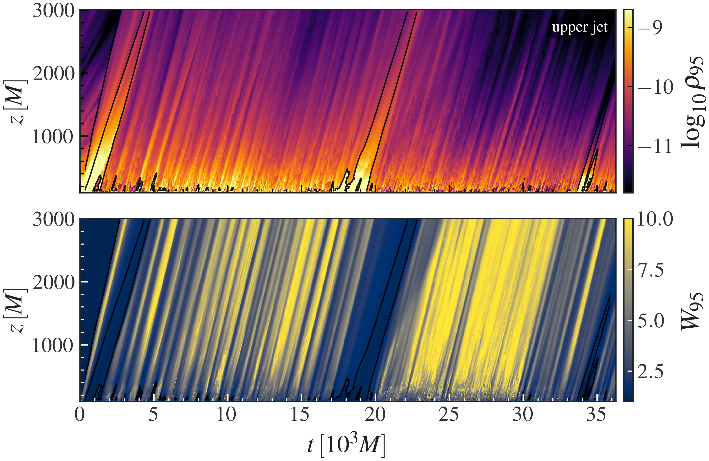
图注：sep25M模拟快喷流核心中，log10ρ的95百分位（上）与洛伦兹因子W的95百分位（下）。重复斜带显示激波向外传播；黑色轮廓标示快速核心缺失、即W低于1.5的时间和高度。
怎么看这张图：斜带把底部加载与外侧响应连起来。百分位不是横截面平均，W=10又是数值上限；这些图是动力学场而非合成射电亮度。
来源与置信度：arXiv HTML；source verified；https://arxiv.org/html/2609.24837v1/paper_plot2d_jet_shock_rho_W_25M_upper.png
图7：各诊断的归一化周期谱
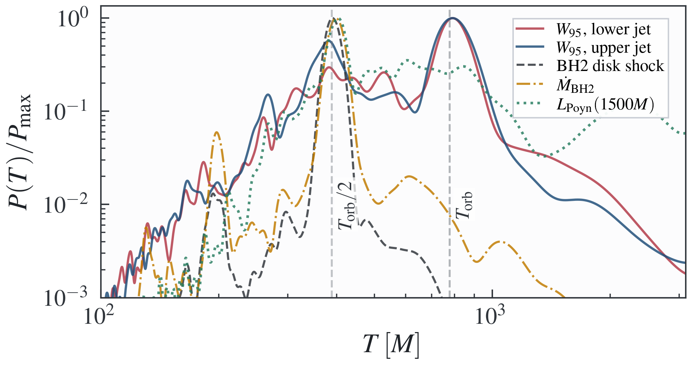
图注：BH2穿盘相互作用、BH2吸积率、上下内喷流W的95百分位，以及1500M处坡印廷功率的周期谱。用完整0—36256M局部时间的Welch方法，各谱分别归一化。竖线为特征轨道周期及其一半；穿盘、BH2吸积和远处功率峰在半轨道周期附近，单侧内喷流峰在一轨道周期附近。
怎么看这张图：重点是峰的位置和两侧轮流加载的因果关系，不能跨曲线比较归一化峰高。全时段几何在变化，这不是观测周期发现的统计显著性图。
来源与置信度：arXiv HTML；source verified；https://arxiv.org/html/2609.24837v1/paper_plot1d_BBH_jet_shock_mechanism_top_25M.png
图5：自旋法向分量变号前后的磁场绕向
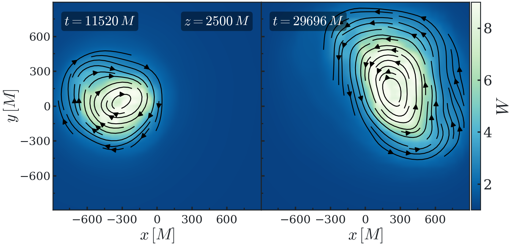
图注：sep25M在z=2500M处的横向截面，底色为洛伦兹因子W，黑线为投影磁场流线。左、右分别在主黑洞约14100M的自旋法向分量变号之前和之后。
怎么看这张图：正文进一步核查净垂直磁通仍为正，支持缠绕方向反转，而非只把极向磁通反号。这里的自旋变号不是整个向量翻转180度。
来源与置信度：arXiv HTML；source verified；https://arxiv.org/html/2609.24837v1/paper_plot2d_BBH_w_blines_flip_25M.png
强相关工作
文中与OJ 287穿盘、ASASSN-20qc准周期吸收及PKS 2131−021调制等候选机制比较。它把先前固定单黑洞时空中的扰动加载推广到预设双黑洞进动几何，但没有证明这些对象都由同一种系统解释。
同日报3C 111观测从空间分辨数据识别移动结相互作用，本篇提供中央双黑洞如何制造周期扰动的可能上游机制。两篇能在“供给扰动—喷流传播—耗散辐射”链条上互补，却没有证据表明3C 111就是本文双黑洞配置，不能直接拼成同一对象的因果证明。
同一事件 / 同类源线索：
相似工作：
（未提供）
基础理论 / 方法工作：
（未提供）
相反观点 / 张力线索：
（未提供）
相关但非 HE 的重要论文
1. Direct imaging of sub-parsec binary SMBHs in the central galaxy of the NGC 5044 group
- 来源：arXiv / astro-ph.GA
- 链接：https://arxiv.org/abs/2609.22433
- 作者：Francesco Ubertosi, Gerrit Schellenberger, Ewan O'Sullivan, Laurence P. David, William Forman, Simona Giacintucci, Christine Jones, Kamlesh Rajpurohit
- 评分：novelty 10/10，importance 9/10，relevance 9/10，final 9.30/10
- 推荐理由：双平谱可变核相距0.38pc的VLBA成像潜在重要，须全文核查双黑洞解释边界。
中文题目：NGC 5044中心分辨出相距0.38秒差距的双射电核：亚秒差距双超大质量黑洞的多频证据
做了什么：作者利用2020至2026年的VLBA观测，在NGC 5044中心发现两个紧致射电成分。较亮C1发出东北—西南方向喷流，较弱C2位于其西北侧；在8.4、15.2和23.6GHz图中可直接分开，C2信噪比约10至35。两者都呈平坦或倒转射电谱，并有历年流量变化，而附近真正的喷流结呈陡谱、空间上较扩展。多项性质共同支持C2是第二个活动核，而不是C1喷流中的普通亮结。
对轻微频率依赖的位置偏移作外推后，作者得到角间距2.52±0.10毫角秒；采用31.2百万秒差距距离，对应投影间距0.38±0.02秒差距，并据此报告亚秒差距双超大质量黑洞。双核也为当前喷流与旧X射线空腔近乎正交提供一种解释：旧爆发可能来自另一颗黑洞。但本文尚未测出双体轨道、各自质量或引力波，也未直接看到C2曾经吹起那些空腔。
为什么重要：星系并合理论预言许多双黑洞，但在亚秒差距直接分辨两个活动核心非常困难，历史上数个单频弱候选经更深观测已被否定。本文的价值在于同时提供空间分离、紧致度、光谱形状及多历元支持，使识别远强于单张图中的第二个小亮点。它为双黑洞收缩与星系核反馈提供可继续监测的近邻目标，仍需轨道运动等独立动力学验证。
理论 / 观测 / 仪器方法价值：可复用的是成像与可见度域模型并行、不同数据采用共同短基线截断、用真实喷流结作对照，并显式处理核心位移。射电核的位置是光学深度接近1的发光表面，未必就是黑洞位置；频率改变、成分混叠和非同时变化都可能影响间距与谱。本文将这些影响量化，使“两个黑洞”的解释有清楚的观测支撑与剩余误差。
为什么应该关注：双黑洞会改变喷流方向、活动占空比和星系核气体加热的解释。对高能活动核研究，同一宿主不同方向的历史射电结构不一定意味着单喷流快速翻转；需要先检查是否存在第二个活动中心。后续最有判别力的是同时多频VLBI及长期相对天体测量，测核心位移与轨道趋势，而不是由现有投影间距直接预测某次并合或高能耀发日期。
展开详细解读：文章讲解、背景、理论、重点章节、图表与相关工作
文章详细讲解
科学问题。 星系并合后的两颗黑洞应逐渐沉降并形成束缚双体，但秒差距以下系统难以直接确认。双峰光谱和周期光变都有单黑洞替代解释，过去单频约5σ的第二射电核也可能消失。NGC 5044又有当前小尺度喷流与旧大尺度空腔方向不一致的问题，值得进行更深、更高分辨率观测。
作者怎么做。 研究结合4.9、8.4、15.2与23.6GHz、跨六年的VLBA资料，进行相位参考及自校准，用不同权重成像，并在可见度域拟合圆Gaussian成分。为了比较谱与结构，统一去掉较短基线，减少对不同扩展尺度的敏感性差异，再测核心流量、大小和相对位置。
关键结果。 高频图像把原先混合的中心分成C1和C2；两者紧致、平谱至倒转、流量可变。西南喷流结则有约−1.2的谱指数和较大尺寸。核心间距在频率间大致稳定，轻微位移模型外推得到约0.38秒差距投影间距。作者将其解释为双活动黑洞，并提出旧空腔可能由C2喷流产生。
局限与下一步。 多频资料并非全部同时取得，因而跨频谱形混入时间变化；位移模型也叠加历元差异。源大小多为未分辨的上限，黑洞总质量来自先前研究而非这次双体轨道拟合。需要新的同时多频数据和长期相对运动，验证双核性质、三维结构与反馈历史。
关键结果是怎么做出来的
第一步是分辨率提升。约1毫角秒对应0.15秒差距，低频中心仍难分开，高频则出现稳定的双成分位置。C2并非单次接近阈值的斑点，而是在多个频率与历元重复出现；成像权重改变也不消除它，减少了去卷积伪影解释的空间。
第二步区分核心与喷流结。C1和C2的去卷积尺度约不超过0.4毫角秒，而西南喷流结约0.7至2毫角秒；前两者谱平坦或上升，后者随频率明显下降。方向上C2也偏离C1的东北—西南喷流轴。每项单独都不是绝对判据，组合起来才支持第二活动核解释。
第三步检查历年变化。2020至2024年C1在4.9和8.4GHz流量下降约40%和30%，C2在8.4GHz下降约20%，而西南结低频流量较稳定。流量变化支持紧致活动源，但谱图同时包含不同年份，不能把所有点视为一条瞬时精确谱。作者以颜色编码历元，阅读时应保留这个区分。
第四步进行位置修正。核心的同步自吸收表面在高频通常更靠近黑洞，故测得间距可随频率变化。作者用常数加逆频率项拟合，外推到无限频率得到2.52毫角秒。C1喷流轴大致垂直双核连线使影响较小，但C2自身位移及非同时观测仍是模型限制，不应把外推位置视作直接看到事件视界。
第五步连接历史空腔。旧外空腔年龄约8000万年，内空腔约100万年，其轴与当前喷流近正交。若来自同一黑洞，内空腔要求较快改向；有第二活动核后可以由不同发动机分担历史爆发。沿旧方向的射电延伸提供线索，但尚无C2到各空腔的连续喷流连接或独立年龄匹配，因此是解释方案。
最后比较搜索环境。另一经典直接成像系统4C+37.11也位于富集、经历并合的中心椭圆星系。两者提示这类射电响亮中心星系值得重点搜索，但两个系统不能给出无偏双黑洞发生率。射电选择只看到同时有可检测核的系统，双体总体还需考虑沉寂黑洞。
展开背景、理论、公式、模型和章节导读
背景知识
超大质量黑洞常存在于大星系中心，星系并合会先产生较宽的黑洞对，再由恒星、气体和动力学摩擦缩小间距。进入更紧密阶段后引力波才逐渐主导，因此寻找亚秒差距系统有助于连接星系并合与引力波族群，但投影近并不直接给出并合时间。
VLBI通过跨洲基线取得毫角秒级角分辨率，看到的是同步辐射结构。所谓射电“核”通常是喷流内较不透明、接近基部的区域，不是黑洞轮廓本身。双核成像能定位两个活动中心的候选，却仍需光谱、紧致度与时域信息排除喷流结。
平谱可能由多个自吸收同步成分叠加产生，常见于活动核；透明老化喷流通常陡谱。一个年轻自吸收喷流结也可能暂时平谱，因此单频位置或单次谱形不能唯一识别黑洞。本文的重要性就在于使用多项独立性质，而非赋予平谱绝对判别权。
星系团与星系群中的热气体在X射线可见，喷流吹出的空腔记录过去的机械能注入。它们的方向与年龄用于重建反馈史，但喷流可以偏转、进动或来自不同发动机。双黑洞提供新可能，不会自动证明所有错位空腔都由双体导致。
基础理论 / 方法脉络
干涉仪测量天空亮度的空间Fourier分量，基线长度决定对哪种角尺度敏感。改变频率或阵列覆盖会改变恢复的扩展流量，若不匹配采样就直接比谱，可能把漏掉扩展发射误读为陡谱。共同30兆波长下限是本文比较的重要控制。
Gaussian可见度模型直接拟合振幅和相位，避免某些图像加权与去卷积影响，但仍依赖成分数和形状。未分辨成分只给出尺寸上限；高信噪允许质心位置精度优于波束宽度，却不能把这种定位精度误说成同等的结构分辨率。
同步自吸收产生的核心位移常近似按逆频率变化，常数项用于估计不透明性消失后的相对位置。这个简化适合刻画小幅趋势，不能同时解决不同历元的真实运动、各核心独立位移和全部几何。作者也说明西南结因本征运动不适合作为精确核心位移参照。
从投影间距到双体动力学还缺倾角、相位、质量比和偏心率。即使假设圆轨道和已有总质量，也只能给出尺度估计。引力波频率由轨道周期决定，亚秒差距不自动等于当前脉冲星计时阵列最敏感的频率，也不表示已经探测到该源引力波。
公式与推导
角尺度到投影物理尺度采用小角近似：
以31.2百万秒差距距离换算，一毫角秒约0.15秒差距，2.52毫角秒约0.38秒差距。这是投影距离，不是三维半长轴。
干涉可见度的标准教学表达为
$u,v$以波长计，$l,m$为小角坐标。统一短基线截断使各频率尽量比较相同紧致结构，但牺牲了大尺度发射，不能拿这些流量代表整个星系。
射电谱指数按本文正号约定定义：
核心约$\alpha\gtrsim0$，西南结约−1.2。不同论文也会用负号定义谱指数，比较时必须先换成同一约定。
流量误差包含标定与图像噪声：
$N_{\rm beam}$为积分区域相对波束面积，10%标定项使高信噪成分也不具有任意小误差。跨频系统相关还可能影响谱形解释。
位置不确定度在本文近似为
它描述质心统计精度，不包含所有相位标定、模型与天体本征变化，因此是位置拟合的近似误差模型。
核心间距的频率拟合为
若频率以GHz代入，$B=0.88\pm0.55\,\mathrm{mas\,GHz}$，拟合约化卡方约1.59。外推常数得到 adopted 间距，但逆频率模型是物理近似，非同时数据也参与误差。
为理解后续动力学要求，标准圆轨道教学关系是
这里$a$是真实半长轴，本文没有测得；以投影间距代入只能估数量级，不能据此给出已验证的引力波频率或质量。
圆轨道引力波并合时间的教学标度进一步为
对间距四次方及质量比敏感，实际还有偏心率与环境输运。因此直接成像双核与预测多久并合之间仍有显著信息缺口。
模型拟合 / 应用方法
研究在AIPS完成延迟、带通、相位参考和自校准，随后用CASA成像及Difmap拟合可见度。23.6GHz噪声约比期望差两倍，与校准源条纹较弱有关；43GHz资料未能可靠校准而未用于双核结论。保留这些质量差别比把所有频段一视同仁更能判断证据。
为了比较结构，对所有资料使用共同30兆波长内截断，再用圆Gaussian表示C1、C2和西南结。这个方法控制大尺度敏感性，仍不是完全相同的全套基线覆盖。作者报告多种图像权重下双核稳定，说明发现不依赖单一成像选择。
跨频谱使用不同历元，低频重复观测可量化部分变化，但高频点尚不构成同时谱。因此“平谱或倒转”是综合性质，不宜过度拟合单一精确自吸收转折。西南结23.6GHz未检出采用约5σ上限，不能当作零流量数据参与普通最小二乘。
间距模型仅常数和逆频率两参数，以波束宽度除信噪作误差，所得常数经距离换算。后续最有效检验是同一天覆盖多个频段，同时保留相位参考和稳定外部天体测量，再长期测相对运动。旧空腔归属与双体轨道需各自建模，不应由现有位置拟合自动推出。
重点章节 / 结果段落怎么读
结果与图1： 先找到C1喷流轴和偏离轴的C2，确认哪些频率真正分开双核，再查各频段信噪和波束大小。
图2与方法的Radio spectra： 把两个核心与西南喷流结对照，注意颜色表示年份；平谱、紧致和变化是联合判据。
Frequency-dependent core position： 理解2.52毫角秒如何从频率拟合外推，分清观测质心、透明极限和黑洞真实轨道位置。
讨论3.1与3.2： 双发动机解释旧空腔属于物理推断，中心椭圆星系是有前景的搜索环境；两者都不等于已测得双体发生率或引力波信号。
关键图表与解读
图1：NGC 5044核心多频VLBA图
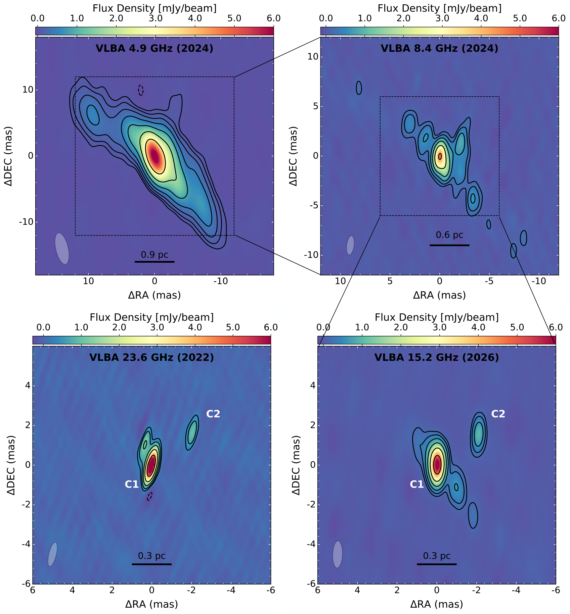
图注：线性色标多频图，从左上顺时针为4.9、8.4、15.2、23.6 GHz。4.9 GHz未分辨的明亮中央区在较高频率分成两个紧致分量：产生东北—西南喷流的主核心C1和相隔约0.4 pc的C2，后两幅标出名称。等高线从5倍图像rms起按2倍递增，成像参数见方法表2。
怎么看这张图：看高频是否将双紧致结构分开，再与光谱和变化比较。分离图像支持双活动核解释，但不能从四张图直接得到轨道周期；约0.4 pc是投影间距。
来源与置信度：arXiv HTML；source verified；https://arxiv.org/html/2609.22433v1/fig1nat.png
图2：双核心与西南喷流结的光谱
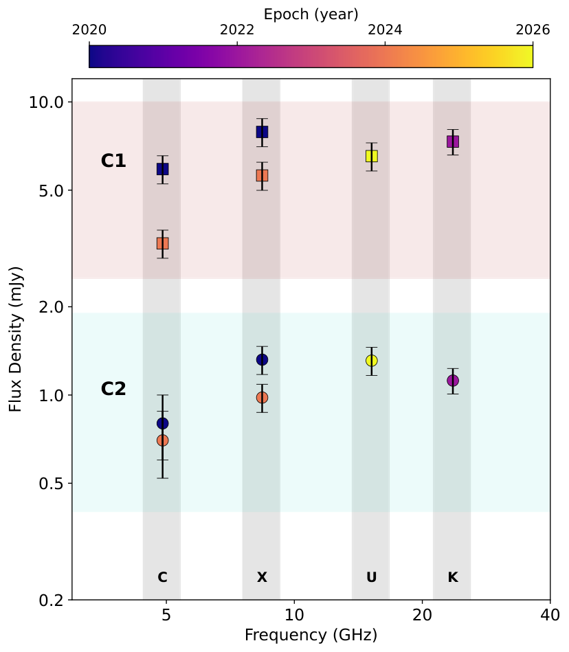
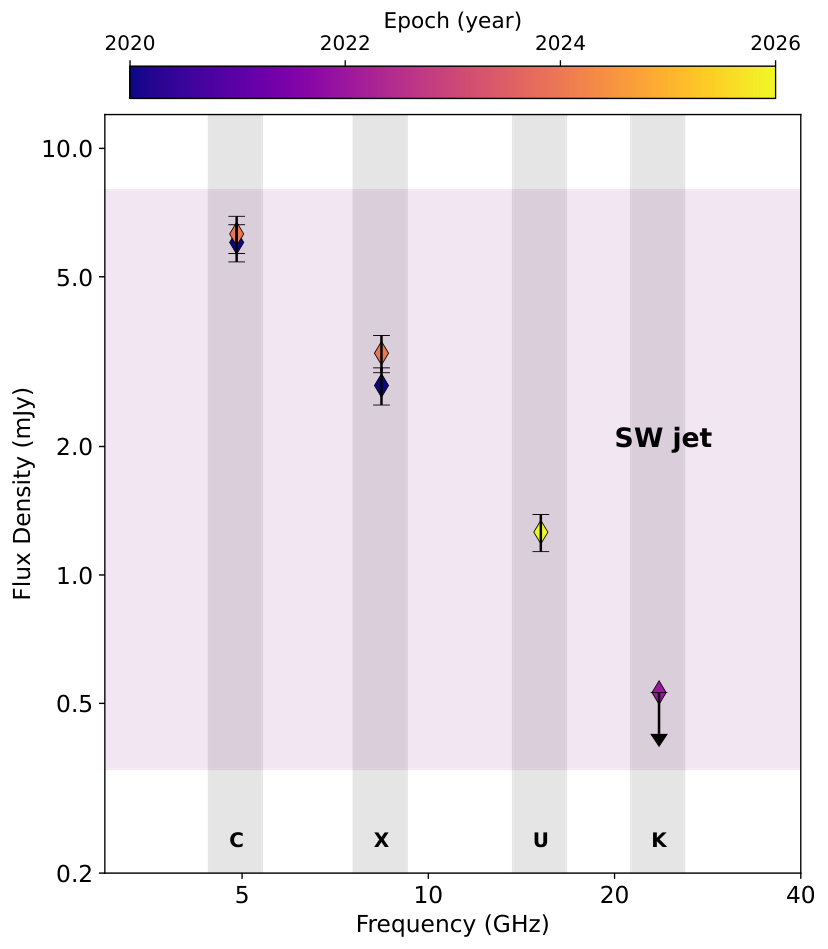
图注：左为C1、C2射电谱，右为西南喷流结，来自表3的多频多历元数据，颜色区分观测历元。C1/C2呈活动核典型平坦至反转谱，喷流结呈光学薄同步辐射的负谱指数。最低两个频率的不同颜色对应不同历元，灰色竖带标示观测频带，右图向下箭头为23.6 GHz喷流结流量上限。
怎么看这张图：用喷流结作对照理解两个核心的平谱证据，但多频点并非全部同时观测，变化可能影响斜率；双核心解释还需结合紧致度和多年位置结构。
来源与置信度：arXiv HTML；source verified；https://arxiv.org/html/2609.22433v1/spectra_C1_C2_epochs.png；https://arxiv.org/html/2609.22433v1/spectra_SWjet_epochs.png
强相关工作
Rodriguez等及Bansal等对4C+37.11的VLBI研究是直接分辨秒差距双核的重要先例，本文将相似证据推进到更小投影间距。相反，NGC 7674和RBS 797的早期弱第二核候选在后续多频深观测中未获支持，说明多频、多历元与对照成分对于确认尤其重要。
Lobanov的核心位移框架说明为何射电质心随频率改变，本文用其常见逆频率参数化修正间距。NGC 5044此前的Chandra空腔和VLBI喷流研究提出方向错位难题，新双核为其提供替代解释；真正将旧爆发归给C2仍需射电连接、年龄与动力学证据。
同一事件 / 同类源线索：
相似工作：
（未提供）
基础理论 / 方法工作：
（未提供）
相反观点 / 张力线索：
（未提供）
补充推荐：近期/较早未读论文（非今日论文）
1. Overmassive black holes and little red dots naturally form in simulations
- 来源：Nature
- 链接：https://www.nature.com/articles/s41586-026-10985-8
- 作者：Sunmyon Chon, Shingo Hirano, Tomoaki Ishiyama, Seok-Jun Chang, Volker Springel
- 类型：补充推荐（近期/较早未读，非今日每日论文）
- 评分：novelty 9/10，importance 9/10，relevance 9/10，final 10.00/10
- 推荐理由：宇宙学辐射流体模拟自然形成过重黑洞与小红点，直接回应JWST核心难题。
中文题目：重种子如何长成小红点：把早期黑洞形成、包裹阶段与过重黑洞连起来的宇宙学模拟
做了什么：JWST发现的一批“小红点”既有红色光学连续谱、宽氢线和弱X射线，又似乎拥有相对于宿主过大的黑洞。本文追问：这些性质能否来自黑洞出生后的一段真实演化，而不是分别人为安排种子质量、气体包层和超爱丁顿吸积？作者在一个受邻近星系强紫外照射的原星系团环境中，用AREPO辐射流体模拟跟踪气体坍缩、超大质量恒星形成、黑洞吸积和迁移，并对恒星形成与黑洞周围气体分别加密计算。
结果形成约百万太阳质量的重种子，经短暂超爱丁顿增长，到红移约8达到约三千万太阳质量。早期稠密、光学厚的环黑洞盘能够同时提供强Hα辐射和电子散射展宽所需条件；数十万年后包裹减弱，系统更像普通活动星系核。这里的“自然形成”有明确条件：目标环境经过选择，模拟没有加入黑洞喷流和盘风的动能反馈，谱线部分主要核验物理条件和发射率，不能解读为对所有小红点的完整光谱与丰度拟合。
为什么重要：早期黑洞难题包含两个不同问题：第一颗种子从哪里来，以及种子为何没有被自身辐射吹走燃料。本文用较深的晕势阱把两者连接起来：紫外场延缓恒星形成，让晕继续积累气体；坍缩后既能造出更重的种子，也能留住电离气体继续供给。其科学价值是提出一条同时解释质量和可见阶段的演化路径，而不是单独展示一颗快速增长的黑洞。对观测的支持目前属于机制可行性与量级一致性，尚非种群层面排他证明。
理论 / 观测 / 仪器方法价值：可借鉴的是多尺度验证结构：大尺度计算决定辐射环境和供气历史，小尺度重算检查超大质量恒星是否形成，再用更细的环黑洞气体分布估计氢线与散射光深。每个层次都需要明确其分辨率和未解析处方，避免把一个网格单元吞下的质量直接当成真实恒星质量。作者还降低紫外背景并提高分辨率，检查结论的敏感性；未来最有价值的扩展是加入磁场、动能反馈和自洽谱线转移，把“条件具备”推进到可与具体观测逐项比较。
为什么应该关注：对高能天文读者，这篇文章说明X射线弱并不必然等于黑洞不活跃：早期包裹气体可能把高能辐射吸收和再处理，而光学宽线也可能含有重要散射成分。后者尤其影响由线宽反推黑洞质量的做法。如果宽线不全是开普勒运动，质量估计和所谓“过重”程度就需重新检查。值得关注的后续检验是同一个模型能否同时解释X射线限值、Balmer吸收、线翼形状和宿主环境；本文不直接给出地面甚高能望远镜的可探测通量。
展开详细解读：文章讲解、背景、理论、重点章节、图表与相关工作
文章详细讲解
科学问题。 传统轻种子来自第一代恒星残骸，起点质量较小，要在早期宇宙有限时间内变成超大质量黑洞，需要长期高效供气。但轻种子的恒星前身往往已经把浅势阱内的气体电离、加热甚至蒸发掉；种子诞生时反而处于缺粮状态。直接坍缩重种子缓解了时间压力，却仍需说明形成环境、后续供气和小红点特殊光谱为何同时出现。
作者怎么做。 作者从宇宙学N体加半解析计算中挑出受强Lyman–Werner紫外照射、又没有被邻近大星系潮汐破坏的候选晕，进一步模拟其辐射、化学与气体动力学。选取的环境约对应3.8倍标准差的高密度涨落，因此并非普通随机星系。紫外辐射破坏分子氢，使气体难以过早冷却成普通小质量恒星；坍缩的有限时间和并合加热又让晕在真正形成原恒星前继续长大。
关键结果。 较大气体库形成数十万至近百万太阳质量的超大质量恒星，随后产生重黑洞种子。恒星处于膨胀、较冷的表面状态，电离反馈较弱，周围保留的气体进入黑洞出生后的短暂高吸积阶段。模拟到红移约8时形成约三千万太阳质量的黑洞，所在星系恒星质量约十亿太阳质量，黑洞质量比例约百分之一。围绕第二颗重种子的加密计算显示，在形成后26千年，氢线亮度与电子散射光深具有小红点所需的量级。
局限和下一步。 本文没有把磁化喷流、盘风的动能反馈算进去，作者明确将增长结果视为这种假设下的上限参照。种子形成、吸积半径、恒星寿命和黑洞合并都有未解析处方；单个特殊环境的成功不能自动给出整个宇宙的事件率。下一步应联合扩大环境样本、解析角动量输运、计算非LTE谱线转移，并比较加入动能反馈后短暂包裹阶段是否仍然足够常见。
关键结果是怎么做出来的
第一步先看气体为什么能够积累。经典直接坍缩常把晕达到约8000 K的原子冷却阈值当成起点，但本文中真正形成原恒星时，晕的维里温度已约40000 K。两者之间存在坍缩延迟和动力学加热。更深势阱不仅增加可参与坍缩的质量，还提高逃逸速度，使被电离到约一万度的气体未必能够离开；这是“造出重种子”和“留住燃料”共用的物理环节。
第二步把恒星形成与黑洞增长拆开看。图3中的高分辨率原恒星计算可形成多个成员，而非一颗预设孤立超大质量星。最重成员在约2 Myr内增长到数十万太阳质量，持续吸积使半径膨胀，表面温度降低，从而减弱破坏供气的电离反馈。质量曲线的跃升还包括恒星合并，不能把所有增长都解释成平稳盘吸积。
第三步核对黑洞的供给时序。图1显示重种子出生后先有短暂超爱丁顿吸积，再降到约0.1—1倍爱丁顿，后续随进入邻近星系、包层被剥离而下降，最终在宿主中心附近恢复吸积。轻种子对照轨迹长时间停留在低质量。因而本文并不是假定从出生起始终指数增长，而是在同一动力学环境内展示不同种子路线的差异。
第四步检查“小红点”联系靠什么成立。26千年时，选定盘面附近气体的氢密度可超过每立方厘米一百亿，半径一万天文单位内估计Hα光度约为$1.5\times10^{43}$ erg/s，Thomson光深约10.2。高密度可提高氢第二能级布居，高电子柱密度可产生散射宽翼。这些数值来自发射率与柱密度估算；由于多数Hα辐射从较外侧发出，实际逃逸光子的有效散射光深不能直接等同于穿过整个系统的总光深。
第五步看同一系统是否会离开这一状态。到523千年时，估计光深降至0.43，已解析区域Hα光度降到约$5.3\times10^{39}$ erg/s，低于典型小红点。作者推测更内侧未充分解析区域可提供额外宽线辐射，外围再散射，形成较普通的AGN外观。这个后期解释含有发射效率假设，必须与早期直接从模拟壳层求和的结果区别。
最后检查结论稳健到哪一层。较高分辨率运行得到相似增长历史，紫外背景降低2、5、10倍后最终质量仍保持同一量级，变化在数倍以内。这支持选定环境中的机制不是一个精细调参点。但它没有测试喷流反馈强度、所有环境的发生频率和整个小红点观测选择函数，因此还不能宣称重种子路线已唯一解释总体人口。
展开背景、理论、公式、模型和章节导读
背景知识
超大质量黑洞的“种子问题”本质上是一个时间和供气问题。观测到的质量并不只由种子起点决定，还取决于吸积占空比、辐射效率和宿主能否持续输运气体。较重种子减少所需增长倍数，较低辐射效率则允许相同辐射亮度对应更大的质量流率，两种作用常在早期黑洞模型中同时出现。
第一代恒星形成于几乎无金属的气体。分子氢能使气体冷却，但Lyman–Werner波段光子可破坏它，从而延后坍缩。延迟不是简单“禁止形成恒星”：原子冷却最终仍能让气体坍缩，只是此时晕更大、气体更热、特征不稳定质量不同。这就是邻近星系既可能抑制恒星形成、又可能帮助重种子诞生的原因。
小红点是基于紧致形态和光谱颜色识别的观测类别，而非已确立的单一天体类别。红连续谱、宽Balmer线、部分吸收特征与X射线弱共同提出约束。普通尘埃消光、恒星连续谱、高密气体吸收和黑洞包层模型各能解释其中某些特征；有说服力的模型应处理这些特征之间的关联，而不是逐个加自由参数。
“过重黑洞”也包含测量层面的前提。黑洞质量常从宽线宽度与经验半径—光度关系估计，宿主恒星质量则需分离AGN光与恒星光。如果电子散射显著展宽Hα，或者宿主光被强AGN污染，两端都会受影响。因此图2与本地质量关系的偏离既是需要解释的现象，也带有观测建模的不确定性；模拟提供的是一条物理上可行的成长轨迹。
基础理论 / 方法脉络
把气体加热后能否赶走，取决于热运动与引力束缚的比较。相同的一万度电离气体，在小质量晕中可能蒸发，在较深的势阱中仍能滞留并继续向中心流动。因此仅看辐射功率不够，还要比较气体声速、逃逸速度、供气半径和能量沉积的位置。本文延迟坍缩使晕继续长大，正是改变了这种比较。
爱丁顿极限平衡的是辐射力和引力，并不直接规定任何吸积流的质量流率都不能超过某数值。高光深吸积流中，光子扩散时间可长于流入时间，能量随物质向内输运；质量流率增加时，逃逸辐射亮度增长较慢。本文采用细长盘的分段亮度处方来描述这种情形，而没有直接解析事件视界附近的相对论辐射流。
原恒星的膨胀与黑洞盘的光子俘获是两个不同阶段。前者由快速吸积向恒星包层注入熵，使表面较冷、强电离光子较少；后者发生在黑洞形成后的高光深流动中，改变质量流率到亮度的转换。把两者混在一起会误以为所有反馈都被关闭，实际上模拟始终跟踪相应的辐射加热，只是其谱形和效率随阶段改变。
谱线展宽也有不同来源。气体真实速度分布通过多普勒效应展宽谱线，电子散射则可在多次碰撞中改变光子频率。后者可以生成很宽的翼而不要求每个发光气团具有对应的轨道速度。故高光深气体模型必须同时预测光深、电子温度、发射位置和逃逸路径，不能用一个总电子柱密度就完成精确线型预言。
公式与推导
以下把原文的吸积亮度处方与标准教学关系连成一条检查链。首先，在球对称、电子散射主导并以电离氢估算每个电子承担质量时，辐射力等于引力给出
其中$G$是引力常数，$M$为黑洞质量，$m_p$为质子质量，$\sigma_T$为Thomson截面；光度单位是erg/s。这是判断“超爱丁顿”的光度基准，几何和不透明度改变时不能机械套用。
为把光度换成质量流率，统一采用
$\epsilon_r=0.1$是本文使用的参考辐射效率，$\dot M_{\rm acc}$为供给吸积流的质量流率。注意质量流率的“倍数”依赖该定义；它不等于实际辐射光度倍数。下面按这一量纲一致的标准定义解释原文式(4)。
原文采用的分段细长盘近似为
两支在$\dot m=2$处连续。高流率端呈对数增长，所以输入更多质量并不按比例增加辐射反作用；这是短时快速增长可行的关键处方，而不是作者直接从全相对论内盘解出的光谱。
其物理图像可用扩散与流入时间表示：
$H$为厚度，$R$为流动半径，$v_R$为径向速度。若$t_{\rm diff}>t_{\rm in}$，光子来不及向外扩散便被带向中心。此式是解释处方的教学标度，不是本文对每个网格测量并展示的时间尺度拟合。
在恒定爱丁顿比$\lambda$和恒定效率的理想阶段，质量增长满足
这说明重种子为何节省所需增长时间，但不能用一条指数曲线替代图1：实际供气与效率随时间变化，包层剥离还会造成低吸积阶段。这里推导的用途是估算数量级和检查增长预算。
接下来把气体分布接到可观测量。原文从盘面附近壳层估算电子柱密度，使用
$n_e$单位为$\mathrm{cm^{-3}}$，$N_e$为$\mathrm{cm^{-2}}$，故光深无量纲。早期总光深大可以支持散射宽翼，但来自较外层的Hα光子穿过的柱密度更小，需进一步求发射加权转移。
在B类复合近似下，教学上可写氢线亮度为
这把密度、温度和体积连接到erg/s单位的光度。本文用相应发射率估算得到早期明亮、后期衰减；在极高密度下，共振散射和能级布居偏离简单复合条件，作者也指出B类估计有局限。最后，只有结合这一发射位置分布与$\tau_e$，才能从“稠密包层存在”推进到实际谱线预言。
模型拟合 / 应用方法
本文的主工作是前向数值模拟，不是对小红点样本进行后验参数拟合。输入包括宇宙学初始条件、邻近恒星形成产生的紫外场、初始气体化学和辐射反馈处方。目标晕需满足强辐射和避免潮汐破坏两个条件，并在候选中选择快速增长者。阅读时应把这一选择函数保留在结论中：计算回答某类有利环境如何演化，而不是直接测量其在全部星系中的概率。
恒星和黑洞通过sink粒子表示。网格达到一定密度后，以未解析吸积半径吸收周围气体，再用高分辨率研究校准的关系估算实际恒星质量。质量守恒靠多余吸积物质返还周围网格维持。此处最关键的诊断是sink尺度是否包入太多尚未到达恒星的气体，以及恒星合并准则是否改变成员数；仅凭总质量曲线平滑不能证明这些子网格过程已收敛。
作者通过两类重算检验关键环节：原恒星形成区域提高密度分辨率，黑洞周围区域解析到约500 au；此外对总体运行提升质量分辨率并降低紫外强度。看这些比较时应分别问种子形成时间、最终质量和气体密度结构是否稳定。一个指标稳定不能代替其他指标收敛，尤其谱线亮度对密度平方敏感，通常比总质量更容易受未解析结构影响。
与观测比较包括黑洞—宿主质量关系、Hα光度、光深和X射线吸收条件，但没有给出统一似然、样本选择函数或模型证据。图2中的误差条是观测估计的不确定度，不是模拟产生了相应后验。后续严谨比较应将观测选择、质量估计偏差和模拟占空比折入前向目录，再问相同模型能否同时解释数量、颜色、线宽及X射线限值。
最重要的失败模式是动能反馈削弱供气、低金属环境被邻近星系污染、恒星更早坍缩以及散射线宽导致观测质量重估。前两者可能减少重种子的成功率或成长速度，后两者则可能改变阶段持续时间和观测映射。它们不是可以统一称作“系统误差”的小修正，而可能影响本文演化链中不同箭头是否成立。
重点章节 / 结果段落怎么读
- Main与Rapid emergence。 先画出“延迟坍缩—较深势阱—重种子—短暂高吸积—迁移”的时间线，再读图1。抓住轻种子对照为何缺气，而不是只比较最终质量。
- Proto-supermassive stellar system。 联读图3和sink处方，区分气体输入、成员合并与恒星膨胀。问反馈为何减弱，以及更早的相对论坍缩会改变哪一段演化。
- Spectral signatures。 对照图4逐项核实氢密度、Hα光度和电子光深。把直接估算的早期发射与假设内区额外供线的晚期解释分开。
- Methods与Robustness tests。 重点读动能反馈缺失、紫外背景处理、500 au重算及分辨率对照，判断哪些结论已被敏感性测试覆盖，哪些仍待新物理检验。
关键图表与解读
图1：宇宙学模拟中重种子黑洞的形成与成长
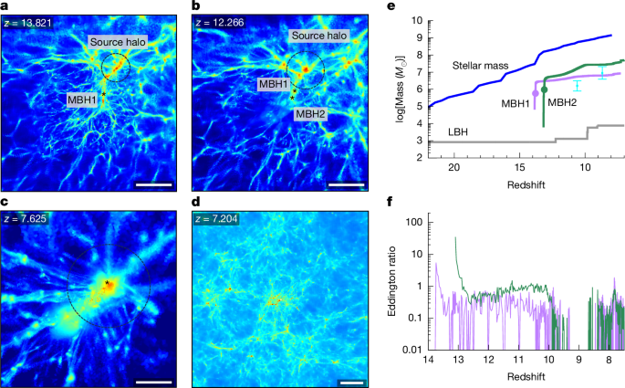
图注：a—c：目标晕在代表时刻的气体密度，黑星号为超大质量恒星坍缩形成的重种子；a、b分别为MBH1和MBH2形成时，c为二者迁移至邻近大晕并合后。虚线圈是提供强远紫外辐射的邻近源晕，半径为各时刻维里半径。d：最后快照、以目标晕为中心的整个16 h⁻¹ Mpc模拟体积气体密度。e：黑洞与宿主恒星质量随红移演化，灰为约z=22形成的轻种子，紫/绿为MBH1/MBH2，圆点标超大质量恒星坍缩，蓝为宿主总恒星质量，青色带误差点为观测高红移超大质量黑洞。f：两重种子爱丁顿比随红移变化，均经历短暂超爱丁顿阶段。a—c比例尺100 kpc，d为2 Mpc。
怎么看这张图：按形成环境、迁移并合、质量增长的顺序读；不要只看最后黑洞质量。这里是刻意选取稀有高密度环境的形成路径，且未包含完整机械反馈，并非已证明所有小红点都由该路径产生。
来源与置信度：Nature publisher；source verified；https://media.springernature.com/lw685/springer-static/image/art%3A10.1038%2Fs41586-026-10985-8/MediaObjects/41586_2026_10985_Fig1_HTML.png
图4：重种子周围致密盘与Hα辐射的演化
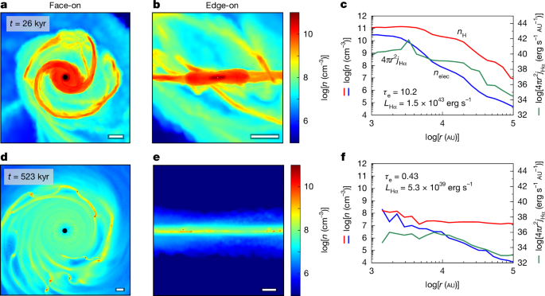
图注：a、d：MBH2周围致密盘在26和523 kyr的正面图，显示快速形成与后续演化。b、e：相同时刻侧视图，早期厚盘变为薄而受旋转支撑的结构。c、f：对应半径气壳的氢数密度（红）、电子数密度（蓝）及Hα发射率（绿）的径向分布，只选距盘平面30度内气体；图中注明估计Hα亮度与10⁴ au处汤姆孙散射光深。a、b、d、e比例尺为0.1 pc。
怎么看这张图：比较早期高密度、强Hα和较大散射光深，再看晚期盘形态及辐射减弱。发射加权光深与沿某条视线总光深不同，模拟分辨率也未覆盖所有内区线辐射转移。
来源与置信度：Nature publisher；source verified；https://media.springernature.com/lw685/springer-static/image/art%3A10.1038%2Fs41586-026-10985-8/MediaObjects/41586_2026_10985_Fig4_HTML.png
强相关工作
原文引用的直接坍缩模型从强紫外抑制分子氢冷却出发，提出重种子的形成条件；Ishiyama与Hirano的宇宙学半解析框架则提供候选环境。本文向前推进的是在这样的环境中连接真实坍缩、反馈和后续吸积，并用进一步加密运行检查原恒星阶段。这与直接在宇宙学网格中放置固定质量种子的做法不同，但依然保留未解析尺度处方。
另一条关联是观测与辐射转移：文中引用Matthee等的小红点样本、Rusakov等的稠密电离茧解释，以及Inayoshi与Maiolino关于极高密气体产生Balmer特征的研究。它们分别约束人口、谱线和物理条件。本文给这些条件提供动态形成背景，却还没有替代详细非LTE转移计算。同日未取得全文的Übler综述可作为早期黑洞质量测量的扩展阅读：Nature Astronomy综述，此处只推荐其公开摘要所列主题，不冒充已完成该综述精读。
同一事件 / 同类源线索：
相似工作：
（未提供）
基础理论 / 方法工作：
（未提供）
相反观点 / 张力线索：
（未提供）
2. A universal critical accretion rate for black hole jet formation
- 来源：Nature Astronomy
- 链接：https://www.nature.com/articles/s41550-026-02951-1
- 作者：Adelle J. Goodwin, Andrew Mummery
- 类型：补充推荐（近期/较早未读，非今日每日论文）
- 评分：novelty 8/10，importance 9/10，relevance 9/10，final 9.70/10
- 推荐理由：TDE与恒星级黑洞喷流临界吸积率联系提出跨质量统一机制，是重点核查对象。
中文题目：黑洞喷流的共同开关：潮汐瓦解事件在约百分之二爱丁顿吸积率处再度发射外流
做了什么：恒星级黑洞在吸积状态转换时会开启射电喷流，超大质量黑洞是否遵循同一临界尺度，过去难以直接检验：普通活动星系核的盘演化太慢，无法在人类观测时间内追踪完整转换。本文把潮汐瓦解事件（TDE）当作快速演化的超大质量黑洞吸积实验，先从多历元射电谱求发射区半径及外流发射时刻，再从光学、紫外和热X射线光变独立重建吸积率历史，最后比较外流发射时盘处于什么状态。
作者公开预印本的可靠样本为10个TDE、11次射电耀发：延迟外流集中在约$\dot m=0.02$附近，早期外流则对应接近或超过爱丁顿的阶段。前者与恒星级黑洞软态转硬态的喷流开启尺度相近，支持跨质量的盘—外流联系。这里不是“只要亮度降到某值一定探测到喷流”的定理；发射时刻来自膨胀模型，吸积率来自时变盘拟合，射电可见性还依赖环境和观测覆盖。本解读依据作者公开预印本，期刊网页用于确认出版信息，不将两版本默认视为完全一致。
为什么重要：过去黑洞基本平面把射电、X射线和质量联系起来，但静态相关不能确定喷流在何时开启。本文尝试把“同一对象随时间如何改变”加入检验，用两个独立波段链条建立事件时间上的联系。最值得重视的不是一个精确到小数点的万能阈值，而是早期和延迟外流对应两种不同吸积阶段，且延迟阶段的临界尺度与小黑洞相近；这为解释TDE多年后的射电再亮提供了可检验框架。
理论 / 观测 / 仪器方法价值：方法上可借鉴的是将发射时刻的不确定度与吸积盘参数的不确定度共同传播，而不是在最佳拟合曲线上读取一个点。射电谱峰决定半径，半径随时间外推决定起点，紫外平台和热X射线约束盘，三步需要各自检查数据是否真正压缩了先验。本文对几何因子、电子能量比例和光变分箱做了对照，同时指出恒速膨胀与超爱丁顿薄盘近似是更实质的模型边界。
为什么应该关注：对高能和多信使研究，外流的真实发射时刻比射电亮度峰值更接近粒子加速活动的时间起点。两者可能相隔很久，若把射电晚亮直接等同于刚启动引擎，会影响中微子或伽马关联窗口的选择。本文支持在TDE发生数年后继续进行多频射电和硬X射线监测，并用盘状态决定有物理依据的随访时段；它没有证明这些延迟喷流已经产生可探测高能中微子。
展开详细解读：文章讲解、背景、理论、重点章节、图表与相关工作
文章详细讲解
科学问题。 同样由引力驱动的吸积流跨越很多数量级的黑洞质量，是否仍在相同无量纲吸积率发生状态转换？这需要知道喷流开启时的盘状态，而普通AGN的长期演化过慢。TDE的碎片在较小半径形成盘，黏滞时间可降到可观测尺度，因而能够成为超大质量黑洞与X射线双星之间的桥梁。
作者怎么做。 作者汇总具有公开多波段数据的20个射电TDE，再要求射电谱能约束谱峰、至少多个历元能约束半径变化，而且盘在相应早晚时期被数据真正约束。最终采用表3的10源、11次耀发“gold”样本。射电链条由同步辐射自吸收谱和等分配半径组成；盘链条由FitTeD时变相对论盘模型组成，另加早期非盘光学耀发现象学项，避免强行把所有光都归给吸积盘。
关键结果。 延迟耀发的发射吸积率后验集中于几百分之一爱丁顿，文中组合值约为$0.03^{+0.03}_{-0.02}$；早期耀发的组合值约为$2.2^{+2.8}_{-1.1}$。两类的射电上升速率也不同，延迟组更陡，作者据此提出持续能量注入的紧致喷流解释。种群合成预测的转变时刻和可见比例与现有射电监测大致一致，提供了超出单个对象拟合的交叉检查。
局限和下一步。 射电外流并非逐源被直接成像为紧致稳态喷流，延迟组的光学薄射电谱与经典平谱喷流也并不完全一样。恒速外推、盘辐射处方、资料公开和多波段覆盖条件都会影响样本。预印本对合并后验抽样拟合给出的极高形式显著性，不能直接理解成11个独立事件带来的同等发现置信度；更严格的种群模型应在事件层处理测量误差和选择效应。未来可预先预测某源进入临界状态的时间，再进行独立监测检验。
关键结果是怎么做出来的
先从观测可识别性出发。一个源只测到一次射电通量，即使很亮，也不足以同时确定发射区大小和发射时刻。本文要求多频谱覆盖峰值，用低频自吸收段与高频光学薄段共同限制磁场和电子分布。当谱峰未被夹住时，半径只是下限，作者在起点拟合中排除这些历元。这一处理比把所有点都画成精确半径更可信，也让最终样本明显缩小。
接着从谱峰得到最小能量半径。等分配方法利用电子能和磁场能对半径依赖不同、总能量有极小值的性质；它不是望远镜直接分辨出的几何尺寸。作者分别改变球壳和锥形几何、降低电子能量占比，发现主要改变半径归一化而不明显改变时间零点。因此发射时刻对固定缩放相对稳健，但对真实加减速仍敏感。
第三步独立重建盘。TDE盘比恒星级黑洞盘更冷，大部分热辐射位于难直接观测的极紫外，单一X射线带的亮度不代表总吸积功率。作者结合晚期光学紫外平台和热X射线，排除被日冕幂律主导或遮蔽修正不可靠的时段。早期光学耀发另行拟合，因为它常不是直接盘光。只有后验确实被数据约束的时期，才用于读取发射时的吸积率。
第四步传播两套后验。对射电推断的发射时间抽样，同时对盘参数抽样，每次都求该时刻的无量纲吸积率。如此得到的分布同时包含“何时发射”与“盘状态如何”的误差，不会把时间不确定度遗漏掉。ASASSN-15oi既有早期又有延迟耀发，是特别有价值的同源对照，但两次耀发也共享对象和盘模型信息，种群统计中不宜无条件当成完全独立。
第五步用独立性质检查解释。延迟射电光变更快上升，若只让固定能量弹道外流扫过常见径向密度分布，难以得到如此陡的增长，持续能量注入因此更自然。一些对象在相近晚期出现硬X射线，也符合日冕与喷流联系。不过没有硬X射线探测不一定否定该解释，因为距离和灵敏度不同；同样，个别硬化也不能替代整个样本的时间关联分析。
最后把监测时间窗纳入。百万个模拟TDE中，只有部分能在约200天至7年的窗口内降到百分之二爱丁顿，所得比例约四成，与已有延迟耀发比例接近。该结果是给定黑洞质量函数、恒星分布和黏滞时间分布的预测；“比例相符”说明模型未明显违背人口统计，不意味着所有未探测源都已被唯一解释。真正的检验还需要记录未探测限值与各源随访深度。
展开背景、理论、公式、模型和章节导读
背景知识
TDE发生在恒星靠近黑洞、潮汐差异力超过自身引力时。碎片一部分离开，一部分返回并通过碰撞和角动量输运形成吸积流。返回率、圆化率、黑洞内边界吸积率和观测光度并不是同一函数；因此把经典回落幂律直接当成盘吸积率，再与射电峰值配对，可能得出误导的时间关系。
X射线双星的状态转换是本文的参照。较软状态通常有显著热盘辐射，较硬状态涉及高温日冕和不同的内流结构，射电喷流与这些阶段相关。其转变具有散布和路径依赖，不能把约百分之二爱丁顿理解为完全没有物理宽度的常数。文章要检验的是超大质量系统是否出现相近尺度，而不是消除所有状态转换复杂性。
射电耀发来自外流与周围介质相互作用后产生的非热电子同步辐射。一个外流可以早已发出，直到膨胀降低自吸收或扫到适当密度时才显著变亮。所以观测到“延迟射电”至少有两类可能：真正晚发射，或者早发射但晚显现。本文先由半径外推发射时间，目的正是区分这两者。
同一无量纲过程的时间尺度不一定只随黑洞质量缩放。普通AGN盘外缘很大，演化慢；TDE盘外缘由恒星潮汐尺度决定，代入黏滞时间后黑洞质量的一阶依赖消失。这个结构性差别解释了为何百万太阳质量黑洞的状态演化也能在人类观测时间内追踪，是整篇研究能够成立的观测前提。
基础理论 / 方法脉络
同步自吸收使低频光子难以逃逸，随着频率升高，光谱越过峰值进入光学薄区。给定电子能量幂律斜率，峰值频率与峰值通量限制了电子数、磁场和源尺寸的组合。等分配进一步选定总能量最小附近的尺度，因此是有物理假设的推断，不是没有模型的半径测量。
若这些几何与微观假设在各历元相同，它们常只把全部半径乘以常数。直线外推的零点不受共同乘法改变，这解释了作者为何强调发射时间比绝对能量更稳健。但若喷流开角、电子比例或速度随时间变，变换不再是同一常数，零点也可能移动；稳健性声明应限制在实际测试的假设族中。
盘拟合的核心是温度分布随半径与时间演化。内区温度较高、主要影响X射线尾部，外区温度较低、支配晚期紫外光学平台。两者联合可减少盘质量、黏滞时间、黑洞质量和倾角之间的退化；缺少其中一端时，某些早期参数可能只反映先验。本文按时期判断可约束性，比给每个源都输出一条看似精确的吸积率曲线更合理。
最后要区分质量流率爱丁顿比与总光度爱丁顿比。稳态、固定效率时两者成正比，但瞬态盘可以储存和重新分布质量与能量，不同半径的吸积流尚未达到平衡。作者分别从内边界质量通量与全盘积分光度计算两种比值，检查低吸积率结论不依赖选择哪一种定义，而不是预先假定两者永远相等。
公式与推导
先从恒星被破坏的尺度开始。以下前两式是正文使用的标度关系，忽略轨道穿透因子和数量级为一的系数：
$M_*,R_*$为恒星质量和半径，$M_\bullet$为黑洞质量。潮汐尺度随黑洞质量增加，但增长慢于黑洞引力半径。
对黏滞参数$\alpha$、盘厚比$\theta=H/R$，有
代入潮汐半径后$M_\bullet$消去，剩下恒星平均密度和盘输运性质。这并不表示任何TDE都同样快，而是说明不能仅用黑洞质量推断其演化必定像普通AGN一样缓慢。
然后从射电数据出发，采用原文式(1)的平滑折断谱：
$p$是电子能量谱指数，$\nu_a$为自吸收频率；该形式要求$\nu_m<\nu_a<\nu_c$。$F_{\nu,a}$在此是归一化参数，光谱在断点的精确值还含平滑因子，不能忽略定义差别。
固定电子谱和几何时，原文式(3)给出等分配半径的主要依赖：
此处省略的量包括红移、电子能量比例及面积和体积因子，比例式用于看误差如何传递，不能直接用于算cm单位的绝对半径。谱峰频率的反比依赖解释了为什么没测到峰值就难可靠约束半径。
恒速且朝向观测者的简单传播几何给出正的到达时间间隔
$\beta=v/c$，左侧定义为观测时刻减发射时刻；这样避免公开预印本文字中时间差符号顺序的混淆。拟合多个$R(t)$可同时估计速度和零点。仅把$R$共同缩放时，速度改变而零点不变；非恒速时则应重新推导。
盘侧依据原文式(25)—(32)，从温度场计算双面总辐射并定义比值：
$\sigma_{\rm SB}$与$\sigma_T$分别是Stefan–Boltzmann常数和Thomson截面，不能混用；$\eta$由自旋对应的稳态效率定义。瞬态盘中$\ell$和$\dot m$可不同。
最后，用教学形式写出作者的联合抽样思想：
$\Theta$为盘参数，$t_L$为发射时刻，$x$为希望得到的发射吸积率。它说明结果为何是一段分布，而非两条最佳拟合曲线的交点；若两个数据链条共享参数，进一步分析应纳入相应联合相关性。
模型拟合 / 应用方法
射电谱用MCMC拟合归一化、自吸收频率和电子斜率，并允许额外误差项吸收未建模散布。文章给出$2<p<3.5$、有限谱峰频率范围等先验。查看后验时应问峰值是否落在实际观测频率覆盖内；若只是先验把谱峰限制住，随后半径再精确也不是真正由数据提供的信息。
半径序列另行拟合速度和发射时间。本文测试了近球壳与一定开角的锥形几何，也改变电子能量占比，并与文献独立时间估计比较。最值得保留的误差源是恒速假设：如果晚期外流持续加能、发生减速或不同波段看到不同区域，单直线零点仍可能偏移。几何归一化测试不能自动排除这种时间依赖系统误差。
盘模型包含黑洞质量、自旋、倾角、初始盘质量、形成半径、形成时间和黏滞时间；早期光学紫外再加经验耀发成分。热X射线探测、上限和晚期平台共同约束参数。文章对超过上限的模型使用惩罚型似然，因此统计解释应跟随其实际实现，而不将它称作完整的仪器计数似然。部分源的早期盘参数不收敛时，只在晚期盘光占优区间使用结果。
拟合后的检查包括黑洞质量与宿主速度弥散、恒星质量的关系，以及无量纲初始盘半径与黑洞质量的预期反相关。这些比较未作为强制先验加入，因此确实提供额外一致性信息；但样本小且误差相关，不能取代逐源残差和模型比较。双高斯描述发射吸积率的双峰也应以独立事件数为统计单位，避免把同一后验的大量抽样误当成新增观测。
种群合成则假定黑洞质量函数、自旋分布、恒星初始质量函数、潮汐破坏概率和黏滞时间分布，预测达到临界吸积率的时间。与射电探测比例比较时，应同时模拟各源距离、背景密度和巡天灵敏度；本文的一致性检验是有启发性的近似，后续可通过层级模型和完整监测样本把这一环节做得更严格。
重点章节 / 结果段落怎么读
- Main Text与图1。 先按四步读清“射电谱—半径—发射时刻”和“多波段盘—吸积率”如何合并，理解每条曲线各自使用哪些数据。
- Methods 2.1及表3。 用表中早晚时期的可约束性核对最终10源11耀发；预印本几处删源计数文字不完全一致，解读以明确列出的gold样本为准。
- 2.2和2.3。 关注谱峰未约束时为何排除、恒速为何关键、早期光学耀发为何不能直接作为盘光，避免只记住0.02这一数值。
- 第3节和第5节。 区分两种爱丁顿比，并检查双峰、随机发射时间零假设和形式显著性的统计单位。再看种群合成能否产生可提前验证的时间预言。
关键图表与解读
预印本图1：外流启动时吸积率的四步推断
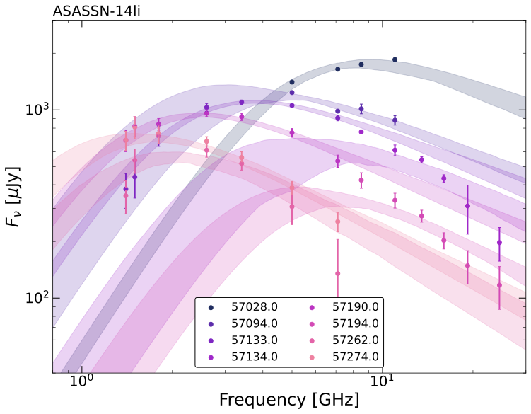
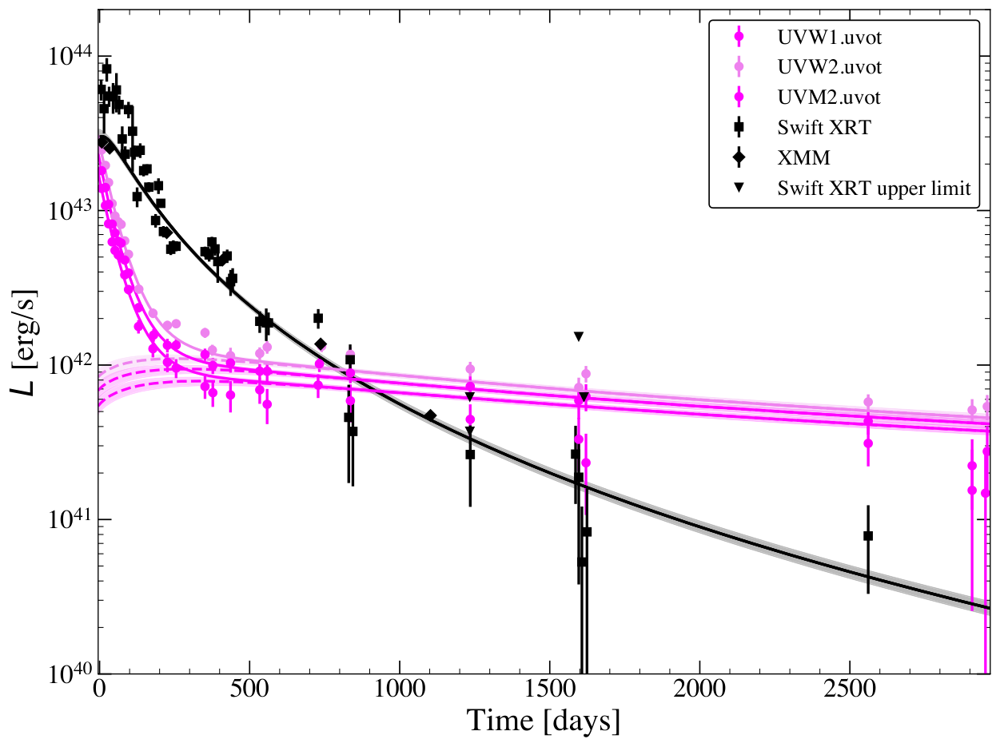
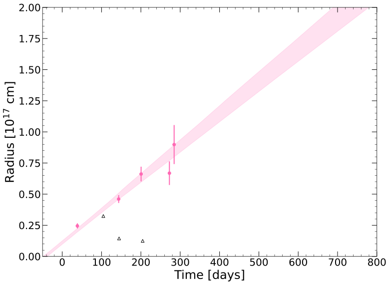
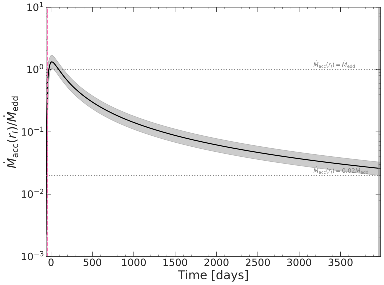
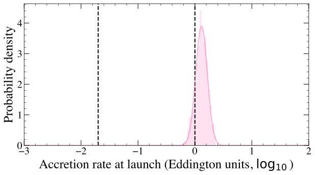
图注：以ASASSN-14li为例，其他源见方法部分。左上拟合多历元射电谱，约束谱峰频率、流量密度和光学薄谱斜率；左中由谱参数推断外流半径并拟合启动时刻，黑三角所示谱峰未约束的历元不纳入。右上拟合光学、紫外和X射线光变，约束随时间变化的盘性质，再得到右中的吸积率演化。下图在外流启动时刻抽样吸积率后验，得到对应分布。各图阴影表示1σ置信区间。
怎么看这张图：按左边“射电→半径→启动时间”和右边“盘光变→吸积率”两条链读，底部才是交汇。启动时刻依赖膨胀模型，不是直接拍到喷流发射；此处为公开预印本原图。
来源与置信度：arXiv HTML；source verified；https://arxiv.org/html/2602.14838v1/ASASSN-14li_specfits.svg；https://arxiv.org/html/2602.14838v1/ASASSN-14li_lcs.png；https://arxiv.org/html/2602.14838v1/ASASSN-14li_radius_mcmcfit.svg；https://arxiv.org/html/2602.14838v1/ASASSN-14li_mdot_radio.svg；https://arxiv.org/html/2602.14838v1/ASASSN-14li_launch_mdot.svg
预印本图2：启动吸积率的双峰分布
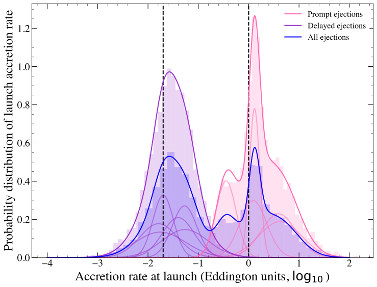
图注：本研究10个潮汐瓦解系统在外流启动时的盘吸积率，以爱丁顿率归一并采用对数坐标。即时外流用粉色，延迟外流用紫色，蓝色为呈双峰的总体分布。各即时耀发与在约一个爱丁顿率以上启动相容，延迟耀发与约0.02相容。单个耀发用平滑Gaussian曲线表示，完整数值分布用直方图表示。
怎么看这张图：先分清10个系统与11次耀发，再看每次事件的不确定度是否跨越两种区域。直方图抽样点并不是独立天体数；图上的0.02与正文汇总约0.03是不同描述口径。
来源与置信度：arXiv HTML；source verified；https://arxiv.org/html/2602.14838v1/posterior_distribution_mdot.svg
强相关工作
本文以Fender等关于X射线双星状态与喷流的框架、Maccarone及Vahdat Motlagh等对低吸积率转变的研究为比较基准；Merloni、Falcke等黑洞基本平面工作此前支持跨质量的射电—X射线联系。新增之处是利用TDE的时间演化估计喷流开启的临界位置，而不只比较不同对象的静态亮度。
射电部分沿用Granot与Sari的同步自吸收谱和Barniol Duran等的等分配方法；盘部分依赖Mummery等的FitTeD时变相对论盘。Cendes、Goodwin等长时射电监测提供延迟外流事实，本文把它与盘状态联系起来。由于公开全文是预印本，图号和样本细节均按该版本标注；期刊出版页与公开全文同时保留，便于后续核对出版修订。
同一事件 / 同类源线索：
相似工作：
（未提供）
基础理论 / 方法工作：
（未提供）
相反观点 / 张力线索：
（未提供）
3. Direct spectroscopic observation of matter falling onto a compact stellar object
- 来源：Science Advances
- 链接：https://www.science.org/doi/abs/10.1126/sciadv.aef6686?af=R
- 作者：Roi Rahin, Ralf Ballhausen, Nazma Islam, Maurice A. Leutenegger, Ehud Behar, Daisy Zamora, Joel Coley, Natalie Hell, Tim Kallman, Maximilian Lorenz, Pragati Pradhan, Joern Wilms, Aafia Zainab
- 类型：补充推荐（近期/较早未读，非今日每日论文）
- 评分：novelty 8/10，importance 8/10，relevance 9/10，final 9.35/10
- 推荐理由：紧致星物质下落的直接光谱诊断潜在重要，需阅读全文核实天体类型和证据。
中文题目：XRISM在GX 301–2看见落向中子星的气体：红移铁吸收线把恒星风吸积的中间环节接起来
做了什么：恒星风给中子星提供燃料是高质量X射线双星的标准图像，但过去通常分别看到远处恒星风与近表面辐射，较少直接测到两者之间向内运动的气体。作者分析XRISM于2025年2月1日对GX 301–2约100千秒、净曝光约50千秒的观测，将耀发末期分为七段。在第一段中，高电离铁的吸收线表现出约430千米每秒红移；扣除系统、地球和中子星轨道速度后，吸收气体相对中子星仍有至少约150千米每秒的向内视向运动。
光致电离模型给出一个自洽的代表方案：气体密度约每立方厘米一万亿、距中子星约700亿厘米、视线厚度约300亿厘米，位于引力捕获半径之内；由此估计的吸积功率也与观测亮度同量级。吸收消失后数千秒内亮度下降，进一步支持燃料团被吸积。后段吸收红移较小、亮度衰减更慢，作者提出角动量较大的盘状旋入解释，但这部分没有直接成像或独立盘谱证据，结论弱于“物质正在下落”。
为什么重要：这项研究把吸积从能量预算上的间接解释，推进为速度、位置与时间响应共同约束的过程。单条红移线可能来自轨道运动或其他气团；这里多种电离态共享位移，经过轨道方案比较后仍保留内流速度，且光致电离距离落在捕获范围内。因此核心贡献是建立一条交叉自洽的吸积证据链，而不是仅把更高分辨率谱中的新凹槽命名为“吸积”。
理论 / 观测 / 仪器方法价值：可借鉴的方法是按光变与谱形联合分段，用窄线测速度、离子丰度关系约束电离状态、柱密度和合理密度范围估计气团几何，再把质量通量与辐射功率比较。这个过程同时暴露退化：密度并非无模型直接测量，轨道星历影响视向速度，气团形状影响截面积。本文保留多套星历和密度情形，使结论强弱可以逐层检查。
为什么应该关注：风供给的双星是理解团块吸积、磁层调节和短时耀发的自然实验。对高能时域研究，值得学习的是用线先消失、连续谱后变暗的时间次序约束物质输运，而不只统计光变相关性。下一轮最有价值的观测是覆盖穿入高密度流的耀发起始阶段，检查速度、转矩与衰减时间是否按盘状旋入假说同时改变；这比给当前单次末段观测再加一个自由谱分量更有判别力。
展开详细解读：文章讲解、背景、理论、重点章节、图表与相关工作
文章详细讲解
科学问题。 GX 301–2的中子星绕B型特超巨星Wray 977运行，轨道偏心率约0.462、周期约41.5天，常在近星点前耀发。标准解释是中子星穿过恒星风中的高密度流，但流中的团块怎样跨越捕获半径并到达磁层，缺少直接运动学证据。高电离铁在6.5至7千电子伏的吸收线提供了测量这一区域的机会。
作者怎么做。 Resolve的高能谱分辨能力把邻近铁线分开。作者先按光变分段，再以1500秒窗口、500秒步进追踪吸收出现和消失，将数据细分为七段。在窄能段用吸收连续谱加Voigt吸收线、Gaussian发射线拟合，之后用适合该源照射谱的xstar光致电离模型估计气体状态，最后结合长期Fermi/GBM与Swift/BAT资料检验角动量解释。
关键结果。 第一段氢样与氦样铁吸收各自超过5σ检测水平，速度约443和419千米每秒；吸收消失后约2至4千秒内亮度降至原来的几分之一。不同轨道星历都不能消除第一段的向内运动。第六段线位移较小、与轨道速度接近，吸收消失后出现更长平台与缓慢衰减，说明两次事件的流动几何可能不同。
局限与下一步。 下落证据比临时吸积盘解释更牢固。气团距离和吸积率依赖密度、照射谱及几何假设；第六段发射与吸收重叠，一部分发射线参数需固定到第三段测量。长期自转变化虽与耀发进出阶段相关，脉冲轮廓变化也可能影响频率估计。作者明确提出补观测耀发开端，以检验正、逆角动量结构的预言。
关键结果是怎么做出来的
首先看谱线是否真实。第一段有多条来自不同铁电离态的吸收，最强氢样和氦样线具有相近红移。去掉这组线使Cash拟合统计量恶化约140；作者结合模拟评估检测，并把低电离态的2至3σ弱线保留为边缘证据。第二段孤立的约1σ硼样铁候选缺少邻近电离态支持，被视为可能的偶然起伏，主结论不依赖它。
接着把观测红移转换成相对中子星速度。轨道周期和周期变化率的不同文献组合，会使观测相位差到约0.15，预测中子星视向速度从约24到277千米每秒。采用最保守的较高轨道速度，第一段吸收仍多出约150至180千米每秒。因此不能把430千米每秒全部叫作下落速度，也不能说轨道修正无关紧要。
第三步定位吸收物。高电离铁要求强照射，而高密度恒星风若离源太远便难以保持这种电离态。xstar在不同假设密度下拟合电离参数与柱密度；代表密度为每立方厘米十的十二次方时，电离参数对数约3.2，推出距离约数百亿厘米。与至少五千亿厘米的捕获半径相比，这个位置符合正在被捕获的气体。
第四步检查气团能否供给耀发功率。柱密度除以体密度给出视线厚度，假定气团大致球状才能把它转为横截面，再乘流速和密度得到质量通量。代表值约每秒2.1乘十的十六次方克，对应约2至7乘十的三十六次方尔格每秒的释放功率，覆盖观测6.3乘十的三十六次方尔格每秒。它是数量级自洽检查，并非独立高精度质量测量。
第五步将光谱和光变按时间连接。第一段吸收结束后亮度迅速衰落，符合团块到达更内侧、完全电离并逐步消耗的图像；第六至七段则有约十千秒平台和类似时长的衰减。作者把后一种行为解释为较高角动量延缓径向流入，但光谱不能直接给出三维切向速度，故仍需检验。
最后用长期转矩作旁证。528个选定相位数据中，频率变化方向与进入或离开高密度流匹配373次、不匹配155次，优势比约6；更换Swift流量与改变筛选也保留相关。这里的极小随机概率说明统计关联存在，不会自动排除脉冲模板、轨道星历或湍流机制，所以不能把优势比6写成“盘存在概率提高六倍”。
展开背景、理论、公式、模型和章节导读
背景知识
高质量X射线双星中，明亮大质量伴星不断通过辐射驱动恒星风。中子星只捕获其中一小部分，但气体落到很小的半径可释放巨大的引力能。观测到亮度变化通常能说明吸积功率在变，却不能单凭亮度确定物质从哪条路径进入。
恒星风并不均匀。谱线驱动不稳定性、伴星轨道运动以及中子星X射线改变风的电离态，都能形成团块、尾迹或较密的流。GX 301–2的慢风和偏心轨道使这些效应突出，近星点前耀发因此是研究风与紧致天体耦合的好时机。
吸收线来自挡在连续辐射源与观察者之间的气体，因而具有明确的视线选择。前景气体落向后方中子星时，会表现为远离观察者的红移。发射线则可来自更大范围、不同方向的气体，不能因为离子种类相同就认为吸收和发射属于同一团物质。
“氢样铁”和“氦样铁”分别只剩一个、两个电子，不是氢或氦元素。它们的相对强度对照射谱和电离状态敏感；XRISM能分开这些相邻线并测小位移，才让速度与电离诊断同时可用。该源软X射线被强烈吸收，更低能的高分辨仪器难以替代这一高能窗口。
基础理论 / 方法脉络
线的中心能量测视向速度，线宽包含热运动、湍流、速度梯度与自然宽度。本文最窄吸收线的自然展宽不可忽略，故采用Voigt轮廓，而较宽发射线用Gaussian描述。同一离子的双线共享速度与宽度，并按振子强度约束深度比，减少任意自由参数。
电离参数把源亮度、距离和气体密度组合起来，表达每个粒子接受多少辐射。谱线通常直接约束这个组合，比单独约束密度强得多。作者借助风密度估计及气团尺寸合理性限制密度范围，因此最终距离仍依赖这套物理条件。
引力捕获半径来自引力势能与相对运动动能的比较，表示气体可能受中子星强烈偏转的尺度，不是事件视界，也不是保证所有内部物质立即落到表面。角动量、磁层和湍流都可改变后续驻留时间。
亮度下降时间包含气团供给结束、输运、磁层调节及辐射响应。近径向流入的响应较快，盘状流入须输运角动量而可能较慢，但这个趋势不是唯一诊断。本文用速度与时间响应联合解释，再用长期转矩统计提供额外一致性证据，仍保留替代解释。
公式与推导
下面用标准多普勒近似与正文方法式1–6连起证据。对远小于光速的视向运动，线位移给出
$E_0$是实验室线能量，正速度表示红移。多个离子共享位移比单条弱线更能排除错误认线。
相对吸积体的速度需扣除运动分量：
各项均投影到同一视线、采用相同符号约定。航天器绕地速度小于每秒十千米可忽略；轨道中子星速度是主要修正和系统不确定度。
电离平衡拟合给出$\xi$，按定义
这里$\xi$单位为尔格厘米每秒，$n$为每立方厘米粒子数。电离亮度能段须与xstar定义一致，不能直接使用未修正吸收的窄带流量代替。原文文本提取的根号有丢失，按定义恢复平方根。
柱密度是沿视线的密度积分，常密度近似给出
它只直接提供视线厚度。将其当作球状气团直径，是下一步质量通量估计额外引入的几何假设。
捕获尺度在忽略声速、使用合适相对风速时近似为
比较$r$与$r_a$检验吸收物是否位于引力能够有效捕获的区域；慢风使此尺度较大。更完整模型应加入声速和轨道相对运动。
质量守恒要求通过面积的通量等于吸积率：
小张角、近球状团块时采用第二步，$\mu m_p$为平均粒子质量。密度越高而柱密度固定，估计横截面越小，所以该表达式的质量流率反而与密度成反比。
若流入物质把主要引力能辐射出来，标准牛顿近似给出
$R$为中子星半径。与观测比较时须考虑平时基线功率；本文只要求团块能解释耀发增量的数量级，不能借该式声称全部辐射都来自同一团块。
最后以自由落体作为时间尺度参照，教学补充为
数百亿厘米对应数百至千秒量级，系数依初速度和边界而变。原文“约十的十次方厘米、约一千秒”的口头估计较粗，应用实际半径计算比照抄单个数字可靠；长平台则提示需要额外驻留或持续供给。
模型拟合 / 应用方法
窄带连续谱仅服务于测线。作者把幂律指数固定为1，以减轻6.5至7千电子伏范围内吸收柱与斜率退化；这个拟合的连续谱参数不代表完整物理吸收柱和宽带谱形。亮度估计另用更宽能段并按电离定义外推，不能混用两步结果。
计数数据采用Cash统计，窄吸收线使用有固定自然宽度的Voigt模型。氢样双线绑定位移、宽度和强度关系；低信噪电离态在后段也需共享参数。第六段的氢样发射与吸收重合，发射速度和宽度沿用第三段，因而吸收参数误差之外还应记住模型依赖。
光致电离表格扫描每立方厘米十的一十一次方至一十三次方密度，并拟合电离参数和柱密度。低密度解产生较大的气团，最高密度解提供的吸积功率偏低；结合流密度与功率可选出自洽区域，但并非所有密度由光谱本身强力排除。距离采用Gaia约3.99千秒差距，其误差也传到亮度和位置。
长期相关分析按预设进出流相位筛选，比较流量变化与自转频率变化，再换用Swift流量、选择较大变化、改变对照相位并进行误差扰动模拟。结果支持进出阶段转矩方向有规律，仍不能唯一确定盘的几何。脉冲轮廓模板偏差与时间相关性是解释时需要保留的限制，作者也承认更复杂的湍流流动可能解释部分现象。
重点章节 / 结果段落怎么读
观测与数据分段： 先在图2确定七段的时间和亮度状态，再看哪些分段还用到了吸收线变化。这样能理解为何同样亮度不一定有相同谱形。
检验吸收物是否被吸积： 按红移修正、光致电离距离、捕获半径和能量预算顺序阅读，每一步提供不同约束，不能只摘出第一条红移就结束。
近径向流与盘状旋入： 对照第一和第六次段落中的速度与衰减时长，辨认作者何时从测量转入假说。长期转矩关系是支持项，不是盘的直接照片。
材料与方法： 表3的星历变化、窄带连续谱的非物理用途、xstar密度网格及GBM对照检验，决定结论能有多强，值得与正文同时读。
关键图表与解读
图3：GX 301−2在S1与S6的铁吸收线
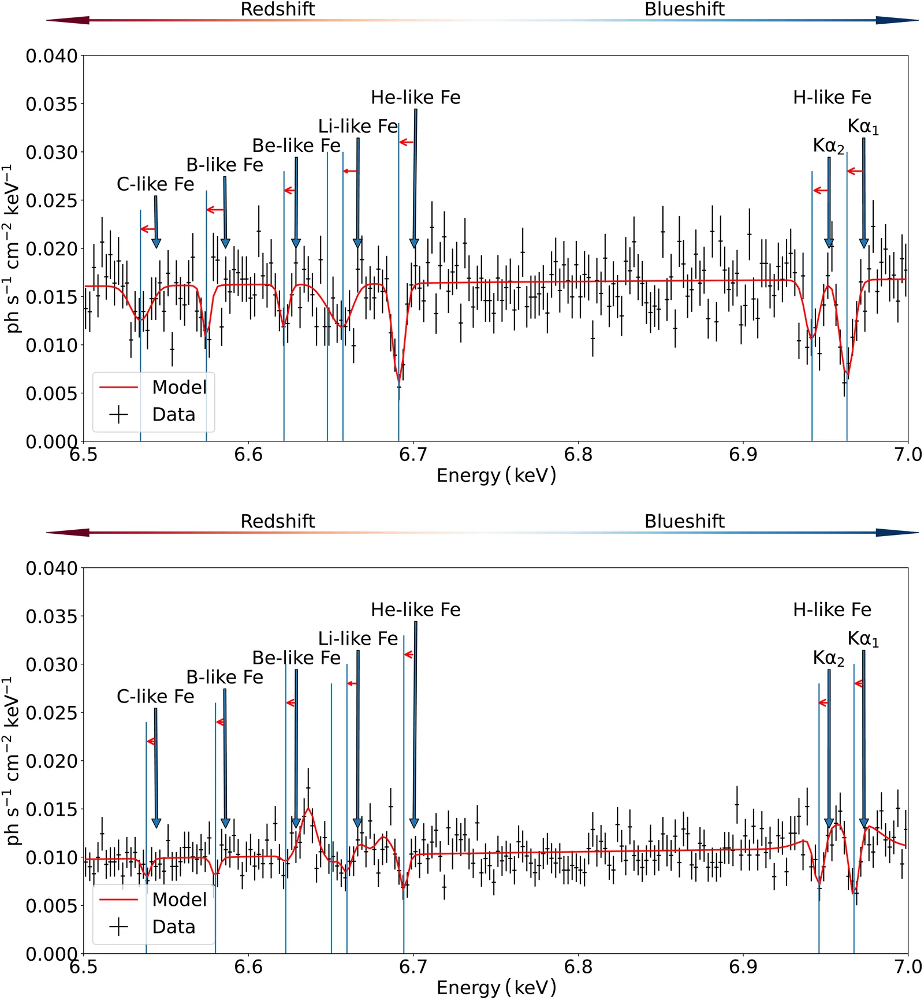
图注：吸收最明显的S1和S6时段能谱。蓝箭头为谱线静止能量，蓝线为测得能量，红箭头表示各线的速度红移。上图S1可见红移铁吸收线；下图S6同时有发射与吸收，吸收仍红移，但显著弱于S1的红移。
怎么看这张图：看同一静止能量与实际吸收位置的偏移，再扣除轨道运动讨论入流。S1证据较强；S6残余速度与轨道修正相近，不能简单称为同样显著的自由落体。
来源与置信度：Science Advances / PMC；source verified；https://cdn.ncbi.nlm.nih.gov/pmc/blobs/4873/13588177/1e8e5bf602e8/sciadv.aef6686-f3.webp
图6：S1的光电离吸收模型
图注：S1能谱与密度n=10¹² cm⁻³的表格模型。xstar成功再现谱中最显著的吸收特征。
怎么看这张图：这是固定密度示例的模型检验，不是独立精确测得密度。距离、云厚度和质量流率推断依赖该密度及几何；结合其他密度网格与轨道修正评估范围。
来源与置信度：Science Advances / PMC；source verified；https://cdn.ncbi.nlm.nih.gov/pmc/blobs/4873/13588177/e3b8a8a12fd4/sciadv.aef6686-f6.webp
强相关工作
Bondi–Hoyle–Lyttleton捕获图像建立了风吸积的基本尺度，但实际风中的团块、流和角动量破坏了理想球对称。本文引用Leahy等的GX 301–2高密度流模型和Kaper等的伴星风测量，用它们约束可能密度，再由XRISM补入以前缺少的内流速度与位置诊断；其进步是把多种尺度的证据接起来。
Xu与Stone的风吸积流体模拟说明横向密度梯度可改变流动稳定性并生成短寿命盘状结构，Koh等和后续GX 301–2自转研究曾提出盘解释。本文给出同一次耀发中的两种谱时行为并与长期转矩关联，但尚未观测完整进出过程，因此更适合作为这些模型的可检验实例，而非已唯一验证某种盘形成理论。
同一事件 / 同类源线索：
- https://doi.org/10.1126/sciadv.aef6686
- https://europepmc.org/articles/PMC13588177
- https://heasarc.gsfc.nasa.gov/docs/xrism/archive/index.html
- https://gammaray.nsstc.nasa.gov/gbm/science/pulsars/lightcurves/gx301m2.html
相似工作：
（未提供）
基础理论 / 方法工作：
（未提供）
相反观点 / 张力线索：
（未提供）
4. Star formation powers optical line emission from the CGM
- 来源：Science Advances
- 链接：https://www.science.org/doi/abs/10.1126/sciadv.aec3939?af=R
- 作者：Huanian Zhang, Lizhi Xie, Zhijie Qu, Dennis Zaritsky, Luis C. Ho, Min Bao, Fabio Fontanot, Michaela Hirschmann, Chenxu Liu, Gabriella De Lucia, Enci Wang, Haoyan Zheng
- 类型：补充推荐（近期/较早未读，非今日每日论文）
- 评分：novelty 8/10，importance 8/10，relevance 8/10，final 9.00/10
- 推荐理由：星形成供能CGM光学线涉及星系气体能量来源，须从全文核验样本及替代机制。
中文题目：星系形成的恒星在照亮周围气体：72个近邻星系的内CGM发射线与恒星形成率相关
做了什么：星系周介质是星系获取燃料和排出反馈物质的重要储库，但发射极暗，过去多依靠背景源吸收线或大量星系叠加研究。作者从MaNGA选择72个视场能覆盖至少五倍有效半径的近邻星系，提取Hα、[O II]和[O III]发射的径向分布。在五倍有效半径处，31个星系获得超过3σ的Hα探测；更远半径的可用样本逐渐减少，十倍有效半径并非对全部72个系统都测到。
外部发射面亮度与中央星系恒星形成率相关，而与恒星质量未见显著趋势。结合线比、紫外背景能量不足及电离光子预算，作者认为恒星形成区泄漏出的光子是主要供能候选，通常约1%至2%的逃逸便可解释量级。逃逸率来自散布很大的经验线比关系，不是直接测得；激波贡献也未完全排除。本文按新发表Science Advances条目收录，精读依据为对应公开预印本2607.18385，保留其原始版本语境。
为什么重要：光学发射把中央恒星形成与十千秒差距左右气体直接联系起来，补充了吸收线单条视线难以提供的空间信息。它表明外部气体亮不亮可能受中央辐射供给控制，因此“未看到发射”不能自动等同“没有气体”。这种区别会影响如何用CGM观测检验星系淬火和反馈模拟，尤其不能直接拿冷气体质量预测代替发射线预测。
理论 / 观测 / 仪器方法价值：可借鉴的是以有效半径匹配不同星系的空间区域、用多条线交叉核对、对连续谱与恒星吸收分区处理，并将上限纳入总体关系。方法也清楚暴露局限：IFU覆盖条件偏向适合观测的尺寸，外部信号低且空间像素相关，O32同时受金属丰度与电离影响。把气体、光子场和观测选择同时建模，才可能将相关性转成反馈机制约束。
为什么应该关注：这篇属于重要期刊中的一般天文研究，关注点是星系如何与周围气体交换物质和能量。其结果可帮助设计后续深积分光谱观测，并为模拟提供比总气体质量更直接的辐射诊断。下一步应对模拟进行光致电离与观测过程的前向计算，在相同视场、半径和探测阈值下比较Hα及氧线；当前结果不足以单凭发射未检出宣布某一种淬火模型被排除。
展开详细解读：文章讲解、背景、理论、重点章节、图表与相关工作
文章详细讲解
科学问题。 星系盘外的低温电离气体究竟由中央恒星、活动核、宇宙紫外背景还是激波照亮，决定了我们怎样从发射理解气体储库。极端星暴和叠加样本已有探测，但普通星系逐个测量、跨恒星质量和恒星形成率比较仍较少。本文利用少数覆盖范围特别大的MaNGA目标补上这一步。
作者怎么做。 从约一万目标中按相对视场和光纤数筛选，排除有效半径异常受核光影响及偏离中心的相互作用对象，得到72个系统。按质量选择谱线速度窗口，扣除连续谱，在椭圆或圆环中统计面亮度；同时测氧线比、少数对象的BPT诊断，并与匹配恒星质量和形成率的GAEA、TNG模拟样本比较。
关键结果。 线面亮度在约一至二倍有效半径出现转折，低形成率对象外侧平均斜率较浅。五倍有效半径Hα与形成率的Pearson系数约0.74，与恒星质量约0.018；线性对数关系的斜率约0.94，外侧约0.6。中央恒星产生的电离光子即便只有少量抵达外部，也足以供应观测复合线光度。
局限与下一步。 相关性加能量预算支持恒星光子解释，却不是独立测量每个位置的辐射来源。O32到逃逸率映射有一至二个数量级散布，只有两颗例子有较完整径向BPT信息。模拟比较用的是冷气体面密度而非合成发射，不能据此直接判定某套反馈处方错误；需更完整的辐射与选择建模。
关键结果是怎么做出来的
第一步界定样本与“盘外”。最终72个系统的恒星质量约十的8.6至11次方太阳质量，形成率跨四个数量级，但它们是MaNGA中少数能测到大相对半径的目标。作者将五倍有效半径作为保守内CGM边界，并用光学集中度、等效宽度分解和异常小有效半径排除检查。边界仍是操作性定义，不是物理上锋利的壳。
第二步测极弱发射。内三倍有效半径用恒星族模板处理吸收线，外部连续谱太弱则用局部多项式；在相应速度范围积分残差谱，并以环带汇总提升信噪。不同半径能覆盖的星系数不同：五倍处31个显著Hα探测，十倍处只有13个可覆盖对象中的6个显著探测，不能把最远点当完整总体。
第三步比较相关性。图2分别把面亮度对恒星质量、形成率和比形成率作图，同时保留未检出的上限。形成率关系明显、质量关系不明显，排除六个AGN标签对象后拟合变化很小；换用不同目录的恒星质量和形成率也大致保持趋势。这些检查支持相关性稳健，但不能消除共同测量、样本选择及半径归一化的全部影响。
第四步检验供能来源。观测到的外部Hα常高于宇宙紫外背景可供给的面亮度，纯背景解释困难。氧线比在许多对象中没有激波主导模型常见的强变化，两个详细例子的BPT多接近恒星形成区。然而外侧误差大、金属丰度有退化，作者也明确不能彻底排除激波。
第五步检查光子是否够用。形成率每年一太阳质量的示例，在假定连续形成、初始质量函数和金属丰度下，约1%至2%电离光子到达五倍有效半径即可给出约十的五十一次方每秒光子，与Hα要求相近。这里是数量级可行性，并非每个系统已测定的精确逃逸率；最高形成率对象约35%的推断尤其依赖经验标定。
最后看模拟差异。匹配星系性质后，GAEA冷气体面密度随形成率变化更接近观测趋势，TNG相应关系较弱。由于发射取决于密度平方、团块程度与照射，冷气体多但不被电离也可能发射暗。因此这指出值得进一步前向模拟的张力，而非已经完成同一可观测量的模型淘汰。
展开背景、理论、公式、模型和章节导读
背景知识
CGM指星系恒星主体外、暗晕范围内的多相气体，既可给恒星形成提供燃料，也承接恒星和活动核反馈。不同温度相态在不同波段发光或吸收，单一光学线只追踪其中部分低温电离气体，不代表全部重子质量。
吸收线依靠明亮背景源，能检测很稀薄气体，但每个星系通常只有少数视线。发射图无需背景源，可以描绘二维结构，却因辐射很弱而需要长曝光或空间叠加。积分视场光谱同时提供每个像素的谱，使位置与线比联合研究成为可能。
Hα主要来自电离氢复合后的级联，光度反映被气体吸收的电离光子与复合速率；[O II]和[O III]为氧离子的碰撞激发线，对温度、丰度和电离状态都有响应。因此氢线与氧线相互补充，单一氧线比不应被当作唯一的逃逸率计。
恒星形成率描述当前年轻恒星供给，比形成率则除以已有恒星质量，衡量相对活跃程度。恒星总质量包含漫长历史，不一定预测当前电离光子输出。外部发射更随形成率变化，在物理上支持辐射供给的作用，但仍可能与气体量共同变化。
基础理论 / 方法脉络
光致电离与复合平衡让吸收的Lyman连续谱光子转为复合线。若气体不光学厚或光子继续逃出，Hα只记录被截获部分；而尘埃和几何覆盖也改变转换。本文在CGM忽略小消光是近似，不等于直接测到了所有从盘逃出的光子。
发射面亮度近似依赖视线上的密度平方积分，吸收柱密度依赖一次方积分。因而少量稠密团块可以主导发射，却未占大部分气体质量；这是把冷气体面密度与光学亮度对比时必须说明的核心退化。
O32刻画高低氧电离态的相对贡献，受电离参数影响，也受金属丰度、谱硬度和是否缺少低电离外层影响。经验逃逸率关系来自其他类型对象，移到稀薄CGM有显著散布。文章将其用于可行量级估计，比宣称百分之几的精确测量更合适。
径向叠加还涉及检测选择。只有所有环带均检测到的对象进入某些平均剖面，最暗对象被排除；这能得到清晰剖面，但不等于全72个星系的无偏平均。与模拟或其他调查比较时必须复制同样的视场、上限和选择条件。
公式与推导
以下为连接本文实测关系与光致电离的标准教学推导，前两式解释谱线提取：
速度窗口围绕各星系红移后的线中心，质量较大的对象使用较宽窗口。连续谱和恒星吸收扣除错误会直接污染微弱外部发射。
环带面亮度和线光度为
前者常以每平方角秒流量表示，后者以尔格每秒表示。比较不同距离样本需保持角面积、投影半径及宇宙学变暗的处理一致。
在给定温度的复合近似下，
有效复合系数单位为立方厘米每秒。它说明Hα随密度平方加权，不直接等于气体质量。
若采用Case B并达到电离平衡，所需吸收光子率为
光子继续逃逸或其他加热通道会改变解释；式子给出中央星形成需供给的量级参照，而不是自动证明来源。
恒星形成供给可写成
$\kappa_Q$依初始质量函数、金属丰度和形成史，$f_{\rm esc}$还需明确是逃到内CGM还是逃出整个暗晕。本文讨论的是前者，不能直接当作宇宙再电离的外逃率。
氧线比与电离参数定义为
$\Phi_{\rm ion}$为单位面积每秒电离光子数。O32不只由$U$决定，所以经验关系的一至二dex散布必须传到逃逸率解释。
本文拟合关系使用归一化对数：
五倍有效半径处$m_1=0.94\pm0.08$，十倍处约$0.60\pm0.08$；不同半径样本不完全相同，斜率变化不能单独等同辐射衰减规律。
最后用均匀厚度$\ell$的教学极限说明模拟转换：
只有厚度、电离比例和团块程度固定时才接近面密度平方。实际比较缺少这些条件，不能直接从图3冷气体关系读出模型Hα预测。
模型拟合 / 应用方法
作者对内区采用pPXF与MILES恒星模板，外区因连续谱信噪不足改用局部多项式，并限制强连续谱像素以减少卫星或外盘H II区污染。选择本身会影响可见结构，需要在复现中明确掩膜、环带及倾角处理，而不是只下载管线线图求平均。
误差以一千次bootstrap重采样估计，报告16.5至83.5百分位。MaNGA重采样像素及相邻分辨元存在相关，实际有效独立样本数值得核查；本文提供的方法说明不能被扩展为已经穷尽所有空间系统误差。
对数直线回归同时考虑横纵测量误差，采用斜率角均匀先验、截距均匀先验，内禀散布固定0.2dex，50条walker、5000步。作者称包含上限，但正文未详细展开删失似然的实现；复现时应检查上限如何进入概率，而不能把上限当普通测量点。
模拟匹配恒星质量和形成率在0.1dex以内，GAEA和TNG的冷气体定义与空间描述不同，前者还需要外推指数气体分布。公平验证需要相同辐射照射、气体团块和观测选择的合成线图。当前比较是方向性的物理线索，非直接同量纲拟合优劣。
重点章节 / 结果段落怎么读
样本与盘晕边界： 确认72个对象怎样从MaNGA筛出，五倍有效半径为什么被采用，并注意它不是无条件适合每个星系的物理边界。
结果2.1及图1： 先读面亮度转折，再读O32；检查哪些对象因全半径检测要求进入堆叠，避免把选择后的均值当全样本。
结果2.2及图2： 比较形成率与恒星质量关系、未检出上限及光子预算，分清相关性、供能可行性与唯一因果解释。
结果2.3与模拟方法： 冷气体面密度尚未经过辐射转换，模型差异值得追究，但还不是对Hα观测的最终淘汰检验。
关键图表与解读
预印本图1：周介质Hα面亮度与O32径向分布
图注：左为MaNGA样本Hα发射面亮度径向分布，右为O32，两图均按恒星形成率着色。左图虚线表示未检出并采用2σ上限；蓝、绿、红点为log(SFR/太阳质量每年)分别在−1至0、−1.75至−1、低于−1.75的平均叠加径向剖面，只纳入所有径向箱均检出的星系。右图仅用−1至0及低于−1两组，且要求各半径[O III]和[O II]都检出；小点表示三颗AGN宿主。
怎么看这张图：彩色平均线含全径向检出选择，不能代表全部72个星系的无偏平均。O32反映电离状态，逃逸率还需经验校准；此处是经作者与DOI核验对应的公开预印本图。
来源与置信度：arXiv HTML；source verified；https://arxiv.org/html/2607.18385v1/flux_radial_SFR.png；https://arxiv.org/html/2607.18385v1/ratioOII_OIII_SFR.png
预印本图2：外区Hα与宿主性质
图注：上、中、下排分别为5Re（4.5—5.5Re）、7.5Re（7—8Re）、10Re（9.5—10.5Re）的Hα面亮度，三列分别对恒星质量、恒星形成率和比恒星形成率。红实心圆为检出，灰空心圆为未检出的2σ上限；蓝方块为MUSE测量，绿三角为星暴IRAS 08339+6517由Hβ转换的Hα测量，青空心圆为AGN宿主，黑实线为最佳模型。
怎么看这张图：比较同一行中质量和SFR相关性的差异，再看远半径的样本减少。上限不是具有精确亮度的测量点；面亮度反映气体受照发光，不能直接当成冷气体质量。
来源与置信度：arXiv HTML；source verified；https://arxiv.org/html/2607.18385v1/flux_5Re.svg；https://arxiv.org/html/2607.18385v1/flux_8Re.svg；https://arxiv.org/html/2607.18385v1/flux_10Re.svg
强相关工作
此前SDSS大量谱叠加与MUSE深场研究已探测到星系周围极弱发射，但叠加难以恢复单个普通星系的差异。本文利用MaNGA少数大相对覆盖目标建立逐对象关系，并与两个文献深观测例子比较，是从平均CGM走向星系间变化的推进。
GAEA半解析模型和IllustrisTNG流体模拟给出不同冷气体与恒星形成关系，提示反馈与气体保留的处理值得检验。Green Pea等对象的O32—Lyman连续谱逃逸经验关系为本文光子预算提供参考，却不是在稀薄CGM直接标定的定律；后续辐射转移与独立电离诊断能决定这些关系如何迁移。
同一事件 / 同类源线索：
- https://doi.org/10.1126/sciadv.aec3939
- https://arxiv.org/abs/2607.18385
- https://arxiv.org/html/2607.18385
- https://www.tng-project.org/data/
相似工作：
（未提供）
基础理论 / 方法工作：
（未提供）
相反观点 / 张力线索：
（未提供）
5. Supernova origin of galactic turbulence revealed by superbubbles
- 来源：Nature Astronomy
- 链接：https://www.nature.com/articles/s41550-026-02981-9
- 作者：Fanyi Meng, Chao-Wei Tsai, Jingwen Wu, Sihan Jiao, Mordecai-Mark Mac Low, Zhi-Yu Zhang, Amélie Saintonge, Hui Li
- 类型：补充推荐（近期/较早未读，非今日每日论文）
- 评分：novelty 8/10，importance 8/10，relevance 8/10，final 9.00/10
- 推荐理由：FAST与JVLA的118个超泡将超新星能量输入与星系湍流联系，值得重点推送。
中文题目：M31的118个超泡能否养活星系湍流：FAST与JVLA联合测量超新星动能供给和气体耗散
做了什么：星系中性氢的无规则运动会较快耗散，需要持续供能；超新星一直是主要候选，但从恒星形成率换算爆炸能量，往往还需猜测耦合效率。本文联合FAST对弥散大尺度发射的灵敏度与JVLA的空间分辨率，在仙女座星系M31识别118个具有膨胀运动学特征的H I超泡，测量半径、膨胀速度和周围气体密度，并与从线宽推算的湍流耗散比较。
正式发表摘要确认：样本动力学年龄延伸到约4000万年，推得单位体积动能供给约为每立方千秒差距每百万年十的49至51.5次方尔格，与湍流耗散的量级及径向趋势相近，支持成团超新星反馈足以维持M31的中性气体湍流。版本说明：以下详细方法与所配原图来自作者公开的初投稿本2609.21854；作者明确说明它未纳入同行评审修改，出版版新增了检查和图表。因此本文不把预印本的具体辅助公式、误差或完整性论证冒充最终出版版，正式结论以期刊版为准。
为什么重要：研究尝试绕开“形成多少恒星就有多少超新星，再假设多少能量进入湍流”的长推断链，直接测已经耦合到中性壳层的动能。供给与耗散在不同半径一起下降，比单一全星系总能量相近更有说服力。但两者共享密度和盘厚度等输入，且只在可识别泡的位置与选定低投影区域可靠测量，因此“足够供能”比“唯一驱动、全盘逐点证实”更准确。
理论 / 观测 / 仪器方法价值：仪器方法价值是单碟与干涉数据联合恢复完整空间尺度，否则干涉仪可能漏掉较宽谱的弥散气体，低估线宽和湍流功率。物理诊断则同时要求天空形态与位置—速度椭圆，防止把静态空洞或旋转剪切当作膨胀泡。比较中再去掉显式密度因子，检查相关性是否仅由共同径向密度下降造成，这种控制在能量预算分析中很有借鉴意义。
为什么应该关注：超泡既是恒星反馈环境，也是宇宙线加速和传播的重要候选场所。本文实际测的是中性气体机械能，没有测定宇宙线能量份额或伽马辐射效率，因此不能把所有泡动能当作可供高能粒子的功率。值得后续联合研究的是泡年龄、膨胀速度、磁场及高能发射是否对应，以及在其他星系和更完整样本中局部供能关系能否保持。
展开详细解读：文章讲解、背景、理论、重点章节、图表与相关工作
文章详细讲解
科学问题。 H I线宽常超过热运动能解释的范围，湍流却会在约千万年尺度耗散。超新星、磁旋转不稳定性和大尺度流动都被提出为驱动源。要判断超新星是否足够，既需测实际进入气体的能量，也需覆盖慢速老泡，避免只选年轻强反馈阶段导致平均功率偏高。
作者怎么做。 FAST补上大尺度弥散发射，JVLA提供约216秒差距空间分辨率，联合数据的速度通道约1.68千米每秒。初投稿本以连续通道中的椭圆形态找候选，再在六方向位置—速度切片要求可测膨胀结构，得到118个泡。对周围环带估密度，使用膨胀年龄计算动能率；另从热修正后的H I线宽及盘厚度估耗散。
关键结果。 出版摘要与公开初稿共有的结论是，样本年龄覆盖至约40百万年，泡动能供给与耗散在绝对量级和空间趋势相符。初稿进一步显示去掉共同密度后速度平方除时间的比较仍相近，支持不只是共同密度产生的相关。该证据说明超新星反馈在所研究环境有足够能量，尚非直接跟踪每份泡能量如何转成全盘随机运动。
局限与下一步。 泡识别不完整、慢老泡的年龄依赖演化模型、线宽需热与几何修正，几何和密度误差传到功率。初稿部分辅助表达式存在明显不一致，且出版版已修订，日报不将这些原样当作可复现最终算法。应优先核对最终正文与目录，再进行更小尺度、更高完整度样本以及能量转移的空间比较。
关键结果是怎么做出来的
第一步恢复真实气体谱。单碟与干涉仪不仅决定图像有没有弥散结构，也影响二阶矩线宽。初稿说明联合数据恢复较宽弥散谱，线宽可明显大于仅JVLA结果；耗散近似随速度三次方变化，所以这一差别对能量预算很敏感，绝非单纯图像更漂亮。
第二步识别膨胀。初稿候选需跨至少三个速度通道保留部分椭圆形态，并在位置—速度切片呈连续椭圆或弧。膨胀前后壁在速度上分离，提供比二维空洞更强证据。作者还估旋转剪切所能产生的最大分裂，认为样本膨胀高于该值；小、暗、非对称泡仍可能漏检。
第三步估泡功率。用周围环带恢复膨胀前环境密度，假定近球形、局部均匀，得到扫掠质量和动能，再除体积与年龄。这里计算的是壳层保留的动能率，不是每颗超新星十的五十一次方尔格总能量全部耦合到湍流。推算爆炸数又另需热损失模型，两者不要混用。
第四步估耗散。观测线宽先减去假定暖中性气体的热贡献，只使用厚盘投影展宽小于通道分辨率的区域，避免把旋转视线叠加当湍流。再假定最大涡尺度与气层厚度相关，得到能量密度除耗散时间。盘厚度和暖气比例是这里的重要系统输入。
第五步检查共有变量。供给和耗散都含气体密度，因此单看二者随半径下降并不够。初稿另比较膨胀速度平方除年龄与湍流速度平方除耗散时间，移除显式密度，趋势仍相近。它增强物理连接，但系数与采样范围仍需保留，不能说所有统计依赖已被消除。
最后看全盘外推。118个泡只覆盖一部分体积和超新星历史，作者用年轻恒星分布与理论孔隙率讨论代表性。由局部平衡推广全盘具有物理动机，但不是完整检出所有泡后的直接总和。公开初稿还说明出版修订增加独立盲检查，未提供其具体科学内容，日报不编写它的通过率或结果。
展开背景、理论、公式、模型和章节导读
背景知识
单个超新星爆炸在星际气体中吹起壳层，星团内连续爆炸可以共同维持更大的超泡。泡中心稀薄而热，周围扫掠气体较密；随时间减速、破碎后，部分机械能进入周围介质。看到超泡给出的是反馈留下的动力学痕迹。
H I的21厘米线穿透尘埃，适合描绘整个气体盘，尤其对分子云散去后的较老结构仍有响应。年轻泡可能在分子或电离示踪中更明显，老泡则膨胀慢、对窄速度通道和高灵敏度要求更高。只测年轻泡会偏向高瞬时功率。
湍流速度由复杂线宽估计，但线宽还含热运动、旋转梯度、多个视线气层和仪器响应。M31倾角很大，厚盘几何特别重要；只有把这些贡献分开，剩余宽度才可作为随机运动的近似。
能量足够与过程唯一不同。若超新星保留动能可补偿湍流损失，说明不必再强制引入另一个同量级来源，但其他驱动仍可贡献。宇宙线、磁场和热气体也参与反馈，本文聚焦的中性动能只是总反馈预算的一部分。
基础理论 / 方法脉络
能量驱动泡在均匀介质、近恒定机械注入时有半径随时间五分之三次方增长的相似解，因此年龄不是简单半径除速度，而带约0.6系数。真实老泡可停滞、破碎或受环境影响，这个年龄是模型依赖的动力学估计。
湍流耗散通常按大涡翻转时间估计，即驱动尺度除速度。若驱动尺度设为盘厚度，盘越厚同样速度下耗散越慢。该选择不是直接测得的三维能量级联谱，比较不同研究时须核对用的是尺度高度还是全厚度。
泡功率与湍流功率都以单位体积计，便于比较局部气体环境，但不能未经填充因子权重直接积分成全盘总功率。不同空间掩膜、泡周环带与低投影条带的代表性，是从局部关系外推到全星系时的主要问题。
单碟与干涉数据联合需要匹配流量尺度并恢复缺失短间距。公开初稿给出较大的相对归一化修正，说明绝对标定与数据组合应在最终版本中认真核查。由于两类功率共享部分标定误差，量级吻合既有物理意义，也不能忽略共同系统误差。
公式与推导
以下前两式为标准21厘米与泡演化关系，其余沿公开初稿主线组织；不照搬初稿有问题的辅助投影和密度系数。
此光学薄近似中$T_B$用K、速度用千米每秒。若有显著自吸收，需修正，不能把亮温积分无条件当真实柱密度。
恒定机械功率$L$驱动均匀密度$\rho$的泡，其标准相似标度为
初稿正文用0.6，补图一处写0.5；本解读采用与上述模型一致的正文系数并保留版本限制，不假装两者完全相同。
近球形扫掠体积与动能为
这把周围密度当作原先泡内部的代表密度，忽略强梯度与非球形，是可检验近似。
除体积与动力学年龄得到
速度以三次方进入，因此20%的速度误差可显著放大功率误差。单位为尔格每立方厘米每秒，而非总超新星能量。
二阶矩线宽扣热的初稿方案为
作者取暖中性比例约0.6、热宽度约8千米每秒，另通过掩膜减小投影展宽。两种修正分别处理热与几何，不可互相替代。
各向同性湍流假设下，
$\sigma_{\rm turb}$为一维分量，$2h$是所假定耗散尺度。密度、速度和厚度都参与系统误差，必须统一$h$定义。
相除可看出共同密度如何约去：
这说明去密度比较有价值，也提醒两边各向同性系数不同。直接画两个速度平方除时间的量时，不能把相近说成无需系数的严格相等。
空间投影的一般正确教学形式可写成
$x',y'$是天空上沿盘长、短轴的物理坐标。初稿辅助表达式缺少相应平方项，密度与厚度系数也需最终版核查，故这里仅解释几何原理，不提供伪称复现的数值算法。
模型拟合 / 应用方法
公开初稿识别主要靠目视形态和六方向位置—速度核验，约200个初选收敛为118个明确膨胀泡。半径和速度各赋约20%代表误差；这不是盲注入回收得到的完备率。出版修改增加独立分类检查的事实由作者版本声明确认，但其结果未在公开初稿给出，不补写。
环境密度取泡外一至二倍半径环带，并掩去泡内及邻泡，再借气层厚度转成体密度。初稿对尺度高度、全厚度与换算系数的写法需要谨慎，日报只保留依赖关系；正式复现应读取出版版最终定义，而不能把该初稿所有数字直接串成精确代码。
耗散率来自低投影展宽条带，北侧主要轴区域因银河系前景排除。线宽和厚度误差合成后，初稿给约50%功率不确定度。泡位置的局部功率与相应半径的耗散比较，并非每个泡内直接分离出的三维随机能量。
年龄覆盖、泡间重叠、分子及电离相贡献、年轻恒星对应关系均用于讨论代表性。它们支持超新星足够供能的图像，但全盘完整性和其他驱动份额仍不能仅由118个泡确定。未来应做人工泡注入回收、盲分类一致性及统一观测掩膜的全盘能量积分；其中出版版已开展的具体步骤须以最终正文为准。
重点章节 / 结果段落怎么读
版本声明与正式摘要： 首先确认本文公开全文是初投稿本，118个泡、约40百万年及功率量级可与出版摘要交叉核对，辅助方法不宣称已经读取出版修订。
观测与Bubble Identification： 看单碟补大尺度的必要性，再看三通道形态和位置—速度弧怎样排除静态空洞，理解样本缺失哪些泡。
主文两条能量率及图3： 区分壳层动能与爆炸总能量，注意共享密度，以及去密度比较还剩什么假设。
Turbulent Energy Estimation与完整性讨论： 热宽度、厚盘投影、驱动尺度和填充因子决定全盘外推有多可靠，不能只读两条曲线重合。
关键图表与解读
初版预印本图2：M31超泡的空间与膨胀性质
图注：a为M31中性氢柱密度图，红椭圆为本文超泡，蓝椭圆为Brinks等1986年样本。b—d为一个代表超泡在三段速度范围积分的柱密度图，面板标出速度（km/s），展示结构的速度跨度；a、e的黄圈标其位置。e比较半径r与膨胀速度vexp，新样本红色、旧样本蓝色。虚线为假定中性氢密度0.2 cm⁻³、恒定超新星率的关系，实线为Weaver模型10、20、40 Myr等膨胀时间线。
怎么看这张图：先用不同速度通道确认壳结构，再读半径—速度推断年龄。这里保留的是公开初投稿版本，不能把图号和样本识别流程当成出版修订版完全相同。
来源与置信度：arXiv HTML；source verified；https://arxiv.org/html/2609.21854v1/r_v_diagram.png
初版预印本图3：超泡供能与湍流耗散
图注：a：各超泡体积能量注入率随星系半径R变化，新样本红色，Brinks等旧样本蓝色，灰带为湍流耗散，绿区为MRI估计，插图展示旧样本完整范围。b：比较超泡vexp²/texp与湍流σ²/τdiss，沿用颜色。c：在相同R处比较超泡与湍流能率，画1:1线，中值偏移0.45 dex，插图为完整旧样本。d：超泡能率随膨胀时间变化，对比Weaver模型动能轨迹：初始密度0.03 cm⁻³且t=0时r0=50 pc，以及0.5 cm⁻³且r0=100 pc；点线标示成团超新星结束，叠加旧样本。
怎么看这张图：b去除了共同密度因子，是检验相关性是否仅由相同输入制造的重要对照。0.45 dex约为因子2.8，局部供耗接近不等于已证明全星系所有湍流都由这些泡维持。此为初版图3，并非出版版同号图。
来源与置信度：arXiv HTML；source verified；https://arxiv.org/html/2609.21854v1/dot_e_balance.svg；https://arxiv.org/html/2609.21854v1/v2_over_t_balance.svg；https://arxiv.org/html/2609.21854v1/dot_e_vs_turb.svg；https://arxiv.org/html/2609.21854v1/dot_e_vs_timescale_insets.svg
强相关工作
Brinks等1986年的M31 H I泡目录主要覆盖较年轻、较快且集中于十千秒差距环的结构。新联合观测扩大慢速老泡覆盖，使平均反馈功率更接近整个星团超新星活动期；这也解释为何旧样本不能不加选择修正就与新样本平均功率比较。
Weaver能量驱动泡模型提供半径—速度—年龄联系，后续含导热与混合的计算修正热损失和超新星数。星系湍流的MRI或大尺度输运模型构成竞争供能路径，本文对M31估计其贡献较弱，但这不是所有星系通用结论，仍应按磁场、盘厚度与流场分别检验。
同一事件 / 同类源线索：
- https://doi.org/10.1038/s41550-026-02981-9
- https://arxiv.org/abs/2609.21854
- https://arxiv.org/html/2609.21854
相似工作：
（未提供）
基础理论 / 方法工作：
（未提供）
相反观点 / 张力线索：
（未提供）
说明
评分由 LLM 给出初评，再由本地阈值策略过滤；IACT、TeV 伽马射线和高能中微子天文学按重点方向处理。